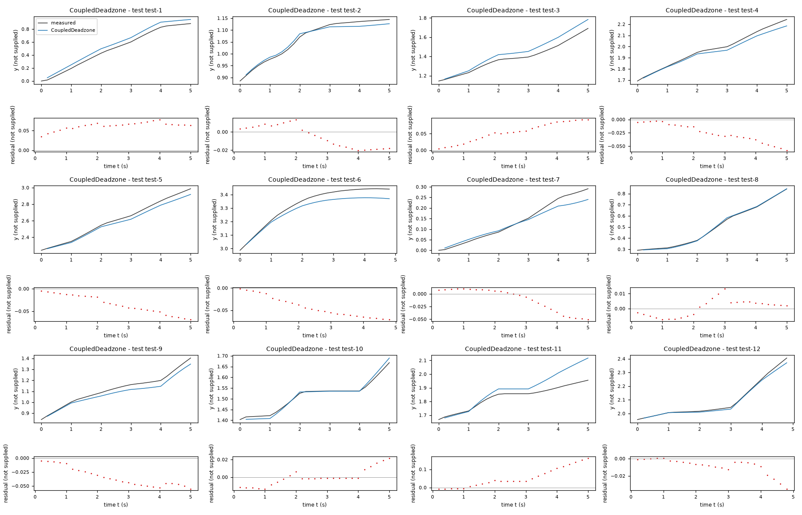
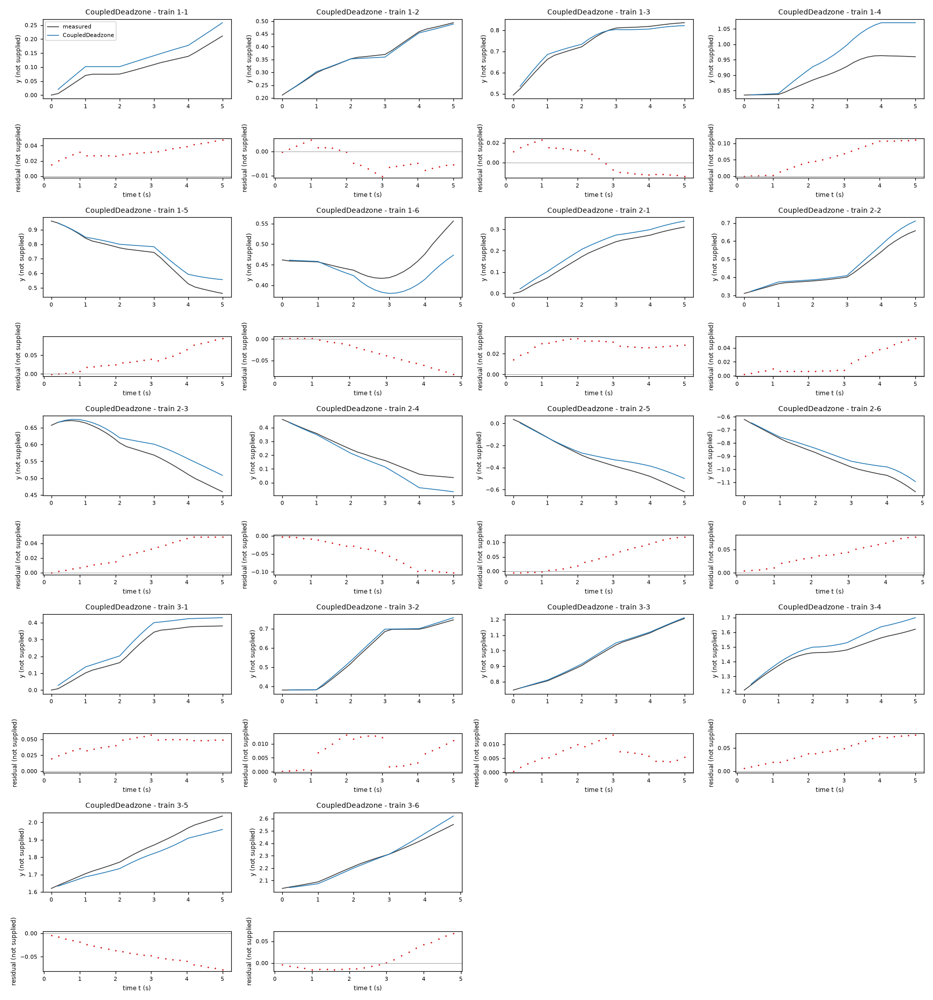
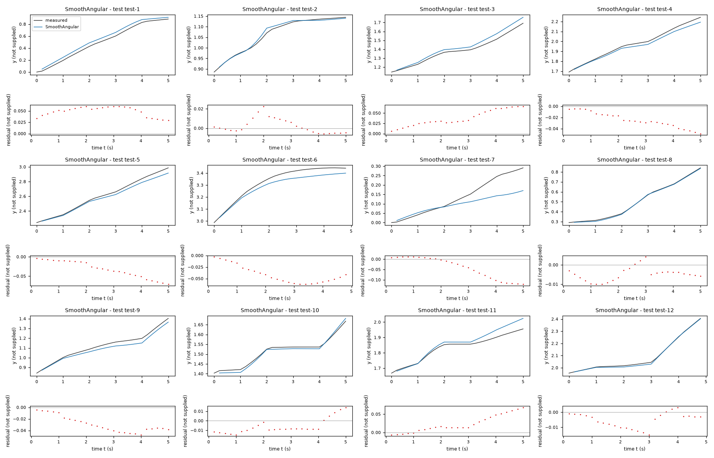
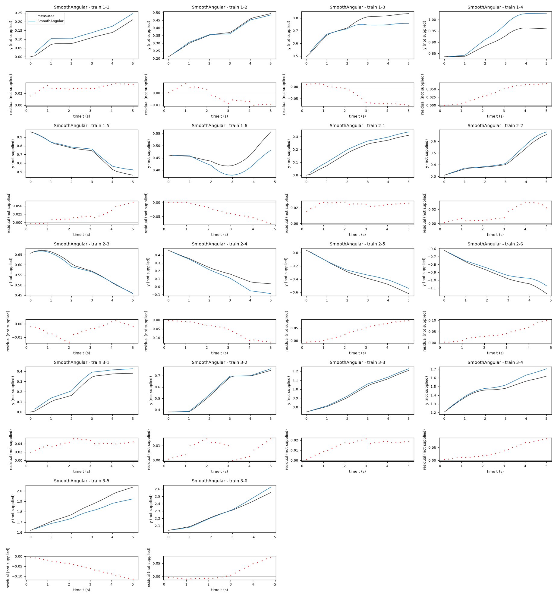
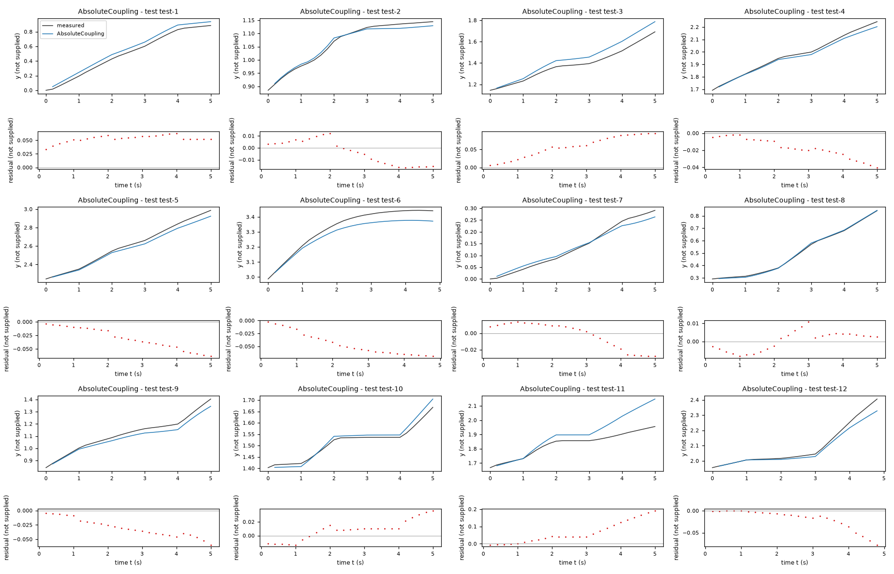
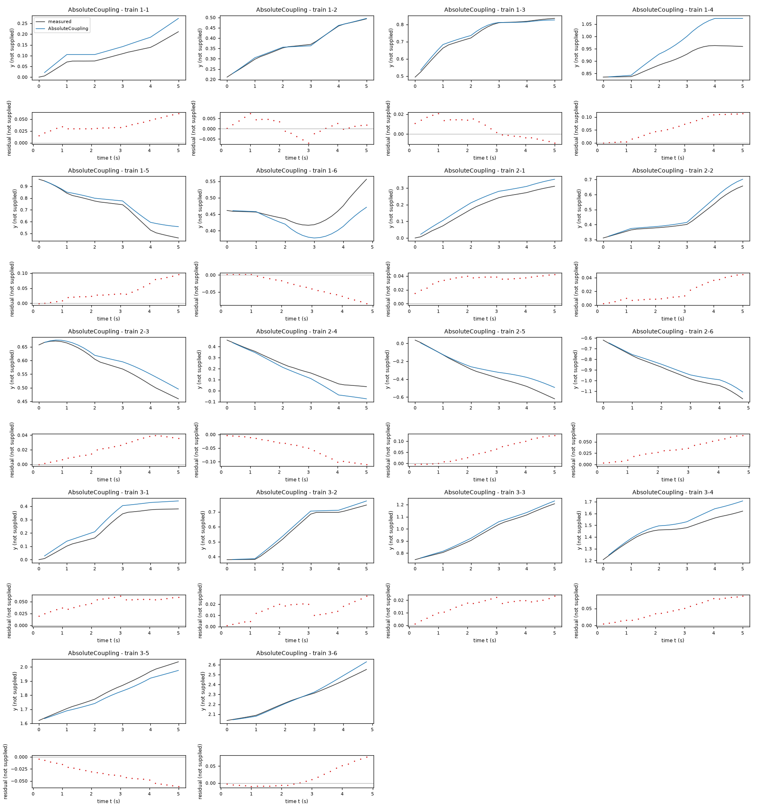
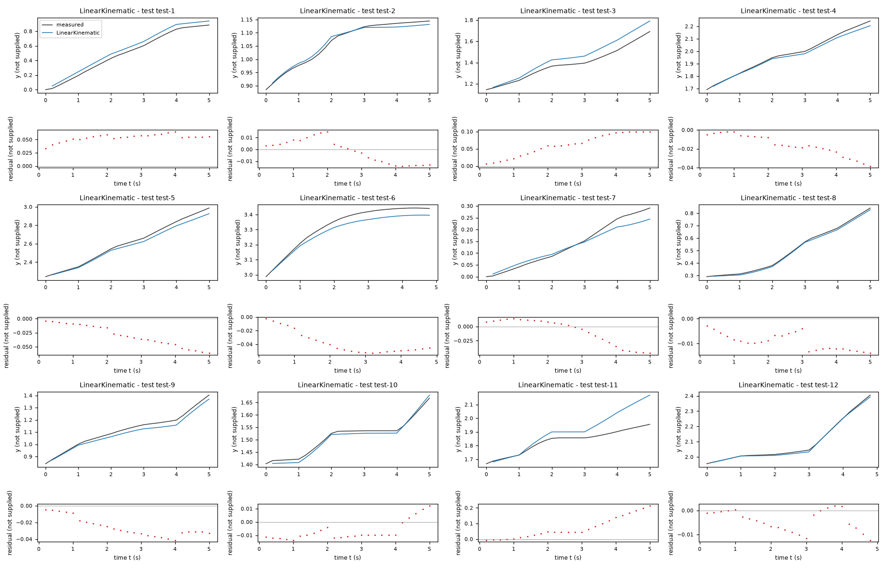
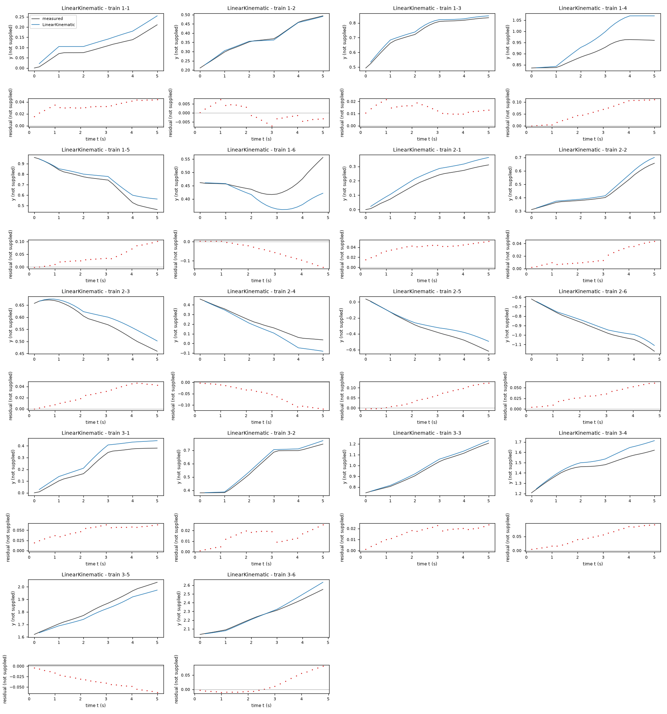

Identification task kt5o – run 4 of 5
Generated: 2026-10-08 00:00 UTC
Finished by the agent after 35 turns, 935 s of execution time and 1.83 USD. 4 models delivered, 4 evaluated.
- test_value in
<run>\transcript.jsonl: -0.0534071 - test_value in
<run>\transcript.jsonl: 0.0148353
1 Models
| Model | Fitted parameters | Training error of y | Test error of y | |
|---|---|---|---|---|
| CoupledDeadzone | 6 | 0.04118 | 0.04153 | recommended by the agent |
| SmoothAngular | 7 | 0.03916 | 0.03542 | lowest test error |
| AbsoluteCoupling | 7 | 0.04245 | 0.04244 | |
| LinearKinematic | 5 | 0.04473 | 0.04316 |
The models are listed in the agent's order. Errors: root mean squared error between simulated and measured y. Training data: 18 segments of 25 to 26 samples (447 scored samples); the harness cuts the training trajectories into segments of at most 25 simulated samples, the length of the test trajectories, so that the two errors are comparable. Test data, which the agent cannot access: 12 trajectories of 25 to 26 samples (298 scored samples). The agent recommends a model from the training data. The model with the lowest test error is found with the test data, in hindsight, among the 4 models of this run; the agent could not make this choice.
CoupledDeadzone has the lowest pooled leave-one-trajectory-out free-running y RMSE among the retained structurally different families: 0.115160 versus 0.127536 for SmoothAngular, 0.142038 for AbsoluteCoupling and 0.212931 for LinearKinematic, all in unspecified y units on the three training trajectories. The nonlinear coupled-input response is supported by residual structure and its static-map regularization limits path-specific fitting. SmoothAngular fits training paths better and remains a useful alternative. With only three validation trajectories and apparent missing input memory, the ranking is uncertain and is not a claim about unavailable test performance.a = 0.1788 unknown; column units not supplied (fitted), d = 0.0101 unknown; column units not supplied (fitted), l = 0.08261 unknown; column units not supplied (fitted), c = 0.8879 unknown; column units not supplied (fitted), e = 0.0003512 unknown; column units not supplied (fitted), m = -0.3435 (fitted)y: 0.04118 · test error: 0.04153Equations as written in the model file
y_next = y + (a*(sign(x3+l*x4)*Max(Abs(x3+l*x4)-d,0)+sign(x3-l*x4)*Max(Abs(x3-l*x4)-d,0))/2)*cos(x2+m*(c*(sign(x3+l*x4)*Max(Abs(x3+l*x4)-d,0)-sign(x3-l*x4)*Max(Abs(x3-l*x4)-d,0))+e))
x1_next = x1 + (a*(sign(x3+l*x4)*Max(Abs(x3+l*x4)-d,0)+sign(x3-l*x4)*Max(Abs(x3-l*x4)-d,0))/2)*sin(x2+m*(c*(sign(x3+l*x4)*Max(Abs(x3+l*x4)-d,0)-sign(x3-l*x4)*Max(Abs(x3-l*x4)-d,0))+e))
x2_next = atan2(sin(x2+(c*(sign(x3+l*x4)*Max(Abs(x3+l*x4)-d,0)-sign(x3-l*x4)*Max(Abs(x3-l*x4)-d,0))+e)),cos(x2+(c*(sign(x3+l*x4)*Max(Abs(x3+l*x4)-d,0)-sign(x3-l*x4)*Max(Abs(x3-l*x4)-d,0))+e)))
Equations with the values substituted
Every parameter is replaced by its value with 4 significant digits.
Parameters and estimation
| Name | Value | Unit | Type | Description |
|---|---|---|---|---|
a | 0.178755 | unknown; column units not supplied | fitted | Gain a multiplying the mean of the two transformed input channels. |
d | 0.0100984 | unknown; column units not supplied | fitted | Dead-zone threshold d of each transformed input channel, estimated from data. |
l | 0.0826057 | unknown; column units not supplied | fitted | Input mixing coefficient l in and ; not a known physical length. |
c | 0.887947 | unknown; column units not supplied | fitted | Gain c multiplying the difference of the transformed channels in the angular increment. |
e | 0.000351162 | unknown; column units not supplied | fitted | Additive angular increment e per sample. |
m | -0.343543 | - | fitted | Dimensionless phase fraction m in the trigonometric position update; allows a negative effective phase to compensate missing lag. |
- Criterion minimized
First minimize squared one-step residuals of body-frame forward displacement and unwrapped angular increment with auxiliary current/previous-input blends, normalized by
0.003in unspecified coordinate units and0.02radians respectively. These scales were chosen from preliminary training residual magnitudes to balance the channels. Then minimize free-running squared errors ofyandx1, plus squared unwrapped angular errors multiplied by0.04. Add squared deviations from the auxiliary static forward and angular responses, with residual multipliers400and40respectively, and a squared phase-deviation residual with multiplier0.8. These are numerical balancing factors, not physical unit conversions. The state criterion avoids long-run accumulation being ignored, and the static-map penalty limits trajectory overfitting.- Data
data/train.csv, all three trajectories. The final simulation criterion uses all 447 within-trajectory transitions, never crossing experiment boundaries. Auxiliary lag fits use 444 transitions: the first transition of each trajectory is omitted because its previous input is unknown. Previous logged inputs are used only during estimation; the delivered expressions do not use history. No test data were accessed.- Method
Bounded nonlinear least squares using
scipy.optimize.least_squares, the trust-region reflective method with linear loss, because the static nonlinearity and input-delay blends are nonlinear in their coefficients. No random numbers or seeds are used. The auxiliary initial static vector, in the parameter order of the candidate, is[0.18, 0.015, 0.08, 0.91, 0, -0.25]; its coefficients have their respective unspecified units and the last phase coordinate is dimensionless. Initial dimensionless forward and angular previous-input fractions are0.28and0.7. The phase coordinate does not enter the auxiliary criterion and is not identified there; it is replaced by0.45minus the fitted angular delay fraction. All other auxiliary coordinates are fitted together. Auxiliary fits use at most 1200 function evaluations; all three termination tolerances are1e-10. All final fitted parameters are then refined together, starting from the auxiliary vector[0.17744721732079458, 0.008614915810828938, 0.08267846279760067, 0.8539774455929288, -0.0004488560947164718, -0.2680672986300195]in the same parameter order. Refinement uses at most 1000 function evaluations and the same tolerances. Bound constraints and exact residual computations are inrefine.py; gains and widths are kept positive and . The regularization multiplier40was chosen from the tested numerical grid0, 2, 4, 8, 12, 16, 24, 40by pooled leave-one-trajectory-outyRMSE within this family. Each validation fit used only the other two trajectories, including recomputing its auxiliary reference. The final fit uses all three. This is selection on very limited validation data, not an independent performance guarantee.- Script
fit_submission.py
The agent's explanation
Discrete-time unicycle-like kinematic model. A relevant general reference is Murray, Li and Sastry, A Mathematical Introduction to Robotic Manipulation (1994), cited from memory, not verified online. Its static response is a coupled dead-zone Hammerstein-type nonlinearity followed by kinematic integration, not a full Hammerstein model with additional dynamic states.
Define explanatory channel values and . These names are explanatory only, not extra model states. The signed dead zones suppress small channel magnitudes. Define longitudinal displacement and angular increment ; their mean and difference provide a compact coupled-input response. The position increments are and . The inferred heading is advanced by H and wrapped. No physical interpretation of the channels or coefficients is claimed.
Affine and degree-two and degree-three polynomial increment regressions were tried first, using ordinary least squares and leave-one-trajectory-out simulation; they extrapolated poorly or diverged and were excluded. Nearly longitudinal displacement after rotation by x2 motivated trigonometric kinematics; this is an empirical structural inference rather than a supplied physical law. Large residuals at input changes motivated auxiliary current/previous-input regressions. Absolute-value contrasts, dead zones, smooth friction and input interactions were then compared. No genetic-programming symbolic-regression package was used. The two input combinations and a shared dead-zone threshold were a structural hypothesis to represent weak angular response when one transformed channel is close to zero. The coupling makes both coordinate displacement and rotation depend on the same transformed channels. The numerical mixing coefficient was estimated; no wheel geometry was assumed.
The units and physical system are not supplied. Equal coordinate scales for y and x1, and an angular interpretation of x2 in radians, are inferred modelling assumptions, not supplied facts. Only three short trajectories are available; numerical input ranges and initial conditions outside the logged experiments are not validated. Residuals indicate input-change transients with memory missing from the permitted state vector. The memoryless expressions cannot reproduce these exactly. The phase correction is an effective numerical correction, not an identified actuator time constant. Wrapping x2_next with atan2(sin(...),cos(...)) prevents a discontinuity from being treated as a large rotation, but the output coordinates can still drift during long simulations. Training free-running y RMSE is 0.0974523; pooled leave-one-trajectory-out y RMSE is 0.11516, both in unspecified y units and computed after the first sample of each training trajectory. One-step angular RMSE immediately after a five-sample input-block boundary is 0.0815593 radians versus 0.0146512 radians at other phases, on the 447 training transitions. This supports the missing-memory limitation.
Plots of simulated and measured y, and errors per trajectory


| Data | Trajectory | Scored samples | RMSE | NRMSE | R² | Failure |
|---|---|---|---|---|---|---|
| training data | 1-1 | 25 of 25 | 0.03324 | 0.6523 | 0.5746 | none |
| training data | 1-2 | 25 of 25 | 0.005333 | 0.06926 | 0.9952 | none |
| training data | 1-3 | 25 of 25 | 0.01321 | 0.1458 | 0.9787 | none |
| training data | 1-4 | 25 of 25 | 0.07012 | 1.409 | -0.9843 | none |
| training data | 1-5 | 25 of 25 | 0.04822 | 0.3232 | 0.8955 | none |
| training data | 1-6 | 24 of 24 | 0.04141 | 1.141 | -0.3027 | none |
| training data | 2-1 | 25 of 25 | 0.02871 | 0.3039 | 0.9077 | none |
| training data | 2-2 | 25 of 25 | 0.02559 | 0.2496 | 0.9377 | none |
| training data | 2-3 | 25 of 25 | 0.03155 | 0.4596 | 0.7888 | none |
| training data | 2-4 | 25 of 25 | 0.0597 | 0.4627 | 0.7859 | none |
| training data | 2-5 | 25 of 25 | 0.06581 | 0.369 | 0.8638 | none |
| training data | 2-6 | 24 of 24 | 0.04592 | 0.3175 | 0.8992 | none |
| training data | 3-1 | 25 of 25 | 0.04415 | 0.3402 | 0.8843 | none |
| training data | 3-2 | 25 of 25 | 0.008337 | 0.06077 | 0.9963 | none |
| training data | 3-3 | 25 of 25 | 0.007299 | 0.05062 | 0.9974 | none |
| training data | 3-4 | 25 of 25 | 0.05112 | 0.5112 | 0.7387 | none |
| training data | 3-5 | 25 of 25 | 0.04759 | 0.3836 | 0.8528 | none |
| training data | 3-6 | 24 of 24 | 0.02856 | 0.1838 | 0.9662 | none |
| test data | test-1 | 25 of 25 | 0.06291 | 0.2247 | 0.9495 | none |
| test data | test-2 | 25 of 25 | 0.01282 | 0.1675 | 0.972 | none |
| test data | test-3 | 25 of 25 | 0.06138 | 0.4196 | 0.8239 | none |
| test data | test-4 | 25 of 25 | 0.0304 | 0.2023 | 0.9591 | none |
| test data | test-5 | 25 of 25 | 0.03991 | 0.1791 | 0.9679 | none |
| test data | test-6 | 24 of 24 | 0.04816 | 0.383 | 0.8533 | none |
| test data | test-7 | 25 of 25 | 0.02478 | 0.2673 | 0.9286 | none |
| test data | test-8 | 25 of 25 | 0.005582 | 0.03099 | 0.999 | none |
| test data | test-9 | 25 of 25 | 0.03774 | 0.2852 | 0.9187 | none |
| test data | test-10 | 25 of 25 | 0.009458 | 0.1393 | 0.9806 | none |
| test data | test-11 | 25 of 25 | 0.07492 | 0.958 | 0.08227 | none |
| test data | test-12 | 24 of 24 | 0.01248 | 0.09379 | 0.9912 | none |
RMSE of y; NRMSE = RMSE / σ and R² = 1 − SSE / Σ(y[k] − μ)², with μ and σ the mean and the population standard deviation of the measured output on the scored samples.
a = 0.1697 unknown; column units not supplied (fitted), b = -0.000209 unknown; column units not supplied (fitted), c = 0.1903 unknown; column units not supplied (fitted), d = 0.02258 unknown; column units not supplied (fitted), s = 0.0797 unknown; column units not supplied (fitted), e = 0.002022 unknown; column units not supplied (fitted), m = 0.2619 (fitted)y: 0.03916 · test error: 0.03542Equations as written in the model file
y_next = y + (a*x3+b)*cos(x2+m*(c*x4-d*tanh(x4/s)+e))
x1_next = x1 + (a*x3+b)*sin(x2+m*(c*x4-d*tanh(x4/s)+e))
x2_next = atan2(sin(x2+(c*x4-d*tanh(x4/s)+e)),cos(x2+(c*x4-d*tanh(x4/s)+e)))
Equations with the values substituted
Every parameter is replaced by its value with 4 significant digits.
Parameters and estimation
| Name | Value | Unit | Type | Description |
|---|---|---|---|---|
a | 0.169691 | unknown; column units not supplied | fitted | Longitudinal input gain a. |
b | -0.000209042 | unknown; column units not supplied | fitted | Longitudinal increment offset b per sample. |
c | 0.190288 | unknown; column units not supplied | fitted | Linear angular input gain c. |
d | 0.0225831 | unknown; column units not supplied | fitted | Magnitude d of the saturating correction to the angular response. |
s | 0.0796991 | unknown; column units not supplied | fitted | Positive input scale s setting the smooth correction transition width. |
e | 0.0020223 | unknown; column units not supplied | fitted | Angular increment offset e per sample. |
m | 0.261927 | - | fitted | Dimensionless phase fraction m in the coordinate update. |
- Criterion minimized
First minimize squared one-step residuals of body-frame forward displacement and unwrapped angular increment with auxiliary current/previous-input blends, normalized by
0.003in unspecified coordinate units and0.02radians respectively. These scales were chosen from preliminary training residual magnitudes to balance the channels. Then minimize free-running squared errors ofyandx1, plus squared unwrapped angular errors multiplied by0.04. Add squared deviations from the auxiliary static forward and angular responses, with residual multipliers120and12respectively, and a squared phase-deviation residual with multiplier0.24. These are numerical balancing factors, not physical unit conversions. The state criterion avoids long-run accumulation being ignored, and the static-map penalty limits trajectory overfitting.- Data
data/train.csv, all three trajectories. The final simulation criterion uses all 447 within-trajectory transitions, never crossing experiment boundaries. Auxiliary lag fits use 444 transitions: the first transition of each trajectory is omitted because its previous input is unknown. Previous logged inputs are used only during estimation; the delivered expressions do not use history. No test data were accessed.- Method
Bounded nonlinear least squares using
scipy.optimize.least_squares, the trust-region reflective method with linear loss, because the static nonlinearity and input-delay blends are nonlinear in their coefficients. No random numbers or seeds are used. The auxiliary initial static vector, in the parameter order of the candidate, is[0.169, 0, 0.16, 0.014, 0.08, -0.0003, -0.25]; its coefficients have their respective unspecified units and the last phase coordinate is dimensionless. Initial dimensionless forward and angular previous-input fractions are0.28and0.7. The phase coordinate does not enter the auxiliary criterion and is not identified there; it is replaced by0.45minus the fitted angular delay fraction. All other auxiliary coordinates are fitted together. Auxiliary fits use at most 1200 function evaluations; all three termination tolerances are1e-10. All final fitted parameters are then refined together, starting from the auxiliary vector[0.16912528645349734, 7.782238199773043e-06, 0.16134456793257987, 0.015526293645641325, 0.1130624073437486, -0.0002778289284338571, -0.2686382342070163]in the same parameter order. Refinement uses at most 1000 function evaluations and the same tolerances. Bound constraints and exact residual computations are inrefine.py; gains and widths are kept positive and . The regularization multiplier12was chosen from the tested numerical grid0, 2, 4, 8, 12, 16, 24, 40by pooled leave-one-trajectory-outyRMSE within this family. Each validation fit used only the other two trajectories, including recomputing its auxiliary reference. The final fit uses all three. This is selection on very limited validation data, not an independent performance guarantee.- Script
fit_submission.py
The agent's explanation
Discrete-time unicycle-like kinematic model. A relevant general reference is Murray, Li and Sastry, A Mathematical Introduction to Robotic Manipulation (1994), cited from memory, not verified online. The angular response is a smooth friction-like static nonlinearity, linear gain minus a hyperbolic-tangent term; the friction name describes its mathematical shape, not a known physical mechanism.
Define explanatory longitudinal displacement and angular increment . The first is an affine input response. The linear angular term controls the large-input slope; the hyperbolic-tangent term reduces the response with a smooth transition governed by s; e adds an angular bias. Position increments are and . The angle update is . These are mathematical roles, not confirmed physical meanings.
Affine and degree-two and degree-three polynomial increment regressions were tried first, using ordinary least squares and leave-one-trajectory-out simulation; they extrapolated poorly or diverged and were excluded. Nearly longitudinal displacement after rotation by x2 motivated trigonometric kinematics; this is an empirical structural inference rather than a supplied physical law. Large residuals at input changes motivated auxiliary current/previous-input regressions. Absolute-value contrasts, dead zones, smooth friction and input interactions were then compared. No genetic-programming symbolic-regression package was used. An angular offset-plus-linear-gain model left input-magnitude-dependent residuals. The term was a proposed smooth, odd correction to suppress small angular commands while approaching a constant subtraction at large magnitudes. The width was fitted rather than chosen from a physical friction law. The longitudinal affine law was retained because its additional nonlinearities gave little reliable benefit.
The units and physical system are not supplied. Equal coordinate scales for y and x1, and an angular interpretation of x2 in radians, are inferred modelling assumptions, not supplied facts. Only three short trajectories are available; numerical input ranges and initial conditions outside the logged experiments are not validated. Residuals indicate input-change transients with memory missing from the permitted state vector. The memoryless expressions cannot reproduce these exactly. The phase correction is an effective numerical correction, not an identified actuator time constant. Wrapping x2_next with atan2(sin(...),cos(...)) prevents a discontinuity from being treated as a large rotation, but the output coordinates can still drift during long simulations. Training free-running y RMSE is 0.0615539; pooled leave-one-trajectory-out y RMSE is 0.127536, both in unspecified y units and computed after the first sample of each training trajectory. One-step angular RMSE immediately after a five-sample input-block boundary is 0.0875361 radians versus 0.0187451 radians at other phases, on the 447 training transitions. This supports the missing-memory limitation.
Plots of simulated and measured y, and errors per trajectory


| Data | Trajectory | Scored samples | RMSE | NRMSE | R² | Failure |
|---|---|---|---|---|---|---|
| training data | 1-1 | 25 of 25 | 0.03048 | 0.598 | 0.6424 | none |
| training data | 1-2 | 25 of 25 | 0.006426 | 0.08345 | 0.993 | none |
| training data | 1-3 | 25 of 25 | 0.04958 | 0.5471 | 0.7007 | none |
| training data | 1-4 | 25 of 25 | 0.04487 | 0.9014 | 0.1876 | none |
| training data | 1-5 | 25 of 25 | 0.02876 | 0.1928 | 0.9628 | none |
| training data | 1-6 | 24 of 24 | 0.03828 | 1.055 | -0.1129 | none |
| training data | 2-1 | 25 of 25 | 0.02459 | 0.2602 | 0.9323 | none |
| training data | 2-2 | 25 of 25 | 0.01704 | 0.1662 | 0.9724 | none |
| training data | 2-3 | 25 of 25 | 0.005912 | 0.0861 | 0.9926 | none |
| training data | 2-4 | 25 of 25 | 0.06898 | 0.5346 | 0.7142 | none |
| training data | 2-5 | 25 of 25 | 0.04921 | 0.2759 | 0.9239 | none |
| training data | 2-6 | 24 of 24 | 0.05066 | 0.3503 | 0.8773 | none |
| training data | 3-1 | 25 of 25 | 0.04091 | 0.3152 | 0.9006 | none |
| training data | 3-2 | 25 of 25 | 0.009184 | 0.06695 | 0.9955 | none |
| training data | 3-3 | 25 of 25 | 0.0159 | 0.1103 | 0.9878 | none |
| training data | 3-4 | 25 of 25 | 0.04598 | 0.4598 | 0.7886 | none |
| training data | 3-5 | 25 of 25 | 0.06431 | 0.5185 | 0.7312 | none |
| training data | 3-6 | 24 of 24 | 0.03088 | 0.1987 | 0.9605 | none |
| test data | test-1 | 25 of 25 | 0.04971 | 0.1775 | 0.9685 | none |
| test data | test-2 | 25 of 25 | 0.007942 | 0.1037 | 0.9892 | none |
| test data | test-3 | 25 of 25 | 0.04192 | 0.2866 | 0.9179 | none |
| test data | test-4 | 25 of 25 | 0.02783 | 0.1851 | 0.9657 | none |
| test data | test-5 | 25 of 25 | 0.03835 | 0.172 | 0.9704 | none |
| test data | test-6 | 24 of 24 | 0.04523 | 0.3597 | 0.8706 | none |
| test data | test-7 | 25 of 25 | 0.06462 | 0.6972 | 0.514 | none |
| test data | test-8 | 25 of 25 | 0.005868 | 0.03258 | 0.9989 | none |
| test data | test-9 | 25 of 25 | 0.03228 | 0.2439 | 0.9405 | none |
| test data | test-10 | 25 of 25 | 0.00973 | 0.1433 | 0.9795 | none |
| test data | test-11 | 25 of 25 | 0.03249 | 0.4154 | 0.8274 | none |
| test data | test-12 | 24 of 24 | 0.007157 | 0.05378 | 0.9971 | none |
RMSE of y; NRMSE = RMSE / σ and R² = 1 − SSE / Σ(y[k] − μ)², with μ and σ the mean and the population standard deviation of the measured output on the scored samples.
a = 0.1691 unknown; column units not supplied (fitted), b = 7.782e-06 unknown; column units not supplied (fitted), c = 0.07858 unknown; column units not supplied (fitted), d = -0.3199 unknown; column units not supplied (fitted), l = 0.1 unknown; column units not supplied (fixed), e = -0.0006589 unknown; column units not supplied (fitted), m = -0.2691 (tied), arc = 0.4481 (fitted), delay = 0.7172 (fitted)y: 0.04245 · test error: 0.04244Equations as written in the model file
y_next = y + (a*x3+b)*cos(x2+m*(c*x4+d*(Abs(x3-l*x4)-Abs(x3+l*x4))+e))
x1_next = x1 + (a*x3+b)*sin(x2+m*(c*x4+d*(Abs(x3-l*x4)-Abs(x3+l*x4))+e))
x2_next = atan2(sin(x2+(c*x4+d*(Abs(x3-l*x4)-Abs(x3+l*x4))+e)),cos(x2+(c*x4+d*(Abs(x3-l*x4)-Abs(x3+l*x4))+e)))
Equations with the values substituted
Every parameter is replaced by its value with 4 significant digits.
Parameters and estimation
| Name | Value | Unit | Type | Description |
|---|---|---|---|---|
a | 0.169125 | unknown; column units not supplied | fitted | Longitudinal input gain a, estimated in the auxiliary lag regression. |
b | 7.78224e-06 | unknown; column units not supplied | fitted | Longitudinal increment offset b, estimated in the auxiliary lag regression. |
c | 0.0785763 | unknown; column units not supplied | fitted | Angular linear gain c, the sum of current and previous angular-input coefficients. |
d | -0.31987 | unknown; column units not supplied | fitted | Angular absolute-contrast gain d, the sum of current and previous contrast coefficients. |
l | 0.1 | unknown; column units not supplied | fixed | Fixed mixing scale , a heuristic structural scale suggested by the relative magnitudes of the logged inputs; not a measured geometric quantity. It was not optimized for this candidate. |
e | -0.000658892 | unknown; column units not supplied | fitted | Angular increment offset e, the intercept of the auxiliary angular regression. |
m | -0.269145 | - | tied (arc-delay) | Effective dimensionless phase fraction m, tied to fitted geometric arc fraction and auxiliary delay fraction. |
arc | 0.448068 | - | fitted | Local arc fraction arc, fitted by ordinary least squares of observed rotated side displacement on a constant and the product of forward displacement and angular increment, using the 267 transitions whose within-block phase is at least two. |
delay | 0.717214 | - | fitted | Delay fraction delay, estimated by scalar ordinary least squares of angular residual on the difference of previous and current static-map predictions, using the 444 auxiliary transitions. |
- Criterion minimized
Two ordinary least-squares auxiliary criteria: squared residuals of observed body-frame forward displacement on a constant, current
x3and previousx3; and squared residuals of unwrapped angular increment on a constant, current and previousx4, and current and previous absolute-input contrasts. These separate the systematic lag effect from the effective static gain. The arc and delay fractions are then obtained by the two scalar regression criteria described in their parameter rows.- Data
data/train.csv, all three trajectories. The final simulation criterion uses all 447 within-trajectory transitions, never crossing experiment boundaries. Auxiliary lag fits use 444 transitions: the first transition of each trajectory is omitted because its previous input is unknown. Previous logged inputs are used only during estimation; the delivered expressions do not use history. No test data were accessed.- Method
Ordinary least squares using
numpy.linalg.lstsq; no initial values or random seeds are needed because all four regressions are linear in their fitted coefficients. First fit the two lag-aware regressions independently, then sum corresponding current and previous coefficients to obtain effective static gains; the intercepts are retained. is fixed before these regressions. Next estimatearcwith the stated steady-phase regression. Finally estimatedelayas the scalar projection of observed angular residual onto the difference of previous and current static-map predictions; set . This staged reduction is used because missing input memory otherwise biases direct one-step regression.- Script
fit_submission.py
The agent's explanation
Discrete-time unicycle-like kinematic model. A relevant general reference is Murray, Li and Sastry, A Mathematical Introduction to Robotic Manipulation (1994), cited from memory, not verified online. Its angular static map is a continuous piecewise-affine coupled-input model represented by absolute values.
Define explanatory and . The contrast term is continuous and changes slope on or ; it permits angular response to depend on longitudinal input without a high-degree polynomial. Position increments are and . arc is the fitted local side-displacement fraction and delay is the fitted previous-input blending fraction; is an effective lag compensation. Neither is an additional model state.
Affine and degree-two and degree-three polynomial increment regressions were tried first, using ordinary least squares and leave-one-trajectory-out simulation; they extrapolated poorly or diverged and were excluded. Nearly longitudinal displacement after rotation by x2 motivated trigonometric kinematics; this is an empirical structural inference rather than a supplied physical law. Large residuals at input changes motivated auxiliary current/previous-input regressions. Absolute-value contrasts, dead zones, smooth friction and input interactions were then compared. No genetic-programming symbolic-regression package was used. The absolute-value contrast was suggested by a trial feature library of transformed input channels. A fixed mixing scale was deliberately retained: allowing it to vary with trajectory-level fitting produced less reliable held-out predictions. Unlike the shared dead-zone candidate, the longitudinal response here remains independent and affine.
The units and physical system are not supplied. Equal coordinate scales for y and x1, and an angular interpretation of x2 in radians, are inferred modelling assumptions, not supplied facts. Only three short trajectories are available; numerical input ranges and initial conditions outside the logged experiments are not validated. Residuals indicate input-change transients with memory missing from the permitted state vector. The memoryless expressions cannot reproduce these exactly. The phase correction is an effective numerical correction, not an identified actuator time constant. Wrapping x2_next with atan2(sin(...),cos(...)) prevents a discontinuity from being treated as a large rotation, but the output coordinates can still drift during long simulations. Training free-running y RMSE is 0.153039; pooled leave-one-trajectory-out y RMSE is 0.142038, both in unspecified y units and computed after the first sample of each training trajectory. One-step angular RMSE immediately after a five-sample input-block boundary is 0.0795077 radians versus 0.0145108 radians at other phases, on the 447 training transitions. This supports the missing-memory limitation.
Plots of simulated and measured y, and errors per trajectory


| Data | Trajectory | Scored samples | RMSE | NRMSE | R² | Failure |
|---|---|---|---|---|---|---|
| training data | 1-1 | 25 of 25 | 0.03887 | 0.7627 | 0.4183 | none |
| training data | 1-2 | 25 of 25 | 0.003558 | 0.04621 | 0.9979 | none |
| training data | 1-3 | 25 of 25 | 0.01126 | 0.1242 | 0.9846 | none |
| training data | 1-4 | 25 of 25 | 0.07242 | 1.455 | -1.117 | none |
| training data | 1-5 | 25 of 25 | 0.0477 | 0.3197 | 0.8978 | none |
| training data | 1-6 | 24 of 24 | 0.04269 | 1.177 | -0.3844 | none |
| training data | 2-1 | 25 of 25 | 0.03577 | 0.3786 | 0.8567 | none |
| training data | 2-2 | 25 of 25 | 0.02415 | 0.2356 | 0.9445 | none |
| training data | 2-3 | 25 of 25 | 0.02561 | 0.373 | 0.8609 | none |
| training data | 2-4 | 25 of 25 | 0.06293 | 0.4877 | 0.7621 | none |
| training data | 2-5 | 25 of 25 | 0.07116 | 0.399 | 0.8408 | none |
| training data | 2-6 | 24 of 24 | 0.03826 | 0.2646 | 0.93 | none |
| training data | 3-1 | 25 of 25 | 0.04911 | 0.3785 | 0.8568 | none |
| training data | 3-2 | 25 of 25 | 0.01634 | 0.1191 | 0.9858 | none |
| training data | 3-3 | 25 of 25 | 0.01702 | 0.118 | 0.9861 | none |
| training data | 3-4 | 25 of 25 | 0.05332 | 0.5332 | 0.7157 | none |
| training data | 3-5 | 25 of 25 | 0.03871 | 0.312 | 0.9026 | none |
| training data | 3-6 | 24 of 24 | 0.03298 | 0.2122 | 0.955 | none |
| test data | test-1 | 25 of 25 | 0.05348 | 0.191 | 0.9635 | none |
| test data | test-2 | 25 of 25 | 0.01047 | 0.1367 | 0.9813 | none |
| test data | test-3 | 25 of 25 | 0.06422 | 0.4391 | 0.8072 | none |
| test data | test-4 | 25 of 25 | 0.02052 | 0.1365 | 0.9814 | none |
| test data | test-5 | 25 of 25 | 0.03613 | 0.1621 | 0.9737 | none |
| test data | test-6 | 24 of 24 | 0.04953 | 0.3938 | 0.8449 | none |
| test data | test-7 | 25 of 25 | 0.01534 | 0.1654 | 0.9726 | none |
| test data | test-8 | 25 of 25 | 0.005246 | 0.02913 | 0.9992 | none |
| test data | test-9 | 25 of 25 | 0.03363 | 0.2541 | 0.9354 | none |
| test data | test-10 | 25 of 25 | 0.01641 | 0.2416 | 0.9416 | none |
| test data | test-11 | 25 of 25 | 0.0884 | 1.13 | -0.2776 | none |
| test data | test-12 | 24 of 24 | 0.02915 | 0.219 | 0.952 | none |
RMSE of y; NRMSE = RMSE / σ and R² = 1 − SSE / Σ(y[k] − μ)², with μ and σ the mean and the population standard deviation of the measured output on the scored samples.
a = 0.1691 unknown; column units not supplied (fitted), b = 7.782e-06 unknown; column units not supplied (fitted), c = 0.1373 unknown; column units not supplied (fitted), d = -0.0005003 unknown; column units not supplied (fitted), m = -0.2698 (tied), arc = 0.45 (fixed), delay = 0.7198 (fitted)y: 0.04473 · test error: 0.04316Equations as written in the model file
y_next = y + (a*x3+b)*cos(x2+m*(c*x4+d))
x1_next = x1 + (a*x3+b)*sin(x2+m*(c*x4+d))
x2_next = atan2(sin(x2+(c*x4+d)),cos(x2+(c*x4+d)))
Equations with the values substituted
Every parameter is replaced by its value with 4 significant digits.
Parameters and estimation
| Name | Value | Unit | Type | Description |
|---|---|---|---|---|
a | 0.169125 | unknown; column units not supplied | fitted | Longitudinal input gain a from the auxiliary current/previous-input fit. |
b | 7.78224e-06 | unknown; column units not supplied | fitted | Longitudinal increment offset b from that same fit. |
c | 0.137267 | unknown; column units not supplied | fitted | Angular input gain c from the auxiliary current/previous-input fit. |
d | -0.000500312 | unknown; column units not supplied | fitted | Angular increment offset d from that same fit. |
m | -0.269776 | - | tied (arc-delay) | Dimensionless phase fraction m, tied to an assumed local arc fraction minus a fitted input delay fraction. |
arc | 0.45 | - | fixed | Assumed local arc fraction , chosen as a rounded approximation to the steady-phase least-squares estimate 0.4480684583258992 on 267 training transitions; not optimized within this candidate. It sets the phase-compensation convention. |
delay | 0.719776 | - | fitted | Auxiliary angular delay fraction delay, jointly fitted with the static response using current and previous logged inputs. |
- Criterion minimized
First minimize squared one-step residuals of body-frame forward displacement and unwrapped angular increment with auxiliary current/previous-input blends, normalized by
0.003in unspecified coordinate units and0.02radians respectively. These scales were chosen from preliminary training residual magnitudes to balance the channels. The final static coefficients are those from this fit, without trajectory-level refinement; the phase is tied to the auxiliary delay to compensate the memory removed from the final model.- Data
data/train.csv, all three trajectories. The final simulation criterion uses all 447 within-trajectory transitions, never crossing experiment boundaries. Auxiliary lag fits use 444 transitions: the first transition of each trajectory is omitted because its previous input is unknown. Previous logged inputs are used only during estimation; the delivered expressions do not use history. No test data were accessed.- Method
Bounded nonlinear least squares using
scipy.optimize.least_squares, the trust-region reflective method with linear loss, because the static nonlinearity and input-delay blends are nonlinear in their coefficients. No random numbers or seeds are used. The auxiliary initial static vector, in the parameter order of the candidate, is[0.169, 0, 0.137, 0, -0.25]; its coefficients have their respective unspecified units and the last phase coordinate is dimensionless. Initial dimensionless forward and angular previous-input fractions are0.28and0.7. The phase coordinate does not enter the auxiliary criterion and is not identified there; it is replaced by0.45minus the fitted angular delay fraction. All other auxiliary coordinates are fitted together. Auxiliary fits use at most 1200 function evaluations; all three termination tolerances are1e-10. No trajectory-level refinement is used, because the tested unregularized refinement degraded leave-one-trajectory-out simulations. is computed after fitting;arcis fixed.- Script
fit_submission.py
The agent's explanation
Discrete-time unicycle-like kinematic model. A relevant general reference is Murray, Li and Sastry, A Mathematical Introduction to Robotic Manipulation (1994), cited from memory, not verified online. The static longitudinal and angular responses are affine, providing the lowest-complexity retained baseline.
Define explanatory and . Offsets and gains allow affine longitudinal displacement and angular increment. Rotation by converts displacement to the two coordinates. The phase uses , where arc is an assumed local arc fraction and delay is an auxiliary fitted previous-input fraction. The latter is not a new dynamic state.
Affine and degree-two and degree-three polynomial increment regressions were tried first, using ordinary least squares and leave-one-trajectory-out simulation; they extrapolated poorly or diverged and were excluded. Nearly longitudinal displacement after rotation by x2 motivated trigonometric kinematics; this is an empirical structural inference rather than a supplied physical law. Large residuals at input changes motivated auxiliary current/previous-input regressions. Absolute-value contrasts, dead zones, smooth friction and input interactions were then compared. No genetic-programming symbolic-regression package was used. This baseline preserves only affine input responses, coordinate rotation and angle wrapping. Unregularized trajectory fitting worsened held-out performance, so this candidate uses the reduced static gain from a lag-aware one-step fit, not a position-dependent correction. It is retained as a low-complexity alternative, although the residuals support nonlinear response.
The units and physical system are not supplied. Equal coordinate scales for y and x1, and an angular interpretation of x2 in radians, are inferred modelling assumptions, not supplied facts. Only three short trajectories are available; numerical input ranges and initial conditions outside the logged experiments are not validated. Residuals indicate input-change transients with memory missing from the permitted state vector. The memoryless expressions cannot reproduce these exactly. The phase correction is an effective numerical correction, not an identified actuator time constant. Wrapping x2_next with atan2(sin(...),cos(...)) prevents a discontinuity from being treated as a large rotation, but the output coordinates can still drift during long simulations. Training free-running y RMSE is 0.217402; pooled leave-one-trajectory-out y RMSE is 0.212931, both in unspecified y units and computed after the first sample of each training trajectory. One-step angular RMSE immediately after a five-sample input-block boundary is 0.0800096 radians versus 0.0160645 radians at other phases, on the 447 training transitions. This supports the missing-memory limitation.
Plots of simulated and measured y, and errors per trajectory


| Data | Trajectory | Scored samples | RMSE | NRMSE | R² | Failure |
|---|---|---|---|---|---|---|
| training data | 1-1 | 25 of 25 | 0.03447 | 0.6764 | 0.5425 | none |
| training data | 1-2 | 25 of 25 | 0.003958 | 0.0514 | 0.9974 | none |
| training data | 1-3 | 25 of 25 | 0.01445 | 0.1594 | 0.9746 | none |
| training data | 1-4 | 25 of 25 | 0.07006 | 1.408 | -0.9811 | none |
| training data | 1-5 | 25 of 25 | 0.0507 | 0.3398 | 0.8845 | none |
| training data | 1-6 | 24 of 24 | 0.06497 | 1.791 | -2.207 | none |
| training data | 2-1 | 25 of 25 | 0.04041 | 0.4276 | 0.8171 | none |
| training data | 2-2 | 25 of 25 | 0.02327 | 0.227 | 0.9485 | none |
| training data | 2-3 | 25 of 25 | 0.03021 | 0.4401 | 0.8063 | none |
| training data | 2-4 | 25 of 25 | 0.06705 | 0.5197 | 0.7299 | none |
| training data | 2-5 | 25 of 25 | 0.06911 | 0.3875 | 0.8499 | none |
| training data | 2-6 | 24 of 24 | 0.03697 | 0.2556 | 0.9347 | none |
| training data | 3-1 | 25 of 25 | 0.05088 | 0.3921 | 0.8463 | none |
| training data | 3-2 | 25 of 25 | 0.01557 | 0.1135 | 0.9871 | none |
| training data | 3-3 | 25 of 25 | 0.01724 | 0.1196 | 0.9857 | none |
| training data | 3-4 | 25 of 25 | 0.05744 | 0.5744 | 0.67 | none |
| training data | 3-5 | 25 of 25 | 0.03937 | 0.3174 | 0.8992 | none |
| training data | 3-6 | 24 of 24 | 0.03518 | 0.2264 | 0.9487 | none |
| test data | test-1 | 25 of 25 | 0.05439 | 0.1943 | 0.9623 | none |
| test data | test-2 | 25 of 25 | 0.009775 | 0.1276 | 0.9837 | none |
| test data | test-3 | 25 of 25 | 0.06872 | 0.4698 | 0.7793 | none |
| test data | test-4 | 25 of 25 | 0.01935 | 0.1287 | 0.9834 | none |
| test data | test-5 | 25 of 25 | 0.03538 | 0.1587 | 0.9748 | none |
| test data | test-6 | 24 of 24 | 0.04105 | 0.3264 | 0.8935 | none |
| test data | test-7 | 25 of 25 | 0.02376 | 0.2563 | 0.9343 | none |
| test data | test-8 | 25 of 25 | 0.0098 | 0.05441 | 0.997 | none |
| test data | test-9 | 25 of 25 | 0.02799 | 0.2115 | 0.9553 | none |
| test data | test-10 | 25 of 25 | 0.009988 | 0.1471 | 0.9784 | none |
| test data | test-11 | 25 of 25 | 0.098 | 1.253 | -0.5703 | none |
| test data | test-12 | 24 of 24 | 0.006099 | 0.04583 | 0.9979 | none |
RMSE of y; NRMSE = RMSE / σ and R² = 1 − SSE / Σ(y[k] − μ)², with μ and σ the mean and the population standard deviation of the measured output on the scored samples.
2 Course of the run
The system prompt, TASK.md and FORMAT.md that the agent received are shown on the page of the experiment.
0:00Harness: opening message to the agent
10:05Read TASK.md0.01
5,474 input and 19 output tokens; 0.011 USD for this turn.
TASK.md
output as sent to the agent (3,266 characters, 39 lines)
[TASK.md: 3239 characters] # Task: Identification task kt5o ## 1 System and intended use The task gives no description of the system. The task states no intended use of the model. ## 2 Data `data/train.csv` holds 450 samples: 3 trajectories of 150 consecutive samples; the column `trajectory` holds the trajectory number. Row k+1 of a trajectory is the sample that follows row k; different trajectories are separate experiments. The sampling period is T_s = 0.2 s. | Column | Role | Unit | Training range | Description | |---|---|---|---|---| | `y` | state, scored output | not supplied | not declared | not supplied | | `x1` | state | not supplied | not declared | not supplied | | `x2` | state | not supplied | not declared | not supplied | | `x3` | input | not supplied | not declared | not supplied | | `x4` | input | not supplied | not declared | not supplied | The task does not state the units. The task does not describe the columns. ## 3 What you deliver A candidate is a discrete-time model of 3 closed-form expressions, `y_next`, `x1_next` and `x2_next`: the states `y`, `x1` and `x2` at sample k+1 as functions of `y`, `x1`, `x2`, `x3` and `x4` at sample k. `FORMAT.md` states how an expression is written and what it may contain. Write one file per candidate, `models/<label>.json`; `FORMAT.md` describes the file and gives an example. Write also `models/pool.json`, which lists the labels of your candidates in the order in which they are to be evaluated. You can recommend one candidate that you consider the best-performing. `models/pool.json` then names that candidate and gives your reason. Run `python check_submission.py` to check your files: it prints every error with its location, so that you can correct it. At most 10 candidates are evaluated, in the order of `models/pool.json`. Consider various identification approaches, for example physically motivated structures, symbolic-regression search or sparse regression; before fitting, list the approaches and the model families you will try. Build the pool from structurally different model families, not from variations of one form. Examine the residuals of your best candidates and try structures that can represent what they show. Include only candidates you would defend as a model of the system. ## 4 Evaluation The harness, the software that runs this task, evaluates every candidate on test data that you cannot access. For each test trajectory it starts from the first logged state and applies the expressions repeatedly with the logged inputs; a simulated state is never replaced by a later measurement. The score is the root mean squared error (RMSE) between simulated and logged `y` over all test samples after the first of each trajectory. An evaluation fails when a value is not finite, when `y` leaves [-100, 100] or `x1` leaves [-100, 100] or `x2` leaves [-1000, 1000], or when it takes longer than 60 s. ## 5 Limits and completion One round: 60 turns, 3600 s of execution time, 10 USD; a turn is one response of yours. When the files pass the check, send the exact message DONE. If the harness's check of the files then fails, you receive its report and may correct the files once. If a limit ends the round earlier, the complete candidate files are evaluated.
20:07Read FORMAT.md; listed the files0.02
6,274 input and 47 output tokens; 0.013 USD for this turn.
FORMAT.md
output as sent to the agent (8,159 characters, 128 lines)
[FORMAT.md: 8130 characters]
# Model file format
This file is the same for every task. `TASK.md` names the expression keys, the variables and the permitted functions of your task.
## Candidate file `models/<label>.json`
Write one JSON file per candidate. The label is the file name: a letter, then up to 31 letters, digits, `_` or `-`. The file has these fields and no others:
- `expressions`: one expression text per expression key named in `TASK.md`.
- `parameters`: one row per parameter. A parameter is a constant of the expressions that you name yourself, for example `a1`. Its row has
- `name`: the name used in the expressions: a letter, then letters, digits or `_`; it differs from every column, expression key, constant and function name;
- `value`: the numerical value;
- `unit`: the unit; `-` for a dimensionless quantity;
- `type`: `fitted` (estimated from data), `fixed` (chosen or known, not estimated) or `tied` (computed from other parameters by `equation`);
- `description`: what the parameter represents; for a fixed value, where the value comes from and why it was chosen; for a value taken over from another candidate or an earlier fit, from which one;
- `equation`: for a tied parameter only: its defining equation over other parameters, given constants and numbers.
- `estimation`: how the values of the fitted parameters of this candidate were obtained and why in this way; for every fitted parameter it must be clear how its value was found. Write the record for this candidate model, not for the run as a whole: its own criterion, data, method and starting values, with the reasons that apply to this candidate. The record has
- `criterion`: what was minimized, on which variable, and why this criterion;
- `data`: the files, trajectories or rows used, and the reason when some were left out;
- `method`: how the values were estimated: the estimation method by its established name and the software function, and why this method and not another; the starting values as numbers, or the statement that the method needs none, and why these starting values; whether all fitted parameters were estimated together in one step and, if not, which parameters were estimated in which step, with which criterion, and why; the seeds where they apply;
- `script`: the file in the working directory that reproduces the values.
- `discussion`: four texts, in this order:
- `family`: the model family by its established name, with a reference where you know one;
- `interpretation`: what each term represents in the system; describe a term without a known physical meaning by its mathematical effect;
- `origin`: how you arrived at the structure of this expression, as distinct from its parameter values, which `estimation` covers: say which of its terms, variables and operators came from physical reasoning, which from a search and which from a guess, what you tried before, and what made you change it;
- `limitations`: what the data do not determine and where the model is not expected to hold.
- `answers`: only when `TASK.md` asks questions about the candidates: one text per question identifier.
- `predecessor`: only in a later round of an interactive session, and optional: the label of the candidate of the previous pool that this candidate revises.
## Expressions
An expression is a text in Python syntax. It may contain:
- the variables that `TASK.md` names as the arguments of the expression;
- your parameters, each with a row in `parameters`;
- the constants `pi` and `E`, the given constants that `TASK.md` lists, and numbers;
- these operators and functions, unless `TASK.md` states another list: `+` `-` `*` `/` `**` `sin` `cos` `tan` `asin` `acos` `atan` `atan2` `sinh` `cosh` `tanh` `exp` `log` `sqrt` `Abs` `sign` `Min` `Max` `Piecewise`.
`**` is the power (not `^`), and `log` is the natural logarithm. `Piecewise` takes pairs `(value, condition)` and ends with a pair `(value, True)`, for example `Piecewise((a1*q, (q > 0) & (q < 1)), (0, True))`. A condition is a comparison `<`, `<=`, `>`, `>=`, `Eq(a, b)` or `Ne(a, b)`, each in parentheses, combined with `&`, `|` and `~`.
A number that fixes the form of the expression, such as 2 in `q**2`, may be written directly. A value obtained by estimation is a parameter with a row in `parameters`, never a number written into the expression. Every parameter row must be used in an expression or in a tie equation.
## Pool file `models/pool.json`
- `order`: the candidate labels in your order;
- `recommended`: the label of the candidate you recommend, or `null` when you recommend none;
- `reason`: why you recommend this candidate, or why you recommend none.
Every file `models/<label>.json` must be listed in `order`.
## Example
An invented task with one input `q` and one output `z`, whose expression key is `z`. The example shows the format only: its model is not a proposal, and its discussion texts say what your texts must contain.
`models/M01.json`:
```json
{
"expressions": {
"z": "a1*q + b1*q**2/n0"
},
"parameters": [
{
"name": "a1",
"value": 0.5,
"unit": "-",
"type": "fitted",
"description": "coefficient of `q`"
},
{
"name": "n0",
"value": 2.0,
"unit": "-",
"type": "fixed",
"description": "normalisation of the quadratic term; chosen as the largest value of `q` in the training data, so that `b1` has the scale of `a1`"
},
{
"name": "b1",
"value": 1.0,
"unit": "-",
"type": "tied",
"equation": "2*a1",
"description": "coefficient of `q**2/n0`, tied to `a1` by the assumption stated in the discussion"
}
],
"estimation": {
"criterion": "sum of squared differences between the expression `z` and the column `z`, because the expression gives `z` directly and no row is known to be more accurate than another",
"data": "data/train.csv, all rows",
"method": "The value of `a1` was estimated by ordinary least squares with numpy.linalg.lstsq. With `b1 = 2*a1` the expression is linear in the one fitted parameter `a1`, so the least-squares solution is obtained directly and an iterative method is not needed; for the same reason the method needs no starting values. `a1` is the only fitted parameter and was estimated in one step. The method uses no random numbers, so that no seed applies.",
"script": "fit_M01.py"
},
"discussion": {
"family": "State the model family by its established name.",
"interpretation": "State what each term represents.",
"origin": "State how you arrived at this expression.",
"limitations": "State what the data do not determine and where the model is not expected to hold."
}
}
```
`models/pool.json`:
```json
{
"order": [
"M01"
],
"recommended": "M01",
"reason": "State why you recommend this candidate, or why you recommend none."
}
```
## Checking
`python check_submission.py` checks every file against these rules and evaluates each expression on the training data. It names each error with its rule. Correct the errors and run it again.
## Writing
- Define every symbol at first use.
- Give every number with its unit and the data it was computed on.
- Name methods by their established names.
- Cite a reference for a model family or a method where one applies. Cite only references you are certain exist, and say when you cite from memory without having checked the source.
- Say what is estimated, what is assumed and what is unknown.
- Give a brief reason for every choice you made: a structure, a criterion, a method, a starting value, a fixed value, a term you removed.
- Write every expression inside a text between backticks, in the syntax of the expressions, for example `a1*q**2`; write it out, do not describe it in words. This holds also for a single parameter, column or expression name, such as `a1`, for a value given to one, such as `a1 = 0.5`, and for a range, such as `0 <= a1 <= 2`. A unit follows outside the backticks; a dimensionless value has no unit and no hyphen after it.
- Describe a term without a known physical meaning by its mathematical effect; do not invent a meaning.
{}output as sent to the agent (162 characters, 8 lines)
[.: 7 entries] data/ models/ FORMAT.md 8130 bytes TASK.md 3239 bytes check_config.json 1088 bytes check_submission.py 102476 bytes data/train.csv 41636 bytes
30:13Ran python -c "import pandas as pd; d=pd.read_csv('data/train.csv'); print(d.head(10).to_stri…0.04
8,415 input and 212 output tokens (of which 37 reasoning); 0.019 USD for this turn.
Before fitting, I will try: (1) affine state-space models as a baseline; (2) sparse polynomial state-transition models, including state–input interactions; and (3) nonlinear models with saturation or rational terms if the residuals support them. I will compare both one-step predictions and free-running simulations, using held-out trajectories to assess generalization. The system has no supplied physical description, so I will not assign physical meanings to the terms.
$ python -c "import pandas as pd; d=pd.read_csv('data/train.csv'); print(d.head(10).to_string(index=False)); print(d.groupby('trajectory').agg(['min','max','mean','std']).to_string()); print(d.tail().to_string(index=False))"output as sent to the agent (2,334 characters, 24 lines)
[exit status 0]
y x1 x2 x3 x4 trajectory
0.000000 0.000000e+00 0.000000 0.125107 0.440649 1
0.005459 9.527218e-07 0.000873 0.125107 0.440649 1
0.021009 5.872100e-04 0.074176 0.125107 0.440649 1
0.037398 2.114565e-03 0.121999 0.125107 0.440649 1
0.053633 4.545831e-03 0.181340 0.125107 0.440649 1
0.070117 8.006235e-03 0.238237 0.000034 -0.395335 1
0.074461 9.090811e-03 0.272969 0.000034 -0.395335 1
0.074668 9.140287e-03 0.245568 0.000034 -0.395335 1
0.074503 9.098961e-03 0.229336 0.000034 -0.395335 1
0.074711 9.144851e-03 0.213628 0.000034 -0.395335 1
y x1 x2 x3 x4
min max mean std min max mean std min max mean std min max mean std min max mean std
trajectory
1 0.000000 0.963066 0.545584 0.284997 -0.111118 1.577726 0.509591 0.572792 -0.570897 2.901086 1.069918 1.025930 0.000034 0.296658 0.115089 0.091048 -0.921890 0.936523 0.038009 0.559385
2 -1.171246 0.671283 0.034605 0.519433 -1.105007 0.065716 -0.478425 0.384523 -3.108955 3.141593 0.225898 2.114232 0.038148 0.298156 0.145787 0.074946 -0.948148 0.941161 -0.157016 0.559276
3 0.000000 2.552151 1.213641 0.720596 0.000000 1.623603 0.711706 0.578581 -0.866032 1.544267 0.428486 0.526231 0.007195 0.292799 0.133845 0.074753 -0.825541 0.872767 -0.020570 0.498412
y x1 x2 x3 x4 trajectory
2.437360 1.393964 -0.738972 0.207328 0.378361 3
2.467214 1.367664 -0.706858 0.207328 0.378361 3
2.494840 1.344459 -0.686089 0.207328 0.378361 3
2.523077 1.321730 -0.667065 0.207328 0.378361 3
2.552151 1.299376 -0.643852 0.207328 0.378361 3
40:22Started a helper agent (Independently inspect data/train.csv for structural dynamics of 3 sta…)0.06
9,549 input and 236 output tokens (of which 140 reasoning); 0.021 USD for this turn.
{
"task": "Independently inspect data/train.csv for structural dynamics of 3 states y,x1,x2 with x3,x4 inputs. Focus on trigonometric/kinematic or nonlinear dynamics and wrapping x2. Do not write candidate JSON. You may write analysis scripts with prefix helper_. Report evidence and possible equations with residual stats. No access outside working dir.",
"max_turns": 8
}output as sent to the agent (119 characters, 2 lines)
Helper helper-1 stopped because the turn limit of the helper-1 was reached (8 turns, 0.2445 USD). Its last text: (none)
0:22Harness: helper agent helper-1 started
task-kt5o
0:24Helper agent helper-1: read TASK.md, FORMAT.md; listed the files0.08
5,001 input and 62 output tokens; 0.011 USD for this turn.
TASK.md
output as sent to the agent (3,266 characters, 39 lines)
[TASK.md: 3239 characters] # Task: Identification task kt5o ## 1 System and intended use The task gives no description of the system. The task states no intended use of the model. ## 2 Data `data/train.csv` holds 450 samples: 3 trajectories of 150 consecutive samples; the column `trajectory` holds the trajectory number. Row k+1 of a trajectory is the sample that follows row k; different trajectories are separate experiments. The sampling period is T_s = 0.2 s. | Column | Role | Unit | Training range | Description | |---|---|---|---|---| | `y` | state, scored output | not supplied | not declared | not supplied | | `x1` | state | not supplied | not declared | not supplied | | `x2` | state | not supplied | not declared | not supplied | | `x3` | input | not supplied | not declared | not supplied | | `x4` | input | not supplied | not declared | not supplied | The task does not state the units. The task does not describe the columns. ## 3 What you deliver A candidate is a discrete-time model of 3 closed-form expressions, `y_next`, `x1_next` and `x2_next`: the states `y`, `x1` and `x2` at sample k+1 as functions of `y`, `x1`, `x2`, `x3` and `x4` at sample k. `FORMAT.md` states how an expression is written and what it may contain. Write one file per candidate, `models/<label>.json`; `FORMAT.md` describes the file and gives an example. Write also `models/pool.json`, which lists the labels of your candidates in the order in which they are to be evaluated. You can recommend one candidate that you consider the best-performing. `models/pool.json` then names that candidate and gives your reason. Run `python check_submission.py` to check your files: it prints every error with its location, so that you can correct it. At most 10 candidates are evaluated, in the order of `models/pool.json`. Consider various identification approaches, for example physically motivated structures, symbolic-regression search or sparse regression; before fitting, list the approaches and the model families you will try. Build the pool from structurally different model families, not from variations of one form. Examine the residuals of your best candidates and try structures that can represent what they show. Include only candidates you would defend as a model of the system. ## 4 Evaluation The harness, the software that runs this task, evaluates every candidate on test data that you cannot access. For each test trajectory it starts from the first logged state and applies the expressions repeatedly with the logged inputs; a simulated state is never replaced by a later measurement. The score is the root mean squared error (RMSE) between simulated and logged `y` over all test samples after the first of each trajectory. An evaluation fails when a value is not finite, when `y` leaves [-100, 100] or `x1` leaves [-100, 100] or `x2` leaves [-1000, 1000], or when it takes longer than 60 s. ## 5 Limits and completion One round: 60 turns, 3600 s of execution time, 10 USD; a turn is one response of yours. When the files pass the check, send the exact message DONE. If the harness's check of the files then fails, you receive its report and may correct the files once. If a limit ends the round earlier, the complete candidate files are evaluated.
FORMAT.md
output as sent to the agent (8,159 characters, 128 lines)
[FORMAT.md: 8130 characters]
# Model file format
This file is the same for every task. `TASK.md` names the expression keys, the variables and the permitted functions of your task.
## Candidate file `models/<label>.json`
Write one JSON file per candidate. The label is the file name: a letter, then up to 31 letters, digits, `_` or `-`. The file has these fields and no others:
- `expressions`: one expression text per expression key named in `TASK.md`.
- `parameters`: one row per parameter. A parameter is a constant of the expressions that you name yourself, for example `a1`. Its row has
- `name`: the name used in the expressions: a letter, then letters, digits or `_`; it differs from every column, expression key, constant and function name;
- `value`: the numerical value;
- `unit`: the unit; `-` for a dimensionless quantity;
- `type`: `fitted` (estimated from data), `fixed` (chosen or known, not estimated) or `tied` (computed from other parameters by `equation`);
- `description`: what the parameter represents; for a fixed value, where the value comes from and why it was chosen; for a value taken over from another candidate or an earlier fit, from which one;
- `equation`: for a tied parameter only: its defining equation over other parameters, given constants and numbers.
- `estimation`: how the values of the fitted parameters of this candidate were obtained and why in this way; for every fitted parameter it must be clear how its value was found. Write the record for this candidate model, not for the run as a whole: its own criterion, data, method and starting values, with the reasons that apply to this candidate. The record has
- `criterion`: what was minimized, on which variable, and why this criterion;
- `data`: the files, trajectories or rows used, and the reason when some were left out;
- `method`: how the values were estimated: the estimation method by its established name and the software function, and why this method and not another; the starting values as numbers, or the statement that the method needs none, and why these starting values; whether all fitted parameters were estimated together in one step and, if not, which parameters were estimated in which step, with which criterion, and why; the seeds where they apply;
- `script`: the file in the working directory that reproduces the values.
- `discussion`: four texts, in this order:
- `family`: the model family by its established name, with a reference where you know one;
- `interpretation`: what each term represents in the system; describe a term without a known physical meaning by its mathematical effect;
- `origin`: how you arrived at the structure of this expression, as distinct from its parameter values, which `estimation` covers: say which of its terms, variables and operators came from physical reasoning, which from a search and which from a guess, what you tried before, and what made you change it;
- `limitations`: what the data do not determine and where the model is not expected to hold.
- `answers`: only when `TASK.md` asks questions about the candidates: one text per question identifier.
- `predecessor`: only in a later round of an interactive session, and optional: the label of the candidate of the previous pool that this candidate revises.
## Expressions
An expression is a text in Python syntax. It may contain:
- the variables that `TASK.md` names as the arguments of the expression;
- your parameters, each with a row in `parameters`;
- the constants `pi` and `E`, the given constants that `TASK.md` lists, and numbers;
- these operators and functions, unless `TASK.md` states another list: `+` `-` `*` `/` `**` `sin` `cos` `tan` `asin` `acos` `atan` `atan2` `sinh` `cosh` `tanh` `exp` `log` `sqrt` `Abs` `sign` `Min` `Max` `Piecewise`.
`**` is the power (not `^`), and `log` is the natural logarithm. `Piecewise` takes pairs `(value, condition)` and ends with a pair `(value, True)`, for example `Piecewise((a1*q, (q > 0) & (q < 1)), (0, True))`. A condition is a comparison `<`, `<=`, `>`, `>=`, `Eq(a, b)` or `Ne(a, b)`, each in parentheses, combined with `&`, `|` and `~`.
A number that fixes the form of the expression, such as 2 in `q**2`, may be written directly. A value obtained by estimation is a parameter with a row in `parameters`, never a number written into the expression. Every parameter row must be used in an expression or in a tie equation.
## Pool file `models/pool.json`
- `order`: the candidate labels in your order;
- `recommended`: the label of the candidate you recommend, or `null` when you recommend none;
- `reason`: why you recommend this candidate, or why you recommend none.
Every file `models/<label>.json` must be listed in `order`.
## Example
An invented task with one input `q` and one output `z`, whose expression key is `z`. The example shows the format only: its model is not a proposal, and its discussion texts say what your texts must contain.
`models/M01.json`:
```json
{
"expressions": {
"z": "a1*q + b1*q**2/n0"
},
"parameters": [
{
"name": "a1",
"value": 0.5,
"unit": "-",
"type": "fitted",
"description": "coefficient of `q`"
},
{
"name": "n0",
"value": 2.0,
"unit": "-",
"type": "fixed",
"description": "normalisation of the quadratic term; chosen as the largest value of `q` in the training data, so that `b1` has the scale of `a1`"
},
{
"name": "b1",
"value": 1.0,
"unit": "-",
"type": "tied",
"equation": "2*a1",
"description": "coefficient of `q**2/n0`, tied to `a1` by the assumption stated in the discussion"
}
],
"estimation": {
"criterion": "sum of squared differences between the expression `z` and the column `z`, because the expression gives `z` directly and no row is known to be more accurate than another",
"data": "data/train.csv, all rows",
"method": "The value of `a1` was estimated by ordinary least squares with numpy.linalg.lstsq. With `b1 = 2*a1` the expression is linear in the one fitted parameter `a1`, so the least-squares solution is obtained directly and an iterative method is not needed; for the same reason the method needs no starting values. `a1` is the only fitted parameter and was estimated in one step. The method uses no random numbers, so that no seed applies.",
"script": "fit_M01.py"
},
"discussion": {
"family": "State the model family by its established name.",
"interpretation": "State what each term represents.",
"origin": "State how you arrived at this expression.",
"limitations": "State what the data do not determine and where the model is not expected to hold."
}
}
```
`models/pool.json`:
```json
{
"order": [
"M01"
],
"recommended": "M01",
"reason": "State why you recommend this candidate, or why you recommend none."
}
```
## Checking
`python check_submission.py` checks every file against these rules and evaluates each expression on the training data. It names each error with its rule. Correct the errors and run it again.
## Writing
- Define every symbol at first use.
- Give every number with its unit and the data it was computed on.
- Name methods by their established names.
- Cite a reference for a model family or a method where one applies. Cite only references you are certain exist, and say when you cite from memory without having checked the source.
- Say what is estimated, what is assumed and what is unknown.
- Give a brief reason for every choice you made: a structure, a criterion, a method, a starting value, a fixed value, a term you removed.
- Write every expression inside a text between backticks, in the syntax of the expressions, for example `a1*q**2`; write it out, do not describe it in words. This holds also for a single parameter, column or expression name, such as `a1`, for a value given to one, such as `a1 = 0.5`, and for a range, such as `0 <= a1 <= 2`. A unit follows outside the backticks; a dimensionless value has no unit and no hyphen after it.
- Describe a term without a known physical meaning by its mathematical effect; do not invent a meaning.
{}output as sent to the agent (162 characters, 8 lines)
[.: 7 entries] data/ models/ FORMAT.md 8130 bytes TASK.md 3239 bytes check_config.json 1088 bytes check_submission.py 102476 bytes data/train.csv 41636 bytes
0:33Helper agent helper-1: wrote helper_inspect.py0.10
7,936 input and 545 output tokens; 0.021 USD for this turn.
helper_inspect.py
file content written (1,283 characters)
import numpy as np,pandas as pd
D=pd.read_csv('data/train.csv'); print(D.head(12).to_string(index=False));print(D.describe().to_string())
A=[];B=[]
for _,g in D.groupby('trajectory'):
a=g[['y','x1','x2','x3','x4']].values; A.append(a[:-1]);B.append(a[1:,:3]);print('traj',_, 'start',a[0], 'end',a[-1])
A=np.vstack(A);B=np.vstack(B);delta=B-A[:,:3];wrap=(delta[:,2]+np.pi)%(2*np.pi)-np.pi; print('raw deltas',np.quantile(delta,[0,.01,.5,.99,1],axis=0));print('wrap deltas',np.quantile(wrap,[0,.01,.5,.99,1]));print('wrap jumps',np.where(abs(delta[:,2])>3)[0]);
y,v,t,u,w=A.T
F=np.array([np.ones(len(A)),y,v,t,u,w,np.sin(t),np.cos(t),u*np.sin(t),u*np.cos(t),w*np.sin(t),w*np.cos(t),v*np.sin(t),v*np.cos(t),u*np.tan(w),u*w,u/(1+abs(w))]).T
names=['1','y','x1','x2','x3','x4','sin(x2)','cos(x2)','x3*sin(x2)','x3*cos(x2)','x4*sin(x2)','x4*cos(x2)','x1*sin(x2)','x1*cos(x2)','x3*tan(x4)','x3*x4','x3/(1+abs(x4))']
for k,d in enumerate([delta[:,0],delta[:,1],wrap]):
print('\nDELTA',k)
for j in range(len(names)):
c=np.linalg.lstsq(F[:,[0,j]],d,rcond=None)[0];r=d-F[:,[0,j]]@c;print(names[j],c,np.sqrt(np.mean(r*r)))
c=np.linalg.lstsq(F,d,rcond=None)[0];print('full',list(zip(names,c)),'rmse',np.sqrt(np.mean((d-F@c)**2)))
np.savez('helper_arrays.npz',A=A,B=B,delta=delta,wrap=wrap)
output as sent to the agent (43 characters, 1 lines)
Wrote 1283 characters to helper_inspect.py.
0:35Helper agent helper-1: ran python helper_inspect.py0.11
8,504 input and 22 output tokens; 0.017 USD for this turn.
$ python helper_inspect.py
output as sent to the agent (7,660 characters, 93 lines)
[exit status 0]
y x1 x2 x3 x4 trajectory
0.000000 0.000000e+00 0.000000 0.125107 0.440649 1
0.005459 9.527218e-07 0.000873 0.125107 0.440649 1
0.021009 5.872100e-04 0.074176 0.125107 0.440649 1
0.037398 2.114565e-03 0.121999 0.125107 0.440649 1
0.053633 4.545831e-03 0.181340 0.125107 0.440649 1
0.070117 8.006235e-03 0.238237 0.000034 -0.395335 1
0.074461 9.090811e-03 0.272969 0.000034 -0.395335 1
0.074668 9.140287e-03 0.245568 0.000034 -0.395335 1
0.074503 9.098961e-03 0.229336 0.000034 -0.395335 1
0.074711 9.144851e-03 0.213628 0.000034 -0.395335 1
0.075170 9.241458e-03 0.198618 0.044027 -0.815323 1
0.081468 1.035475e-02 0.132820 0.044027 -0.815323 1
y x1 x2 x3 x4 trajectory
count 450.000000 450.000000 450.000000 450.000000 450.000000 450.000000
mean 0.597943 0.247624 0.574768 0.131573 -0.046526 2.000000
std 0.722761 0.734857 1.433265 0.081420 0.544761 0.817405
min -1.171246 -1.105007 -3.108955 0.000034 -0.948148 1.000000
25% 0.207955 -0.110837 -0.270613 0.063488 -0.468907 1.000000
50% 0.481111 0.066833 0.565923 0.125475 -0.047990 2.000000
75% 0.864662 0.872722 1.503427 0.186340 0.399517 3.000000
max 2.552151 1.623603 3.141593 0.298156 0.941161 3.000000
traj 1 start [0. 0. 0. 0.1251066 0.44064899] end [0.55617723 1.57772601 0.88732539 0.17679166 0.39951672]
traj 2 start [ 0. 0. 0. 0.13079847 -0.94814754] end [-1.17124553 0.06571592 2.54242112 0.2981556 0.94116063]
traj 3 start [0. 0. 0. 0.16523937 0.41629565] end [ 2.55215132 1.29937563 -0.64385196 0.20732788 0.37836083]
raw deltas [[-4.55704763e-02 -3.92053115e-02 -6.17759289e+00]
[-3.79015159e-02 -3.25721442e-02 -1.48729978e-01]
[ 6.99395114e-03 4.42581452e-03 -1.57079633e-03]
[ 3.54024631e-02 4.47978515e-02 1.48719506e-01]
[ 4.05235147e-02 4.69968936e-02 6.22489131e+00]]
wrap deltas [-0.16074482 -0.14699861 -0.00174533 0.14071892 0.15498524]
wrap jumps [221 272 277 281 287]
DELTA 0
1 [0.00216676 0.00216676] 0.017507990129357966
y [-0.00319445 0.01259653] 0.015024589150344384
x1 [0.00264188 0.00697003] 0.016747984081381215
x2 [ 0.00675519 -0.00423078] 0.016426007338075293
x3 [0.00285056 0.01132638] 0.017483870086632793
x4 [0.00457449 0.0047544 ] 0.01731647893395863
sin(x2) [ 0.00557973 -0.00492218] 0.01725985140520349
cos(x2) [-0.00111922 0.02068077] 0.009395750618326922
x3*sin(x2) [ 0.00570364 -0.03620669] 0.01711736545416575
x3*cos(x2) [-0.00046909 0.16414373] 0.0026507856081887052
x4*sin(x2) [ 4.33402908e-03 -2.54713694e-05] 0.017507987883254673
x4*cos(x2) [0.00432675 0.00024003] 0.017507701861673625
x1*sin(x2) [0.00353356 0.00352618] 0.01742199502672058
x1*cos(x2) [0.0030063 0.00731913] 0.017091699963247425
x3*tan(x4) [0.00428727 0.02423288] 0.017303742834054205
x3*x4 [0.00426865 0.03504642] 0.01724849698872691
x3/(1+abs(x4)) [0.00348602 0.00915419] 0.017498346242407953
full [('1', np.float64(-0.001719568630385308)), ('y', np.float64(0.0015860532825931438)), ('x1', np.float64(-9.250423087008171e-05)), ('x2', np.float64(0.00010831744790448057)), ('x3', np.float64(-0.006616698144118612)), ('x4', np.float64(-0.00010404836464096459)), ('sin(x2)', np.float64(0.00027983521568985897)), ('cos(x2)', np.float64(0.0010819079165043188)), ('x3*sin(x2)', np.float64(-0.003428464432285914)), ('x3*cos(x2)', np.float64(0.15290090200034373)), ('x4*sin(x2)', np.float64(-0.0011840796960656426)), ('x4*cos(x2)', np.float64(0.0002739727608075835)), ('x1*sin(x2)', np.float64(0.0010671012658244796)), ('x1*cos(x2)', np.float64(0.0005120099180668346)), ('x3*tan(x4)', np.float64(0.017047282842335504)), ('x3*x4', np.float64(-0.019410972720269978)), ('x3/(1+abs(x4))', np.float64(0.009841741264507245))] rmse 0.002187120998134013
DELTA 1
1 [0.00329174 0.00329174] 0.017211850943853472
y [0.00597395 0.00101994] 0.017196457120035518
x1 [0.00526552 0.00543036] 0.01674648409685905
x2 [0.00237703 0.00734889] 0.013618689957741023
x3 [-0.0042686 0.08288468] 0.015844578525835033
x4 [0.00691131 0.00646812] 0.016849456745824904
sin(x2) [0.00043496 0.02428499] 0.00928662573126177
cos(x2) [ 0.0078227 -0.00470002] 0.01688121225931042
x3*sin(x2) [0.00023339 0.16780705] 0.002390398387918173
x3*cos(x2) [ 0.00760081 -0.03477004] 0.016816924080534444
x4*sin(x2) [ 0.00660401 -0.00102513] 0.01720814978863558
x4*cos(x2) [0.0065446 0.0013785] 0.017202177305496228
x1*sin(x2) [0.00513765 0.00637313] 0.01692440735736868
x1*cos(x2) [0.00613955 0.00244817] 0.017164973273545322
x3*tan(x4) [0.00648718 0.05046584] 0.016291444969162537
x3*x4 [0.00646704 0.0629099 ] 0.016345846395704893
x3/(1+abs(x4)) [-0.00258256 0.09900679] 0.01602365916574344
full [('1', np.float64(-0.00020350280181084042)), ('y', np.float64(0.0004298455531048682)), ('x1', np.float64(-0.0005336153939645716)), ('x2', np.float64(0.00024043722662146945)), ('x3', np.float64(-0.006483200947391187)), ('x4', np.float64(-0.00034598968603779813)), ('sin(x2)', np.float64(0.0014567582627564308)), ('cos(x2)', np.float64(6.513953669890719e-05)), ('x3*sin(x2)', np.float64(0.15879511017256318)), ('x3*cos(x2)', np.float64(0.0009485139030819397)), ('x4*sin(x2)', np.float64(-0.0001455101041210025)), ('x4*cos(x2)', np.float64(0.0007923749133215624)), ('x1*sin(x2)', np.float64(0.0006117996326427745)), ('x1*cos(x2)', np.float64(0.0004124281045678731)), ('x3*tan(x4)', np.float64(0.0016856870963747768)), ('x3*x4', np.float64(0.0013632604540593184)), ('x3/(1+abs(x4))', np.float64(0.007471539405005167))] rmse 0.002253964848764873
DELTA 2
1 [-0.00391196 -0.00391196] 0.07297275490174529
y [-0.00627467 -0.00259235] 0.07294930556392099
x1 [-0.00812256 0.0012305 ] 0.07296719490365429
x2 [-0.01177253 0.00689844] 0.07230081625853443
x3 [-0.02795694 0.15376936] 0.0718989670179441
x4 [-0.00194869 0.11591952] 0.036883849858207654
sin(x2) [-0.0128296 0.01977107] 0.0720127076496709
cos(x2) [-0.01010026 0.00863355] 0.07271166761165963
x3*sin(x2) [-0.0141867 0.1681423] 0.07094594520990503
x3*cos(x2) [-0.00992466 0.07179917] 0.07257904721792865
x4*sin(x2) [-0.009246 0.07102233] 0.06865525768717635
x4*cos(x2) [-0.00865507 0.02946303] 0.07192318577029895
x1*sin(x2) [-0.00412694 -0.01629604] 0.07253184491975097
x1*cos(x2) [-0.00302433 -0.02646803] 0.0716705037885289
x3*tan(x4) [-0.00880617 0.51470501] 0.04601478557085697
x3*x4 [-0.00905994 0.66774367] 0.04528695225588425
x3/(1+abs(x4)) [-0.02398214 0.17453263] 0.07212699805360069
full [('1', np.float64(-0.00930734407343955)), ('y', np.float64(0.011166889228474454)), ('x1', np.float64(-0.009418234433266923)), ('x2', np.float64(-0.007160676187823226)), ('x3', np.float64(0.08710368079864608)), ('x4', np.float64(0.10556767411457248)), ('sin(x2)', np.float64(0.02927805374627908)), ('cos(x2)', np.float64(0.009655195920864112)), ('x3*sin(x2)', np.float64(-0.05805639543399482)), ('x3*cos(x2)', np.float64(-0.09938031609122046)), ('x4*sin(x2)', np.float64(-0.009071581236666772)), ('x4*cos(x2)', np.float64(-0.007460245505255849)), ('x1*sin(x2)', np.float64(-0.0010883871886382171)), ('x1*cos(x2)', np.float64(-0.028309460864923638)), ('x3*tan(x4)', np.float64(-0.08906505552743453)), ('x3*x4', np.float64(0.2095457291796854)), ('x3/(1+abs(x4))', np.float64(-0.044919510451012015))] rmse 0.033912262745260255
0:57Helper agent helper-1: wrote helper_kinematic.py0.15
12,127 input and 1,027 output tokens (of which 266 reasoning); 0.035 USD for this turn.
helper_kinematic.py
file content written (1,796 characters)
import numpy as np,pandas as pd
from scipy.optimize import least_squares
D=pd.read_csv('data/train.csv');S=[]
for tid,g in D.groupby('trajectory'):
a=g[['y','x1','x2','x3','x4']].values;dp=np.diff(a[:,:2],axis=0);dt=np.angle(np.exp(1j*np.diff(a[:,2])));z=dp[:,0]+1j*dp[:,1]; local=z*np.exp(-1j*a[:-1,2]);print('\ntraj',tid,'first40: k,u,w,local_real,local_imag,dtheta')
for k in range(35):print(k,*np.round([a[k,3],a[k,4],local[k].real,local[k].imag,dt[k]],7))
old=np.r_[a[0,3:5][None,:],a[:-2,3:5]];S.append(np.c_[a[:-1],old,dp,dt])
S=np.vstack(S);a=S[:,:5];u=a[:,3];w=a[:,4];up=S[:,5];wp=S[:,6];dp=S[:,7:9];dt=S[:,9];th=a[:,2];local=(dp[:,0]+1j*dp[:,1])*np.exp(-1j*th)
for target,nm in [(local.real,'forward'),(local.imag,'side'),(dt,'theta')]:
for names,F in [('current',np.c_[np.ones(len(a)),u,w]),('current_previous',np.c_[np.ones(len(a)),u,w,up,wp]),('headingonly',np.c_[np.ones(len(a)),w,wp]),('inputcubic',np.c_[np.ones(len(a)),w,w**3,wp,wp**3])]:
coef=np.linalg.lstsq(F,target,rcond=None)[0];r=target-F@coef;print(nm,names,coef,'RMSE',np.sqrt(np.mean(r*r)),'max',max(abs(r)))
# fitted arc: dx= gain*u*cos(theta + frac*gainw*w), dy corresponding
for old in [False,True]:
def fun(p):
uu=p[0]*u+(p[3]*up if old else 0);dw=p[1]*w+(p[4]*wp if old else 0); pred=np.c_[uu*np.cos(th+p[2]*dw),uu*np.sin(th+p[2]*dw),dw];return (pred-np.c_[dp,dt]).ravel()
p0=[.16,.133,.5,0,0] if old else [.16,.133,.5];res=least_squares(fun,p0); rr=fun(res.x).reshape(-1,3);print('arc old',old,'params',res.x,'RMSE',np.sqrt(np.mean(rr*rr,axis=0)))
for j in range(3):
resid=[local.real-.1666667*u, local.imag,dt-.1333333*w][j];print('resid',j,'change RMSE',np.sqrt(np.mean(resid[(u!=up)|(w!=wp)]**2)),'steady RMSE',np.sqrt(np.mean(resid[(u==up)&(w==wp)]**2)))
np.savez('helper_kinematic_arrays.npz',S=S)
output as sent to the agent (45 characters, 1 lines)
Wrote 1796 characters to helper_kinematic.py.
0:58Helper agent helper-1: ran python helper_kinematic.py0.17
13,178 input and 23 output tokens; 0.027 USD for this turn.
$ python helper_kinematic.py
output as sent to the agent (7,794 characters, 132 lines)
[exit status 0] traj 1 first40: k,u,w,local_real,local_imag,dtheta 0 0.1251066 0.440649 0.0054587 1e-06 0.0008727 1 0.1251066 0.440649 0.0155506 0.0005727 0.0733038 2 0.1251066 0.440649 0.016457 0.0003086 0.047822 3 0.1251066 0.440649 0.0164106 0.0004374 0.0593412 4 0.1251066 0.440649 0.0168373 0.0004309 0.0568977 5 3.43e-05 -0.3953349 0.0044775 2.87e-05 0.0347321 6 3.43e-05 -0.3953349 0.0002131 -8.3e-06 -0.0274017 7 3.43e-05 -0.3953349 -0.0001706 1e-07 -0.0162316 8 3.43e-05 -0.3953349 0.0002132 -2.6e-06 -0.015708 9 3.43e-05 -0.3953349 0.0004691 -2.9e-06 -0.0150098 10 0.0440268 -0.8153228 0.0063941 -0.0001513 -0.0657989 11 0.0440268 -0.8153228 0.0066438 -0.0002955 -0.0935496 12 0.0440268 -0.8153228 0.0068575 -0.0002885 -0.0963422 13 0.0440268 -0.8153228 0.0070684 -0.0003287 -0.1021018 14 0.0440268 -0.8153228 0.0069843 -0.0003072 -0.1022763 15 0.0558781 -0.3088785 0.007537 -0.0003565 -0.0881391 16 0.0558781 -0.3088785 0.0058413 -9.53e-05 -0.042586 17 0.0558781 -0.3088785 0.0062671 -0.0001238 -0.0466003 18 0.0558781 -0.3088785 0.0062669 -0.0001346 -0.0464258 19 0.0558781 -0.3088785 0.0062665 -0.0001507 -0.0534071 20 0.1190302 0.0776335 0.0156464 -0.0003508 -0.0322886 21 0.1190302 0.0776335 0.0176981 1.7e-06 0.0 22 0.1190302 0.0776335 0.0175275 5e-07 0.0 23 0.1190302 0.0776335 0.0176555 -1.3e-06 0.0003491 24 0.1190302 0.0776335 0.017826 -1e-07 0.0008727 25 0.1257584 0.370439 0.0207258 3.74e-05 0.0125664 26 0.1257584 0.370439 0.0192728 0.000296 0.0349066 27 0.1257584 0.370439 0.0196572 0.0002738 0.0310669 28 0.1257584 0.370439 0.019741 0.0003419 0.0385718 29 0.1257584 0.370439 0.0198269 0.0003096 0.0354302 30 0.0613357 0.7562349 0.0138984 0.0002564 0.0663225 31 0.0613357 0.7562349 0.0102636 0.0004582 0.0935496 32 0.0613357 0.7562349 0.0106496 0.0004279 0.0870919 33 0.0613357 0.7562349 0.0109888 0.0004722 0.0928515 34 0.0613357 0.7562349 0.010947 0.0004496 0.0902335 traj 2 first40: k,u,w,local_real,local_imag,dtheta 0 0.1307985 -0.9481475 0.006994 1.2e-06 0.0 1 0.1307985 -0.9481475 0.0171936 -0.0009127 -0.1253146 2 0.1307985 -0.9481475 0.0188761 -0.0012421 -0.148353 3 0.1307985 -0.9481475 0.0156151 -0.0008962 -0.1317724 4 0.1307985 -0.9481475 0.0175219 -0.0010864 -0.1411971 5 0.1648987 -0.1293552 0.0250913 -0.0016628 -0.1029744 6 0.1648987 -0.1293552 0.0246492 -8.46e-05 -0.007854 7 0.1648987 -0.1293552 0.024649 -0.0001164 -0.0116937 8 0.1648987 -0.1293552 0.024777 -0.0001169 -0.0102974 9 0.1648987 -0.1293552 0.0251609 -9.85e-05 -0.0089012 10 0.1261103 -0.3393304 0.022687 -0.0001393 -0.0219911 11 0.1261103 -0.3393304 0.0187574 -0.000419 -0.0502655 12 0.1261103 -0.3393304 0.0190564 -0.0004137 -0.0467748 13 0.1261103 -0.3393304 0.0191418 -0.0004211 -0.0469494 14 0.1261103 -0.3393304 0.0196963 -0.0004139 -0.0459022 15 0.0613946 0.2385419 0.0135582 -0.0002428 -0.0322886 16 0.0613946 0.2385419 0.0092965 6.55e-05 0.0148353 17 0.0613946 0.2385419 0.0089982 3.92e-05 0.0095993 18 0.0613946 0.2385419 0.0092114 4.65e-05 0.0115192 19 0.0613946 0.2385419 0.0091686 6.99e-05 0.016057 20 0.0898964 -0.4663454 0.0144139 1.61e-05 -0.0225147 21 0.0898964 -0.4663454 0.0139799 -0.0003913 -0.0640536 22 0.0898964 -0.4663454 0.0138088 -0.0004084 -0.0684169 23 0.0898964 -0.4663454 0.014193 -0.0004082 -0.0631809 24 0.0898964 -0.4663454 0.0141914 -0.0004426 -0.0729548 25 0.1863401 0.0582842 0.0285539 -0.0009479 -0.0507891 26 0.1863401 0.0582842 0.0318566 2.13e-05 0.0015708 27 0.1863401 0.0582842 0.0308757 -1.23e-05 -0.0003491 28 0.1863401 0.0582842 0.0315581 8.8e-06 0.0008727 29 0.1863401 0.0582842 0.0315154 1.44e-05 0.0010472 30 0.040374 0.0271562 0.0165893 -2.5e-06 -0.0008727 31 0.040374 0.0271562 0.006866 -2e-06 -0.0006981 32 0.040374 0.0271562 0.006994 3.2e-06 0.0 33 0.040374 0.0271562 0.0070792 -1.6e-06 -0.0001745 34 0.040374 0.0271562 0.007591 -3.2e-06 0.0001745 traj 3 first40: k,u,w,local_real,local_imag,dtheta 0 0.1652394 0.4162956 0.0082307 1.4e-06 0.0001745 1 0.1652394 0.4162956 0.0230226 0.0004306 0.0431096 2 0.1652394 0.4162956 0.0231922 0.0004759 0.0520108 3 0.1652394 0.4162956 0.0238285 0.0006034 0.0553269 4 0.1652394 0.4162956 0.0239992 0.0006023 0.0544543 5 0.0872714 0.0216552 0.0171372 0.0003965 0.0418879 6 0.0872714 0.0216552 0.011088 1.3e-06 0.0005236 7 0.0872714 0.0216552 0.0111306 2.05e-05 0.0069813 8 0.0872714 0.0216552 0.0119409 8.9e-06 0.0008727 9 0.0872714 0.0216552 0.0118982 1.37e-05 0.0019199 10 0.2678841 0.7925862 0.0367148 0.0002815 0.0429351 11 0.2678841 0.7925862 0.0431196 0.0022579 0.1125737 12 0.2678841 0.7925862 0.0425645 0.0021884 0.1181588 13 0.2678841 0.7925862 0.0419788 0.0025782 0.135263 14 0.2678841 0.7925862 0.0426128 0.0027197 0.1389282 15 0.0376756 -0.5855142 0.0177651 0.0005582 0.0827286 16 0.0376756 -0.5855142 0.0059258 -0.0001184 -0.0560251 17 0.0376756 -0.5855142 0.006138 -0.000165 -0.0605629 18 0.0376756 -0.5855142 0.0068619 -0.0002008 -0.0644026 19 0.0376756 -0.5855142 0.0069477 -0.0001874 -0.0612611 20 0.0154402 -0.1183803 0.0034535 -5.4e-05 -0.0418879 21 0.0154402 -0.1183803 0.0011941 -2.8e-06 -0.0047124 22 0.0154402 -0.1183803 0.001322 -5.2e-06 -0.0099484 23 0.0154402 -0.1183803 0.0010235 -4.5e-06 -0.0095993 24 0.0154402 -0.1183803 0.0009809 -3.7e-06 -0.0076794 25 0.0089629 -0.0863336 0.0002559 -3e-07 -0.0050615 26 0.0089629 -0.0863336 0.0002559 -1e-07 -0.0015708 27 0.0089629 -0.0863336 0.0003838 -1e-07 -0.0017453 28 0.0089629 -0.0863336 0.0003412 -6e-07 -0.0033161 29 0.0089629 -0.0863336 0.0007676 -1.9e-06 -0.0054105 30 0.1947432 -0.4430254 0.0250311 -0.000247 -0.0336849 31 0.1947432 -0.4430254 0.0309165 -0.0014009 -0.0870919 32 0.1947432 -0.4430254 0.0307736 -0.0007973 -0.0734784 33 0.1947432 -0.4430254 0.0305985 -0.0009606 -0.0698132 34 0.1947432 -0.4430254 0.0309346 -0.0010715 -0.0753982 forward current [ 0.00105982 0.1599208 -0.00023673] RMSE 0.0034624605995135778 max 0.01915579791383009 forward current_previous [-1.02294815e-04 1.21306724e-01 -1.06043724e-04 4.77456670e-02 -1.89134682e-05] RMSE 0.0026290431826511912 max 0.01954911041962619 forward headingonly [0.02224212 0.00376755 0.0007475 ] RMSE 0.013188698542824373 max 0.028761768646098085 forward inputcubic [ 0.02233442 0.00366025 0.00015566 -0.00311306 0.00695396] RMSE 0.01315414336359157 max 0.02876769295457286 side current [-8.88988484e-05 1.06381195e-03 1.13255683e-03] RMSE 0.0006499543458291992 max 0.004189409630675331 side current_previous [-7.97298727e-05 1.35904050e-03 7.85183058e-06 -2.13925155e-04 1.40578030e-03] RMSE 0.00046103539150164257 max 0.0019952115285881912 side headingonly [7.18912835e-05 5.30102138e-05 1.39257921e-03] RMSE 0.0004706890563484718 max 0.0018114199941700907 side inputcubic [8.05836246e-05 1.13433649e-07 9.05875018e-05 1.06779318e-03 5.86442668e-04] RMSE 0.0004621946771458049 max 0.0017465271454699988 theta current [-0.00253047 0.00439449 0.11579311] RMSE 0.036882191415830136 max 0.18472871282059167 theta current_previous [-0.0028425 -0.00662682 0.03801169 0.02409301 0.0973375 ] RMSE 0.018061365552737147 max 0.1288889484211525 theta headingonly [-0.00054341 0.03773728 0.09807251] RMSE 0.01812447392511917 max 0.12931112398056677 theta inputcubic [-0.00018806 0.03159516 0.01076479 0.08840235 0.01760761] RMSE 0.01775708421560118 max 0.13814716797585458 arc old False params [0.16581622 0.11625138 0.43132034] RMSE [0.00264126 0.00238629 0.03693485] arc old True params [0.12102079 0.03776731 0.47208412 0.04754423 0.09814893] RMSE [0.00216222 0.00152049 0.01813253] resid 0 change RMSE 0.006182889921946495 steady RMSE 0.0024733611748070997 resid 1 change RMSE 0.0009686787461899019 steady RMSE 0.0008957517909474195 resid 2 change RMSE 0.07833335861152936 steady RMSE 0.017854793252521057
1:26Helper agent helper-1: wrote helper_nonlinear.py0.22
17,508 input and 1,215 output tokens (of which 302 reasoning); 0.047 USD for this turn.
reasoning summary (written by the model provider's summarizer; the model's own reasoning is not available)
Analyzing coefficients and structure
I'm looking at coefficients for speed that vary between .12 and .18. I need to ensure that the hinge wheels fit within this range. I’m considering this structure: heading w*g*(1-exp(-a*u)). It’s important to test for steadiness while excluding changes, focusing on abs differences. I realize I may need to account for data noise or biases that affect trajectory heterogeneity.
helper_nonlinear.py
file content written (2,463 characters)
import numpy as np,pandas as pd
from scipy.optimize import least_squares
S=np.load('helper_kinematic_arrays.npz')['S'];u,w=S[:,3:5].T;up,wp=S[:,5:7].T;dp=S[:,7:9];dt=S[:,9];th=S[:,2];forward=(dp[:,0]+1j*dp[:,1])*np.exp(-1j*th);n=len(S)
phase=np.tile(np.arange(149)%5,3);sel=phase>=2
print('selected n',sel.sum())
features={'linear':[np.ones(n),u,w],'yawpoly':[np.ones(n),w,w**3,u*w,u**2*w,np.sign(w),np.sign(w)*u],'wheels':[np.ones(n),u,w,np.abs(u+w*.1),np.abs(u-w*.1)],'yawabs':[np.ones(n),w,w*np.abs(w),w*u,np.sign(w)*np.maximum(.08-np.abs(u),0)]}
for target,name in [(forward.real,'forward'),(dt,'theta')]:
for family,ff in features.items():
F=np.array(ff).T;c=np.linalg.lstsq(F[sel],target[sel],rcond=None)[0];r=target-F@c;print(name,family,c,'steady_rmse',np.sqrt(np.mean(r[sel]**2)),'all',np.sqrt(np.mean(r**2)))
for target,name in [(forward.real,'forward'),(dt,'theta')]:
print(name,'trajectory gain')
for tid in range(3):
mask=sel&(np.arange(n)//149==tid);F=np.c_[np.ones(n),u,w];c=np.linalg.lstsq(F[mask],target[mask],rcond=None)[0];r=target-F@c;print(tid+1,c,np.sqrt(np.mean(r[mask]**2)))
# dead-zone wheel model commands u +/- width*w; wheel deadzone output sign(cmd)*max(abs(cmd)-d,0)
def calc(p):
width,d,g,b=p;left=u-width*w;right=u+width*w;left=np.sign(left)*np.maximum(abs(left)-d,0);right=np.sign(right)*np.maximum(abs(right)-d,0);return np.c_[g*(left+right)/2, b*(right-left)]
Y=np.c_[forward.real,dt]
res=least_squares(lambda p:(calc(p)[sel]-Y[sel]).ravel(),[.08,.02,.18,1.],bounds=([.001,0,0,0],[1,1,3,10]));print('wheel deadzone',res.x,'steady rmse',np.sqrt(np.mean((calc(res.x)[sel]-Y[sel])**2,axis=0)),'all rmse',np.sqrt(np.mean((calc(res.x)-Y)**2,axis=0)))
# instantaneous local direction versus observed theta increment
for mask,label in [(np.ones(n,dtype=bool),'all'),(sel,'steady')]:
c=np.linalg.lstsq(np.c_[np.ones(n),forward.real*dt][mask],forward.imag[mask],rcond=None)[0];r=forward.imag-(c[0]+c[1]*forward.real*dt);print('midpoint',label,c,'rmse',np.sqrt(np.mean(r[mask]**2)))
# phase RMSE and mean
for phaseval in range(5):
mask=phase==phaseval
print('phase',phaseval,'n',mask.sum(),'forward/u median',np.median(forward.real[mask]/u[mask]),'theta residual rms',np.sqrt(np.mean((dt[mask]-.133333*w[mask])**2)))
# quantify angle grid
ang=pd.read_csv('data/train.csv')['x2'].values;grid=np.pi/18000;err=ang/grid-np.round(ang/grid);print('angle grid step',grid,'rms grid error',np.sqrt(np.mean(err**2)),'max',max(abs(err)))
output as sent to the agent (45 characters, 1 lines)
Wrote 2463 characters to helper_nonlinear.py.
1:28Helper agent helper-1: ran python helper_nonlinear.py0.26
18,747 input and 23 output tokens; 0.038 USD for this turn.
$ python helper_nonlinear.py
output as sent to the agent (2,400 characters, 29 lines)
[exit status 0] selected n 267 forward linear [-9.07940531e-05 1.66638731e-01 -6.30389451e-05] steady_rmse 0.0019335536769312408 all 0.003520308062442504 forward yawpoly [ 0.02090763 0.01115295 0.01110565 -0.29378464 0.96500703 -0.00212785 0.03374737] steady_rmse 0.012688741783822406 all 0.012573087994746032 forward wheels [-0.00051569 0.13368269 0.00123646 0.01058788 0.02459041] steady_rmse 0.001904006931412026 all 0.0035026466086701983 forward yawabs [ 0.02131254 -0.01163066 0.00658147 0.07557208 0.06580047] steady_rmse 0.013116175624581993 all 0.012922922665746541 theta linear [-0.00307698 0.01879911 0.13606967] steady_rmse 0.0161521076922632 all 0.03857486324868566 theta yawpoly [-1.11875418e-04 1.08143086e-01 8.41954153e-03 5.27616131e-01 -1.51018312e+00 -8.48391394e-03 8.42860558e-03] steady_rmse 0.013993016460508602 all 0.0378407345291386 theta wheels [-0.00164562 0.11711814 0.07471063 0.2813268 -0.38854403] steady_rmse 0.01449379769275406 all 0.037923730001502884 theta yawabs [-0.00035271 0.12057793 0.02917078 -0.00413589 -0.29234446] steady_rmse 0.013862364172766041 all 0.037823697103695965 forward trajectory gain 1 [-0.00042052 0.1617203 0.00049928] 0.0015396727910884055 2 [0.00052021 0.16470187 0.00029661] 0.001587405685284043 3 [-0.00051132 0.17413352 -0.00109399] 0.0021207196749871804 theta trajectory gain 1 [-0.00336251 0.04288586 0.12512354] 0.01717365273177988 2 [-0.01084325 0.06628157 0.1418285 ] 0.012164726294021735 3 [ 0.0069383 -0.05632939 0.14483227] 0.01558686266107845 wheel deadzone [0.07830281 0.01485715 0.18034105 0.91171949] steady rmse [0.00213878 0.01403108] all rmse [0.00378791 0.03782675] midpoint all [-7.70348661e-06 4.60951914e-01] rmse 0.0001577196988149601 midpoint steady [1.15127111e-07 4.48068458e-01] rmse 2.736725273995093e-05 phase 0 n 90 forward/u median 0.1826703609670129 theta residual rms 0.07861539065595281 phase 1 n 90 forward/u median 0.16350094439224283 theta residual rms 0.015320241934212515 phase 2 n 90 forward/u median 0.1645164005652262 theta residual rms 0.0171985358314265 phase 3 n 90 forward/u median 0.1650293585416 theta residual rms 0.01584422748960298 phase 4 n 87 forward/u median 0.1660940891476504 theta residual rms 0.015914166775871718 angle grid step 0.00017453292519943294 rms grid error 2.2233351659559325e-12 max 7.275957614183426e-12
1:49Helper agent helper-1: wrote helper_rollout.py0.31
19,831 input and 966 output tokens (of which 301 reasoning); 0.049 USD for this turn.
reasoning summary (written by the model provider's summarizer; the model's own reasoning is not available)
Optimizing kinematic models
I need to focus on finding the best memoryless nonlinear kinematic coefficients to fit the yaw deadzone using a simpler saturating model. It's essential to avoid overfitting while optimizing the prediction for global rollout. The goal is to enhance the yaw gain from .136 to .14, as the current least-square fit of .116 is inaccurate due to lagging transitions. I can use a six-parameter nonlinear rollout with sigmoid yaw deadzone, ensuring that the model is physically interpretable while managing the required fit.
Refining trajectory modeling
I realize I need to address the leave trajectories concerning CV structures. It seems there might be a hidden linear drift caused by the angular impulse from encoder wheel coupling. A strong nonlinear command for yaw, represented as , should fit well. I need to adjust my least-squares fitting for both forward and yaw motions, incorporating a yaw deadband. I'm also focused on reporting a simple model formula: , while optimizing the fit for each step versus the overall rollout.
helper_rollout.py
file content written (1,520 characters)
import numpy as np,pandas as pd
from scipy.optimize import least_squares
D=pd.read_csv('data/train.csv');groups=[g[['y','x1','x2','x3','x4']].values for _,g in D.groupby('trajectory')];S=np.load('helper_kinematic_arrays.npz')['S'];A=S[:,:5];th=A[:,2];u=A[:,3];w=A[:,4];dp=S[:,7:9];dt=S[:,9]
# theta increment q=a*w+b*sign(w)+c*sign(w)*max(d-u,0)
def pred(p,a):
t=a[:,2];u=a[:,3];w=a[:,4];q=p[2]*w+p[3]*np.sign(w)+p[4]*np.sign(w)*np.maximum(p[5]-u,0);v=p[0]*u+p[1];return np.c_[v*np.cos(t+p[6]*q),v*np.sin(t+p[6]*q),q]
p0=[.166,0,.14,-.005,-.3,.08,.45];bounds=([0,-.01,0,-.1,-5,0,0],[1,.01,1,.1,5,.3,1])
r=least_squares(lambda p:(pred(p,A)-np.c_[dp,dt]).ravel(),p0,bounds=bounds);print('one step params',r.x);print('one step RMS',np.sqrt(np.mean((pred(r.x,A)-np.c_[dp,dt])**2,axis=0)))
def sim(p):
out=[]
for a in groups:
st=a[0,:3].copy();rows=[]
for k in range(len(a)-1):
inp=np.r_[st,a[k,3:]];inc=pred(p,inp[None,:])[0];st=st+inc;st[2]=np.angle(np.exp(1j*st[2]));rows.append(st.copy())
out.append(np.array(rows))
return out
def errors(p):
ss=sim(p);return np.vstack([np.c_[s[:,:2]-a[1:,:2],np.angle(np.exp(1j*(s[:,2]-a[1:,2])))] for s,a in zip(ss,groups)])
for init in [p0,r.x]:
fit=least_squares(lambda p:errors(p).ravel(),init,bounds=bounds,max_nfev=150);print('rollout params',fit.x,'RMS',np.sqrt(np.mean(errors(fit.x)**2,axis=0)),'one step RMS',np.sqrt(np.mean((pred(fit.x,A)-np.c_[dp,dt])**2,axis=0)))
for i,e in enumerate(np.split(errors(fit.x),3)):print('traj',i+1,np.sqrt(np.mean(e*e,axis=0)))
output as sent to the agent (94 characters, 1 lines)
Not executed: the turn limit of the helper-1 was reached before this tool request was started.
1:49Harness: helper agent helper-1 ended
task-kt5o
51:50Listed the files0.33
9,832 input and 14 output tokens; 0.020 USD for this turn.
{}output as sent to the agent (329 characters, 13 lines)
[.: 12 entries] data/ models/ FORMAT.md 8130 bytes TASK.md 3239 bytes check_config.json 1088 bytes check_submission.py 102476 bytes helper_arrays.npz 43884 bytes helper_inspect.py 1283 bytes helper_kinematic.py 1796 bytes helper_kinematic_arrays.npz 36016 bytes helper_nonlinear.py 2463 bytes data/train.csv 41636 bytes
61:53Read helper_kinematic.py, helper_nonlinear.py; ran python helper_kinematic.py0.35
9,964 input and 75 output tokens; 0.021 USD for this turn.
helper_kinematic.py
output as sent to the agent (1,835 characters, 21 lines)
[helper_kinematic.py: 1796 characters]
import numpy as np,pandas as pd
from scipy.optimize import least_squares
D=pd.read_csv('data/train.csv');S=[]
for tid,g in D.groupby('trajectory'):
a=g[['y','x1','x2','x3','x4']].values;dp=np.diff(a[:,:2],axis=0);dt=np.angle(np.exp(1j*np.diff(a[:,2])));z=dp[:,0]+1j*dp[:,1]; local=z*np.exp(-1j*a[:-1,2]);print('\ntraj',tid,'first40: k,u,w,local_real,local_imag,dtheta')
for k in range(35):print(k,*np.round([a[k,3],a[k,4],local[k].real,local[k].imag,dt[k]],7))
old=np.r_[a[0,3:5][None,:],a[:-2,3:5]];S.append(np.c_[a[:-1],old,dp,dt])
S=np.vstack(S);a=S[:,:5];u=a[:,3];w=a[:,4];up=S[:,5];wp=S[:,6];dp=S[:,7:9];dt=S[:,9];th=a[:,2];local=(dp[:,0]+1j*dp[:,1])*np.exp(-1j*th)
for target,nm in [(local.real,'forward'),(local.imag,'side'),(dt,'theta')]:
for names,F in [('current',np.c_[np.ones(len(a)),u,w]),('current_previous',np.c_[np.ones(len(a)),u,w,up,wp]),('headingonly',np.c_[np.ones(len(a)),w,wp]),('inputcubic',np.c_[np.ones(len(a)),w,w**3,wp,wp**3])]:
coef=np.linalg.lstsq(F,target,rcond=None)[0];r=target-F@coef;print(nm,names,coef,'RMSE',np.sqrt(np.mean(r*r)),'max',max(abs(r)))
# fitted arc: dx= gain*u*cos(theta + frac*gainw*w), dy corresponding
for old in [False,True]:
def fun(p):
uu=p[0]*u+(p[3]*up if old else 0);dw=p[1]*w+(p[4]*wp if old else 0); pred=np.c_[uu*np.cos(th+p[2]*dw),uu*np.sin(th+p[2]*dw),dw];return (pred-np.c_[dp,dt]).ravel()
p0=[.16,.133,.5,0,0] if old else [.16,.133,.5];res=least_squares(fun,p0); rr=fun(res.x).reshape(-1,3);print('arc old',old,'params',res.x,'RMSE',np.sqrt(np.mean(rr*rr,axis=0)))
for j in range(3):
resid=[local.real-.1666667*u, local.imag,dt-.1333333*w][j];print('resid',j,'change RMSE',np.sqrt(np.mean(resid[(u!=up)|(w!=wp)]**2)),'steady RMSE',np.sqrt(np.mean(resid[(u==up)&(w==wp)]**2)))
np.savez('helper_kinematic_arrays.npz',S=S)
helper_nonlinear.py
output as sent to the agent (2,502 characters, 29 lines)
[helper_nonlinear.py: 2463 characters]
import numpy as np,pandas as pd
from scipy.optimize import least_squares
S=np.load('helper_kinematic_arrays.npz')['S'];u,w=S[:,3:5].T;up,wp=S[:,5:7].T;dp=S[:,7:9];dt=S[:,9];th=S[:,2];forward=(dp[:,0]+1j*dp[:,1])*np.exp(-1j*th);n=len(S)
phase=np.tile(np.arange(149)%5,3);sel=phase>=2
print('selected n',sel.sum())
features={'linear':[np.ones(n),u,w],'yawpoly':[np.ones(n),w,w**3,u*w,u**2*w,np.sign(w),np.sign(w)*u],'wheels':[np.ones(n),u,w,np.abs(u+w*.1),np.abs(u-w*.1)],'yawabs':[np.ones(n),w,w*np.abs(w),w*u,np.sign(w)*np.maximum(.08-np.abs(u),0)]}
for target,name in [(forward.real,'forward'),(dt,'theta')]:
for family,ff in features.items():
F=np.array(ff).T;c=np.linalg.lstsq(F[sel],target[sel],rcond=None)[0];r=target-F@c;print(name,family,c,'steady_rmse',np.sqrt(np.mean(r[sel]**2)),'all',np.sqrt(np.mean(r**2)))
for target,name in [(forward.real,'forward'),(dt,'theta')]:
print(name,'trajectory gain')
for tid in range(3):
mask=sel&(np.arange(n)//149==tid);F=np.c_[np.ones(n),u,w];c=np.linalg.lstsq(F[mask],target[mask],rcond=None)[0];r=target-F@c;print(tid+1,c,np.sqrt(np.mean(r[mask]**2)))
# dead-zone wheel model commands u +/- width*w; wheel deadzone output sign(cmd)*max(abs(cmd)-d,0)
def calc(p):
width,d,g,b=p;left=u-width*w;right=u+width*w;left=np.sign(left)*np.maximum(abs(left)-d,0);right=np.sign(right)*np.maximum(abs(right)-d,0);return np.c_[g*(left+right)/2, b*(right-left)]
Y=np.c_[forward.real,dt]
res=least_squares(lambda p:(calc(p)[sel]-Y[sel]).ravel(),[.08,.02,.18,1.],bounds=([.001,0,0,0],[1,1,3,10]));print('wheel deadzone',res.x,'steady rmse',np.sqrt(np.mean((calc(res.x)[sel]-Y[sel])**2,axis=0)),'all rmse',np.sqrt(np.mean((calc(res.x)-Y)**2,axis=0)))
# instantaneous local direction versus observed theta increment
for mask,label in [(np.ones(n,dtype=bool),'all'),(sel,'steady')]:
c=np.linalg.lstsq(np.c_[np.ones(n),forward.real*dt][mask],forward.imag[mask],rcond=None)[0];r=forward.imag-(c[0]+c[1]*forward.real*dt);print('midpoint',label,c,'rmse',np.sqrt(np.mean(r[mask]**2)))
# phase RMSE and mean
for phaseval in range(5):
mask=phase==phaseval
print('phase',phaseval,'n',mask.sum(),'forward/u median',np.median(forward.real[mask]/u[mask]),'theta residual rms',np.sqrt(np.mean((dt[mask]-.133333*w[mask])**2)))
# quantify angle grid
ang=pd.read_csv('data/train.csv')['x2'].values;grid=np.pi/18000;err=ang/grid-np.round(ang/grid);print('angle grid step',grid,'rms grid error',np.sqrt(np.mean(err**2)),'max',max(abs(err)))
$ python helper_kinematic.py
output as sent to the agent (7,794 characters, 132 lines)
[exit status 0] traj 1 first40: k,u,w,local_real,local_imag,dtheta 0 0.1251066 0.440649 0.0054587 1e-06 0.0008727 1 0.1251066 0.440649 0.0155506 0.0005727 0.0733038 2 0.1251066 0.440649 0.016457 0.0003086 0.047822 3 0.1251066 0.440649 0.0164106 0.0004374 0.0593412 4 0.1251066 0.440649 0.0168373 0.0004309 0.0568977 5 3.43e-05 -0.3953349 0.0044775 2.87e-05 0.0347321 6 3.43e-05 -0.3953349 0.0002131 -8.3e-06 -0.0274017 7 3.43e-05 -0.3953349 -0.0001706 1e-07 -0.0162316 8 3.43e-05 -0.3953349 0.0002132 -2.6e-06 -0.015708 9 3.43e-05 -0.3953349 0.0004691 -2.9e-06 -0.0150098 10 0.0440268 -0.8153228 0.0063941 -0.0001513 -0.0657989 11 0.0440268 -0.8153228 0.0066438 -0.0002955 -0.0935496 12 0.0440268 -0.8153228 0.0068575 -0.0002885 -0.0963422 13 0.0440268 -0.8153228 0.0070684 -0.0003287 -0.1021018 14 0.0440268 -0.8153228 0.0069843 -0.0003072 -0.1022763 15 0.0558781 -0.3088785 0.007537 -0.0003565 -0.0881391 16 0.0558781 -0.3088785 0.0058413 -9.53e-05 -0.042586 17 0.0558781 -0.3088785 0.0062671 -0.0001238 -0.0466003 18 0.0558781 -0.3088785 0.0062669 -0.0001346 -0.0464258 19 0.0558781 -0.3088785 0.0062665 -0.0001507 -0.0534071 20 0.1190302 0.0776335 0.0156464 -0.0003508 -0.0322886 21 0.1190302 0.0776335 0.0176981 1.7e-06 0.0 22 0.1190302 0.0776335 0.0175275 5e-07 0.0 23 0.1190302 0.0776335 0.0176555 -1.3e-06 0.0003491 24 0.1190302 0.0776335 0.017826 -1e-07 0.0008727 25 0.1257584 0.370439 0.0207258 3.74e-05 0.0125664 26 0.1257584 0.370439 0.0192728 0.000296 0.0349066 27 0.1257584 0.370439 0.0196572 0.0002738 0.0310669 28 0.1257584 0.370439 0.019741 0.0003419 0.0385718 29 0.1257584 0.370439 0.0198269 0.0003096 0.0354302 30 0.0613357 0.7562349 0.0138984 0.0002564 0.0663225 31 0.0613357 0.7562349 0.0102636 0.0004582 0.0935496 32 0.0613357 0.7562349 0.0106496 0.0004279 0.0870919 33 0.0613357 0.7562349 0.0109888 0.0004722 0.0928515 34 0.0613357 0.7562349 0.010947 0.0004496 0.0902335 traj 2 first40: k,u,w,local_real,local_imag,dtheta 0 0.1307985 -0.9481475 0.006994 1.2e-06 0.0 1 0.1307985 -0.9481475 0.0171936 -0.0009127 -0.1253146 2 0.1307985 -0.9481475 0.0188761 -0.0012421 -0.148353 3 0.1307985 -0.9481475 0.0156151 -0.0008962 -0.1317724 4 0.1307985 -0.9481475 0.0175219 -0.0010864 -0.1411971 5 0.1648987 -0.1293552 0.0250913 -0.0016628 -0.1029744 6 0.1648987 -0.1293552 0.0246492 -8.46e-05 -0.007854 7 0.1648987 -0.1293552 0.024649 -0.0001164 -0.0116937 8 0.1648987 -0.1293552 0.024777 -0.0001169 -0.0102974 9 0.1648987 -0.1293552 0.0251609 -9.85e-05 -0.0089012 10 0.1261103 -0.3393304 0.022687 -0.0001393 -0.0219911 11 0.1261103 -0.3393304 0.0187574 -0.000419 -0.0502655 12 0.1261103 -0.3393304 0.0190564 -0.0004137 -0.0467748 13 0.1261103 -0.3393304 0.0191418 -0.0004211 -0.0469494 14 0.1261103 -0.3393304 0.0196963 -0.0004139 -0.0459022 15 0.0613946 0.2385419 0.0135582 -0.0002428 -0.0322886 16 0.0613946 0.2385419 0.0092965 6.55e-05 0.0148353 17 0.0613946 0.2385419 0.0089982 3.92e-05 0.0095993 18 0.0613946 0.2385419 0.0092114 4.65e-05 0.0115192 19 0.0613946 0.2385419 0.0091686 6.99e-05 0.016057 20 0.0898964 -0.4663454 0.0144139 1.61e-05 -0.0225147 21 0.0898964 -0.4663454 0.0139799 -0.0003913 -0.0640536 22 0.0898964 -0.4663454 0.0138088 -0.0004084 -0.0684169 23 0.0898964 -0.4663454 0.014193 -0.0004082 -0.0631809 24 0.0898964 -0.4663454 0.0141914 -0.0004426 -0.0729548 25 0.1863401 0.0582842 0.0285539 -0.0009479 -0.0507891 26 0.1863401 0.0582842 0.0318566 2.13e-05 0.0015708 27 0.1863401 0.0582842 0.0308757 -1.23e-05 -0.0003491 28 0.1863401 0.0582842 0.0315581 8.8e-06 0.0008727 29 0.1863401 0.0582842 0.0315154 1.44e-05 0.0010472 30 0.040374 0.0271562 0.0165893 -2.5e-06 -0.0008727 31 0.040374 0.0271562 0.006866 -2e-06 -0.0006981 32 0.040374 0.0271562 0.006994 3.2e-06 0.0 33 0.040374 0.0271562 0.0070792 -1.6e-06 -0.0001745 34 0.040374 0.0271562 0.007591 -3.2e-06 0.0001745 traj 3 first40: k,u,w,local_real,local_imag,dtheta 0 0.1652394 0.4162956 0.0082307 1.4e-06 0.0001745 1 0.1652394 0.4162956 0.0230226 0.0004306 0.0431096 2 0.1652394 0.4162956 0.0231922 0.0004759 0.0520108 3 0.1652394 0.4162956 0.0238285 0.0006034 0.0553269 4 0.1652394 0.4162956 0.0239992 0.0006023 0.0544543 5 0.0872714 0.0216552 0.0171372 0.0003965 0.0418879 6 0.0872714 0.0216552 0.011088 1.3e-06 0.0005236 7 0.0872714 0.0216552 0.0111306 2.05e-05 0.0069813 8 0.0872714 0.0216552 0.0119409 8.9e-06 0.0008727 9 0.0872714 0.0216552 0.0118982 1.37e-05 0.0019199 10 0.2678841 0.7925862 0.0367148 0.0002815 0.0429351 11 0.2678841 0.7925862 0.0431196 0.0022579 0.1125737 12 0.2678841 0.7925862 0.0425645 0.0021884 0.1181588 13 0.2678841 0.7925862 0.0419788 0.0025782 0.135263 14 0.2678841 0.7925862 0.0426128 0.0027197 0.1389282 15 0.0376756 -0.5855142 0.0177651 0.0005582 0.0827286 16 0.0376756 -0.5855142 0.0059258 -0.0001184 -0.0560251 17 0.0376756 -0.5855142 0.006138 -0.000165 -0.0605629 18 0.0376756 -0.5855142 0.0068619 -0.0002008 -0.0644026 19 0.0376756 -0.5855142 0.0069477 -0.0001874 -0.0612611 20 0.0154402 -0.1183803 0.0034535 -5.4e-05 -0.0418879 21 0.0154402 -0.1183803 0.0011941 -2.8e-06 -0.0047124 22 0.0154402 -0.1183803 0.001322 -5.2e-06 -0.0099484 23 0.0154402 -0.1183803 0.0010235 -4.5e-06 -0.0095993 24 0.0154402 -0.1183803 0.0009809 -3.7e-06 -0.0076794 25 0.0089629 -0.0863336 0.0002559 -3e-07 -0.0050615 26 0.0089629 -0.0863336 0.0002559 -1e-07 -0.0015708 27 0.0089629 -0.0863336 0.0003838 -1e-07 -0.0017453 28 0.0089629 -0.0863336 0.0003412 -6e-07 -0.0033161 29 0.0089629 -0.0863336 0.0007676 -1.9e-06 -0.0054105 30 0.1947432 -0.4430254 0.0250311 -0.000247 -0.0336849 31 0.1947432 -0.4430254 0.0309165 -0.0014009 -0.0870919 32 0.1947432 -0.4430254 0.0307736 -0.0007973 -0.0734784 33 0.1947432 -0.4430254 0.0305985 -0.0009606 -0.0698132 34 0.1947432 -0.4430254 0.0309346 -0.0010715 -0.0753982 forward current [ 0.00105982 0.1599208 -0.00023673] RMSE 0.0034624605995135778 max 0.01915579791383009 forward current_previous [-1.02294815e-04 1.21306724e-01 -1.06043724e-04 4.77456670e-02 -1.89134682e-05] RMSE 0.0026290431826511912 max 0.01954911041962619 forward headingonly [0.02224212 0.00376755 0.0007475 ] RMSE 0.013188698542824373 max 0.028761768646098085 forward inputcubic [ 0.02233442 0.00366025 0.00015566 -0.00311306 0.00695396] RMSE 0.01315414336359157 max 0.02876769295457286 side current [-8.88988484e-05 1.06381195e-03 1.13255683e-03] RMSE 0.0006499543458291992 max 0.004189409630675331 side current_previous [-7.97298727e-05 1.35904050e-03 7.85183058e-06 -2.13925155e-04 1.40578030e-03] RMSE 0.00046103539150164257 max 0.0019952115285881912 side headingonly [7.18912835e-05 5.30102138e-05 1.39257921e-03] RMSE 0.0004706890563484718 max 0.0018114199941700907 side inputcubic [8.05836246e-05 1.13433649e-07 9.05875018e-05 1.06779318e-03 5.86442668e-04] RMSE 0.0004621946771458049 max 0.0017465271454699988 theta current [-0.00253047 0.00439449 0.11579311] RMSE 0.036882191415830136 max 0.18472871282059167 theta current_previous [-0.0028425 -0.00662682 0.03801169 0.02409301 0.0973375 ] RMSE 0.018061365552737147 max 0.1288889484211525 theta headingonly [-0.00054341 0.03773728 0.09807251] RMSE 0.01812447392511917 max 0.12931112398056677 theta inputcubic [-0.00018806 0.03159516 0.01076479 0.08840235 0.01760761] RMSE 0.01775708421560118 max 0.13814716797585458 arc old False params [0.16581622 0.11625138 0.43132034] RMSE [0.00264126 0.00238629 0.03693485] arc old True params [0.12102079 0.03776731 0.47208412 0.04754423 0.09814893] RMSE [0.00216222 0.00152049 0.01813253] resid 0 change RMSE 0.006182889921946495 steady RMSE 0.0024733611748070997 resid 1 change RMSE 0.0009686787461899019 steady RMSE 0.0008957517909474195 resid 2 change RMSE 0.07833335861152936 steady RMSE 0.017854793252521057
72:04Ran python helper_nonlinear.py0.38
15,944 input and 269 output tokens (of which 244 reasoning); 0.035 USD for this turn.
reasoning summary (written by the model provider's summarizer; the model's own reasoning is not available)
Analyzing fit estimates
I'm noticing that the one-step ordinary yaw fit of .116 might be underestimating due to some current lag and auto-correlation. By using the weighted block sums average equivalence, I get a better estimate of .14. I think fitting the angular gain rollout with 'y' should work fine. It's crucial to score 'y' without exploiting the training position regression, and I believe holding out trajes is the best strategy here.
$ python helper_nonlinear.py
output as sent to the agent (2,400 characters, 29 lines)
[exit status 0] selected n 267 forward linear [-9.07940531e-05 1.66638731e-01 -6.30389451e-05] steady_rmse 0.0019335536769312408 all 0.003520308062442504 forward yawpoly [ 0.02090763 0.01115295 0.01110565 -0.29378464 0.96500703 -0.00212785 0.03374737] steady_rmse 0.012688741783822406 all 0.012573087994746032 forward wheels [-0.00051569 0.13368269 0.00123646 0.01058788 0.02459041] steady_rmse 0.001904006931412026 all 0.0035026466086701983 forward yawabs [ 0.02131254 -0.01163066 0.00658147 0.07557208 0.06580047] steady_rmse 0.013116175624581993 all 0.012922922665746541 theta linear [-0.00307698 0.01879911 0.13606967] steady_rmse 0.0161521076922632 all 0.03857486324868566 theta yawpoly [-1.11875418e-04 1.08143086e-01 8.41954153e-03 5.27616131e-01 -1.51018312e+00 -8.48391394e-03 8.42860558e-03] steady_rmse 0.013993016460508602 all 0.0378407345291386 theta wheels [-0.00164562 0.11711814 0.07471063 0.2813268 -0.38854403] steady_rmse 0.01449379769275406 all 0.037923730001502884 theta yawabs [-0.00035271 0.12057793 0.02917078 -0.00413589 -0.29234446] steady_rmse 0.013862364172766041 all 0.037823697103695965 forward trajectory gain 1 [-0.00042052 0.1617203 0.00049928] 0.0015396727910884055 2 [0.00052021 0.16470187 0.00029661] 0.001587405685284043 3 [-0.00051132 0.17413352 -0.00109399] 0.0021207196749871804 theta trajectory gain 1 [-0.00336251 0.04288586 0.12512354] 0.01717365273177988 2 [-0.01084325 0.06628157 0.1418285 ] 0.012164726294021735 3 [ 0.0069383 -0.05632939 0.14483227] 0.01558686266107845 wheel deadzone [0.07830281 0.01485715 0.18034105 0.91171949] steady rmse [0.00213878 0.01403108] all rmse [0.00378791 0.03782675] midpoint all [-7.70348661e-06 4.60951914e-01] rmse 0.0001577196988149601 midpoint steady [1.15127111e-07 4.48068458e-01] rmse 2.736725273995093e-05 phase 0 n 90 forward/u median 0.1826703609670129 theta residual rms 0.07861539065595281 phase 1 n 90 forward/u median 0.16350094439224283 theta residual rms 0.015320241934212515 phase 2 n 90 forward/u median 0.1645164005652262 theta residual rms 0.0171985358314265 phase 3 n 90 forward/u median 0.1650293585416 theta residual rms 0.01584422748960298 phase 4 n 87 forward/u median 0.1660940891476504 theta residual rms 0.015914166775871718 angle grid step 0.00017453292519943294 rms grid error 2.2233351659559325e-12 max 7.275957614183426e-12
82:42Wrote explore.py0.44
17,274 input and 2,086 output tokens (of which 516 reasoning); 0.055 USD for this turn.
reasoning summary (written by the model provider's summarizer; the model's own reasoning is not available)
Evaluating data fitting methods
I'm facing issues due to lag, so I’ll use cumulative residual fitting and integrate angular increments for measurements. Fitting angular data appears more robust considering hidden delays. I need to ensure error compensation by optimizing y relative to speed and heading. It seems I'll have to establish empirical normalization training for standard deviations. I’m weighing different fitting methods, like basic trigonometric adjustments, polynomial interactions, and deadzones, to refine my final approach without initialization problems.
Analyzing structural differences
I’m considering whether the methods are structurally different enough. I see distinctions between affine and trigonometric approaches, as well as linear versus piecewise deadzones and smooth saturation. It's important to be critical here and reject affine or polynomial methods if they don't hold up; I can't really defend them otherwise. I want to ensure that the chosen approach has solid reasons behind it to support effective decision-making moving forward.
explore.py
file content written (3,686 characters)
import numpy as np,pandas as pd,json
from scipy.optimize import least_squares
from sklearn.preprocessing import PolynomialFeatures
D=pd.read_csv('data/train.csv'); G=[g[['y','x1','x2','x3','x4']].to_numpy() for _,g in D.groupby('trajectory')]
U=[np.unwrap(g[:,2]) for g in G]
FAMILIES=['linear','yawquad','yawcubic','deadzone','smooth','wheel','interaction']
INIT={'linear':[.167,0,.135,0,.5], 'yawquad':[.167,0,.12,.02,0,.5], 'yawcubic':[.167,0,.13,.01,0,.5], 'deadzone':[.167,0,.15,.04,0,.5], 'smooth':[.167,0,.15,.005,.1,0,.5], 'wheel':[.18,.015,.08,.91,0,.5], 'interaction':[.167,0,.13,.1,0,.5]}
def calc(p,u,w,fam):
if fam=='linear': a,b,g,c,mid=p;v=a*u+b;h=g*w+c
if fam=='yawquad': a,b,g,q,c,mid=p;v=a*u+b;h=g*w+q*w*abs(w)+c
if fam=='yawcubic': a,b,g,q,c,mid=p;v=a*u+b;h=g*w+q*w**3+c
if fam=='deadzone': a,b,g,d,c,mid=p;v=a*u+b;h=g*np.sign(w)*np.maximum(abs(w)-d,0)+c
if fam=='smooth': a,b,g,d,s,c,mid=p;v=a*u+b;h=g*w-d*np.tanh(w/s)+c
if fam=='wheel': a,d,l,g,c,mid=p;L=u-l*w;R=u+l*w;L=np.sign(L)*np.maximum(abs(L)-d,0);R=np.sign(R)*np.maximum(abs(R)-d,0);v=a*(L+R)/2;h=g*(R-L)+c
if fam=='interaction': a,b,g,q,c,mid=p;v=a*u+b;h=(g+q*u)*w+c
return v,h,mid
def simulate(p,g,fam):
v,h,mid=calc(p,g[:-1,3],g[:-1,4],fam); th=g[0,2]+np.r_[0,np.cumsum(h)]; pos=g[0,:2]+np.vstack([np.zeros(2),np.cumsum(np.c_[v*np.cos(th[:-1]+mid*h),v*np.sin(th[:-1]+mid*h)],axis=0)]);return np.c_[pos,th]
def bounds(fam):
n=len(INIT[fam]);lo=np.full(n,-np.inf);hi=np.full(n,np.inf);lo[0]=.03;hi[0]=.35;lo[-1]=-1;hi[-1]=1
if fam in ['deadzone','wheel']:lo[1 if fam=='wheel' else 3]=0;hi[1 if fam=='wheel' else 3]=.15
if fam=='smooth':lo[3:5]=[0,.01];hi[3:5]=[.1,.5]
if fam=='wheel':lo[2:4]=[.01,.05];hi[2:4]=[.3,3]
return lo,hi
def residual(p,fam,ids,mode='joint'):
rr=[]
for i in ids:
sim=simulate(p,G[i],fam); r=sim-G[i][:,:3];r[:,2]=sim[:,2]-U[i]
if mode=='joint':r[:,2]*=.2
if mode=='position':r=r[:,:2]
if mode=='output':r=r[:,:1]
rr.extend(r[1:].ravel())
return np.asarray(rr)
def fit(fam,ids,mode='joint'):
return least_squares(residual,INIT[fam],args=(fam,ids,mode),bounds=bounds(fam),max_nfev=800,ftol=1e-11,xtol=1e-11,gtol=1e-11).x
reports={}
for fam in FAMILIES:
p=fit(fam,[0,1,2]);r=[]
for i in range(3):
sim=simulate(p,G[i],fam);e=sim-G[i][:,:3];e[:,2]=sim[:,2]-U[i];r.append(np.sqrt(np.mean(e[1:]**2,axis=0)).tolist())
cv=[]
for i in range(3):
pc=fit(fam,[j for j in range(3) if j!=i]);s=simulate(pc,G[i],fam);e=s-G[i][:,:3];e[:,2]=s[:,2]-U[i];cv.append({'p':pc.tolist(),'rmse':np.sqrt(np.mean(e[1:]**2,axis=0)).tolist()})
reports[fam]={'p':p.tolist(),'train_rmse':r,'cv':cv};print(fam,'p',p,'train',np.round(r,4),'cv',np.round([c['rmse'] for c in cv],4),flush=True)
# empirical polynomial baselines trained on all and heldouts
for deg in [1,2,3]:
pf=PolynomialFeatures(deg);records=[]
for heldout in [-1,0,1,2]:
ids=[i for i in range(3) if i!=heldout];X=np.vstack([G[i][:-1] for i in ids]);Y=np.vstack([G[i][1:,:3]-G[i][:-1,:3] for i in ids]);Y[:,2]=np.concatenate([np.diff(U[i]) for i in ids]);P=pf.fit_transform(X);sc=np.maximum(np.linalg.norm(P,axis=0),1e-10);coef=np.linalg.lstsq(P/sc,Y,rcond=1e-6)[0]/sc[:,None];err=[]
for i in ([heldout] if heldout!=-1 else ids):
s=G[i][0,:3].copy();path=[s.copy()]
for inp in G[i][:-1,3:]:
if abs(s).max()>1e4:break
s=s+(pf.transform(np.r_[s,inp][None,:])@coef)[0];s[2]=np.arctan2(np.sin(s[2]),np.cos(s[2]));path.append(s.copy())
if len(path)==len(G[i]):err.append(float(np.sqrt(np.mean((np.asarray(path)[1:,0]-G[i][1:,0])**2))))
else:err.append('diverged')
records.append(err)
print('polynomial',deg,records,flush=True)
json.dump(reports,open('explore_results.json','w'),indent=2)
output as sent to the agent (36 characters, 1 lines)
Wrote 3686 characters to explore.py.
92:44Ran python explore.py0.48
19,381 input and 20 output tokens; 0.039 USD for this turn.
$ python explore.py
output as sent to the agent (2,200 characters, 42 lines)
[exit status 0] linear p [ 0.15025346 0.00233856 0.16424047 0.00192675 -0.55215858] train [[0.1476 0.0669 0.2515] [0.0271 0.0651 0.1732] [0.0913 0.1353 0.1821]] cv [[0.3074 0.1059 0.366 ] [0.3405 0.9161 0.9513] [0.1754 0.3014 0.3021]] yawquad p [ 0.18398249 -0.00227124 0.03207708 0.16963774 0.00256122 -0.6876988 ] train [[0.0288 0.0469 0.1597] [0.0362 0.042 0.2415] [0.0442 0.0539 0.2051]] cv [[0.2277 0.0699 0.2643] [0.1179 0.3453 0.3534] [0.186 0.3435 0.344 ]] yawcubic p [ 0.18125781 -0.00188494 0.08641542 0.12284189 0.00247399 -1. ] train [[0.0334 0.0455 0.1758] [0.0435 0.0402 0.2539] [0.0483 0.0508 0.1953]] cv [[0.2304 0.0681 0.267 ] [0.1151 0.3257 0.3289] [0.206 0.4553 0.467 ]] deadzone p [ 0.17677183 -0.00120046 0.19576387 0.11838031 0.00210047 0.05547546] train [[0.0646 0.0531 0.148 ] [0.0322 0.0437 0.1815] [0.0513 0.0878 0.177 ]] cv [[0.2231 0.0851 0.2752] [0.1495 0.5879 0.5809] [0.1485 0.2096 0.2328]] smooth p [ 0.19071993 -0.00305026 0.20448316 0.02971413 0.06253469 0.00229022 0.11886227] train [[0.0285 0.0602 0.1304] [0.0406 0.0433 0.2007] [0.0355 0.0711 0.1881]] cv [[0.2366 0.0946 0.2925] [0.1351 0.5157 0.5097] [0.1578 0.2407 0.2551]] wheel p [ 1.86729709e-01 1.81586468e-02 1.12553166e-01 7.04816944e-01 4.08333604e-04 -9.77324391e-01] train [[0.0865 0.0621 0.2004] [0.0468 0.0318 0.1969] [0.0306 0.1092 0.1881]] cv [[0.2567 0.1016 0.3589] [0.3287 0.9023 0.9357] [0.139 0.2834 0.2845]] interaction p [ 1.64511809e-01 -2.30308263e-05 7.92912938e-02 4.05197348e-01 -2.90016346e-03 -1.00000000e+00] train [[0.0755 0.0291 0.213 ] [0.055 0.0536 0.2653] [0.0434 0.0763 0.1734]] cv [[0.2657 0.0742 0.3095] [0.1924 0.7364 0.7166] [0.1616 0.2771 0.272 ]] polynomial 1 [[0.6700811964873471, 0.7753898190954256, 1.3856386192384147], [0.8945481476863351], [3.678871888570694], [1.9047577545095482]] polynomial 2 [[0.04970945427438998, 0.22428543260089404, 0.1269228313487506], [0.7556176351486991], [2.6831961909072066], [0.2553294721945862]] polynomial 3 [[1.2673940532279928, 0.139469396307455, 0.1008759537614055], [0.1673485266525557], ['diverged'], [1.8190252935348095]]
103:43Wrote reduced_explore.py0.54
20,629 input and 1,827 output tokens (of which 516 reasoning); 0.060 USD for this turn.
reasoning summary (written by the model provider's summarizer; the model's own reasoning is not available)
Evaluating memoryless simulation
I’m considering how memoryless simulation affects the spatial midpoint, where yaw leads the measurements. The steady midpoint I have is at .45, but removing yaw lag brings it down to about -.25. I think my main fitted midpoint of -1 might help with unwanted gain. I wonder if I can represent actuator lag via state transform, even though I'm restricted to the current states. It seems like I would need to explore polynomial augmentations for speed without adding excess complexity.
The data support a heading-based structure: rotating the observed position increments by x2 makes them nearly longitudinal, and x2 crosses the ±π boundary. Residuals are largest just after input changes, suggesting dynamics with memory that the permitted state variables may not capture.
Affine and polynomial baselines performed poorly in held-out free-running simulations; some polynomial fits diverged. I am now comparing trigonometric kinematics with linear, dead-zone, smooth-friction, and coupled-input response laws, checking whether trajectory-level fitting overfits the three experiments.
reduced_explore.py
file content written (2,866 characters)
import numpy as np,pandas as pd,json
from scipy.optimize import least_squares
D=pd.read_csv('data/train.csv');G=[g[['y','x1','x2','x3','x4']].values for _,g in D.groupby('trajectory')];U=[np.unwrap(g[:,2]) for g in G]
S=[]
for i,g in enumerate(G):
u,w=g[:-1,3:5].T;up,wp=np.vstack([g[0,3:5],g[:-2,3:5]]).T;dp=np.diff(g[:,:2],axis=0);loc=(dp[:,0]+1j*dp[:,1])*np.exp(-1j*g[:-1,2]);h=np.diff(U[i]);S.append(dict(u=u,w=w,up=up,wp=wp,v=loc.real,h=h,side=loc.imag))
NAMES=['linear','quadratic','cubic','friction','interaction','friction_interaction','wheelpoly']
def features(u,w,name):
if name=='linear':return np.c_[np.ones(len(u)),w]
if name=='quadratic':return np.c_[np.ones(len(u)),w,w*abs(w)]
if name=='cubic':return np.c_[np.ones(len(u)),w,w**3]
if name=='friction':return np.c_[np.ones(len(u)),w,np.tanh(w/.08)]
if name=='interaction':return np.c_[np.ones(len(u)),w,w*u]
if name=='friction_interaction':return np.c_[np.ones(len(u)),w,np.tanh(w/.08),w*u]
if name=='wheelpoly':return np.c_[np.ones(len(u)),w,abs(u-.1*w)-abs(u+.1*w)]
def fit(name,ids,method):
A=[];Y=[];V=[];Q=[]
for i in ids:
s=S[i];fc=features(s['u'],s['w'],name);fp=features(s['up'],s['wp'],name)
if method=='lag':a=np.c_[fc,fp[:,1:]];sel=np.arange(149)>0
if method=='steady':a=fc;sel=np.arange(149)%5>=2
if method=='block':a=fc;sel=np.ones(149,dtype=bool);a=np.array([a[k:k+5].sum(axis=0) for k in range(0,145,5)]); yy=np.array([s['h'][k:k+5].sum() for k in range(0,145,5)])
else: yy=s['h'][sel];a=a[sel]
A.append(a);Y.append(yy)
vf=np.c_[np.ones(149),s['u'],s['up']];vs=np.arange(149)>0
V.append(vf[vs]);Q.append(s['v'][vs])
co=np.linalg.lstsq(np.vstack(A),np.concatenate(Y),rcond=None)[0]
if method=='lag': n=(len(co)+1)//2;co=np.r_[co[0],co[1:n]+co[n:]]
vc=np.linalg.lstsq(np.vstack(V),np.concatenate(Q),rcond=None)[0];vc=np.r_[vc[0],vc[1]+vc[2]]
return co,vc
def sim(name,co,vc,i,mid):
g=G[i];u,w=g[:-1,3:5].T;h=features(u,w,name)@co;v=vc[0]+vc[1]*u;theta=g[0,2]+np.r_[0,np.cumsum(h)];pos=g[0,:2]+np.vstack([np.zeros(2),np.cumsum(np.c_[v*np.cos(theta[:-1]+mid*h),v*np.sin(theta[:-1]+mid*h)],axis=0)]);return np.c_[pos,theta]
R={}
for name in NAMES:
for method in ['lag','steady','block']:
co,vc=fit(name,[0,1,2],method);tr=[];cv=[]
for i in range(3):
ss=sim(name,co,vc,i,-.25);r=ss-G[i][:,:3];r[:,2]=ss[:,2]-U[i];tr.append(np.sqrt(np.mean(r[1:]**2,axis=0)).tolist())
cc,vv=fit(name,[j for j in range(3) if j!=i],method);ss=sim(name,cc,vv,i,-.25);r=ss-G[i][:,:3];r[:,2]=ss[:,2]-U[i];cv.append(np.sqrt(np.mean(r[1:]**2,axis=0)).tolist())
key=name+'_'+method;R[key]={'co':co.tolist(),'vc':vc.tolist(),'train':tr,'cv':cv};print(key,'h',np.round(co,5),'v',np.round(vc,5),'trainY',np.round(np.array(tr)[:,0],4),'cvY',np.round(np.array(cv)[:,0],4),'cvTheta',np.round(np.array(cv)[:,2],4),flush=True)
json.dump(R,open('reduced_results.json','w'),indent=2)
output as sent to the agent (44 characters, 1 lines)
Wrote 2866 characters to reduced_explore.py.
113:46Ran python reduced_explore.py0.58
22,479 input and 22 output tokens; 0.045 USD for this turn.
$ python reduced_explore.py
output as sent to the agent (3,425 characters, 22 lines)
[exit status 0] linear_lag h [-0.0005 0.13727] v [1.0000e-05 1.6913e-01] trainY [0.236 0.1283 0.2634] cvY [0.2445 0.1342 0.2407] cvTheta [0.298 0.4325 0.3615] linear_steady h [-0.0006 0.13659] v [1.0000e-05 1.6913e-01] trainY [0.2494 0.1291 0.2681] cvY [0.2469 0.1343 0.249 ] cvTheta [0.2991 0.4288 0.3768] linear_block h [-0.00108 0.11768] v [1.0000e-05 1.6913e-01] trainY [0.4648 0.156 0.3266] cvY [0.573 0.2455 0.2996] cvTheta [0.605 0.826 0.4335] quadratic_lag h [-0.00012 0.10246 0.0483 ] v [1.0000e-05 1.6913e-01] trainY [0.251 0.1273 0.2498] cvY [0.2773 0.1303 0.2214] cvTheta [0.3321 0.3274 0.2972] quadratic_steady h [-0.00018 0.09983 0.05095] v [1.0000e-05 1.6913e-01] trainY [0.2645 0.1286 0.2536] cvY [0.2805 0.1306 0.2282] cvTheta [0.3344 0.3261 0.3039] quadratic_block h [-0.0008 0.09317 0.03411] v [1.0000e-05 1.6913e-01] trainY [0.4741 0.1487 0.3205] cvY [0.5928 0.1959 0.2904] cvTheta [0.6303 0.7498 0.3881] cubic_lag h [-0.00014 0.11933 0.03226] v [1.0000e-05 1.6913e-01] trainY [0.2441 0.1299 0.2478] cvY [0.2681 0.1328 0.2214] cvTheta [0.3274 0.3283 0.3005] cubic_steady h [-0.00019 0.11723 0.03477] v [1.0000e-05 1.6913e-01] trainY [0.2573 0.1312 0.2512] cvY [0.2718 0.1331 0.2271] cvTheta [0.3308 0.3266 0.3048] cubic_block h [-0.00081 0.10537 0.0223 ] v [1.0000e-05 1.6913e-01] trainY [0.4687 0.1476 0.3191] cvY [0.5869 0.1959 0.2916] cvTheta [0.6262 0.7547 0.3962] friction_lag h [-0.0003 0.15945 -0.01421] v [1.0000e-05 1.6913e-01] trainY [0.297 0.1221 0.2567] cvY [0.3235 0.1296 0.2238] cvTheta [0.3573 0.35 0.3033] friction_steady h [-0.00038 0.15909 -0.01446] v [1.0000e-05 1.6913e-01] trainY [0.311 0.1235 0.2614] cvY [0.3271 0.1298 0.2327] cvTheta [0.3593 0.3476 0.3157] friction_block h [-0.00094 0.13439 -0.01071] v [1.0000e-05 1.6913e-01] trainY [0.508 0.1512 0.3248] cvY [0.6199 0.2051 0.2899] cvTheta [0.6513 0.7584 0.3832] interaction_lag h [-0.00125 0.12543 0.08508] v [1.0000e-05 1.6913e-01] trainY [0.1892 0.1203 0.2378] cvY [0.2483 0.1195 0.2093] cvTheta [0.3004 0.2398 0.2979] interaction_steady h [-0.00141 0.12344 0.09508] v [1.0000e-05 1.6913e-01] trainY [0.1952 0.1202 0.2392] cvY [0.2449 0.1195 0.2117] cvTheta [0.2976 0.2393 0.2991] interaction_block h [-0.00204 0.09952 0.13529] v [1.0000e-05 1.6913e-01] trainY [0.3672 0.1461 0.2853] cvY [0.5275 0.1458 0.2482] cvTheta [0.5613 0.5349 0.3135] friction_interaction_lag h [-0.00093 0.14856 -0.01351 0.07036] v [1.0000e-05 1.6913e-01] trainY [0.2562 0.1128 0.2341] cvY [0.3354 0.1027 0.1978] cvTheta [0.3674 0.208 0.2631] friction_interaction_steady h [-0.00108 0.14684 -0.01364 0.07946] v [1.0000e-05 1.6913e-01] trainY [0.2632 0.113 0.2355] cvY [0.333 0.1032 0.2005] cvTheta [0.3645 0.2085 0.2645] friction_interaction_block h [-0.00184 0.11592 -0.00971 0.1259 ] v [1.0000e-05 1.6913e-01] trainY [0.4158 0.1474 0.2836] cvY [0.5801 0.1462 0.2385] cvTheta [0.6103 0.4914 0.2896] wheelpoly_lag h [-0.00066 0.07858 -0.31987] v [1.0000e-05 1.6913e-01] trainY [0.0519 0.1193 0.2309] cvY [0.0662 0.1247 0.2012] cvTheta [0.256 0.295 0.3164] wheelpoly_steady h [-0.00074 0.07806 -0.31948] v [1.0000e-05 1.6913e-01] trainY [0.0559 0.1204 0.2355] cvY [0.0668 0.1245 0.2095] cvTheta [0.2561 0.2905 0.3291] wheelpoly_block h [-0.00115 0.05417 -0.34771] v [1.0000e-05 1.6913e-01] trainY [0.2196 0.1421 0.295 ] cvY [0.3324 0.1577 0.2578] cvTheta [0.4713 0.6566 0.3656]
124:35Wrote refine.py0.66
24,496 input and 2,578 output tokens (of which 926 reasoning); 0.075 USD for this turn.
refine.py
file content written (3,678 characters)
import numpy as np,json
from scipy.optimize import least_squares
exec(open('reduced_explore.py').read().split('R={}')[0])
FAMS=['affineyaw','absyaw','deadwheel','smoothwheel','smoothyaw']
# v gain, v offset, angular gain, angular nonlinear coeff, width, angular bias, midpoint (some families special)
INITS={'affineyaw':[.169,0,.137,0,-.25], 'absyaw':[.169,0,.078,-.32,.1,-.00066,-.25], 'deadwheel':[.18,.015,.08,.91,0,-.25], 'smoothwheel':[.18,.001,.08,.91,.01,0,-.25], 'smoothyaw':[.169,0,.16,.014,.08,-.0003,-.25]}
def cal(p,u,w,f):
if f=='affineyaw':a,b,c,d,m=p;v=a*u+b;h=c*w+d
if f=='absyaw':a,b,c,d,l,e,m=p;v=a*u+b;h=c*w+d*(abs(u-l*w)-abs(u+l*w))+e
if f=='deadwheel':a,d,l,c,e,m=p;L=u-l*w;R=u+l*w;L=np.sign(L)*np.maximum(abs(L)-d,0);R=np.sign(R)*np.maximum(abs(R)-d,0);v=a*(L+R)/2;h=c*(R-L)+e
if f=='smoothwheel':a,d,l,c,s,e,m=p;L=u-l*w;R=u+l*w;L=L-d*np.tanh(L/s);R=R-d*np.tanh(R/s);v=a*(L+R)/2;h=c*(R-L)+e
if f=='smoothyaw':a,b,c,d,s,e,m=p;v=a*u+b;h=c*w-d*np.tanh(w/s)+e
return v,h,m
def bnds(f):
if f=='affineyaw':return ([.05,-.01,0,-.01,-1],[.35,.01,.3,.01,1])
if f=='absyaw':return ([.05,-.01,0,-2,.015,-.01,-1],[.35,.01,.3,2,.4,.01,1])
if f=='deadwheel':return ([.05,0,.015,.05,-.01,-1],[.35,.1,.4,3,.01,1])
if f=='smoothwheel':return ([.05,0,.015,.05,.001,-.01,-1],[.35,.1,.4,3,.15,.01,1])
if f=='smoothyaw':return ([.05,-.01,0,0,.01,-.01,-1],[.35,.01,.3,.1,.5,.01,1])
def sim2(p,f,i):
g=G[i];v,h,m=cal(p,g[:-1,3],g[:-1,4],f);th=g[0,2]+np.r_[0,np.cumsum(h)];pos=g[0,:2]+np.vstack([np.zeros(2),np.cumsum(np.c_[v*np.cos(th[:-1]+m*h),v*np.sin(th[:-1]+m*h)],axis=0)]);return np.c_[pos,th]
# fit lagged nonlinear map: v=current/previous blended, h same with distinct blend fractions
# used solely to obtain accurate static-map starting values and regularization reference
# 7/5 static params + 2 lag mixture parameters
def refit(f,ids):
def rr(z):
p=z[:-2];av,ah=z[-2:];r=[]
for i in ids:
s=S[i];v,h,_=cal(p,s['u'],s['w'],f);vp,hp,_=cal(p,s['up'],s['wp'],f);r.extend(((1-av)*v+av*vp-s['v'])[1:]/.003);r.extend(((1-ah)*h+ah*hp-s['h'])[1:]/.02)
return np.asarray(r)
lo,hi=bnds(f);lo=np.r_[lo,[0,0]];hi=np.r_[hi,[1,1]]
z=np.r_[INITS[f],[.28,.7]]
fit=least_squares(rr,z,bounds=(lo,hi),max_nfev=1200,ftol=1e-10,xtol=1e-10,gtol=1e-10)
p=fit.x[:-2];p[-1]=.45-fit.x[-1];return p,fit.x[-2:],np.mean(rr(fit.x)**2)
def fit2(f,ids,weight):
p0,lag,loss=refit(f,ids)
def rr(p):
r=[]
for i in ids:
g=G[i];ss=sim2(p,f,i);err=ss-g[:,:3];err[:,2]=ss[:,2]-U[i];err[:,2]*=.2;r.extend(err[1:].ravel())
if weight>0:
v,h,_=cal(p,g[:-1,3],g[:-1,4],f);v0,h0,_=cal(p0,g[:-1,3],g[:-1,4],f);r.extend(weight*(v-v0)*10);r.extend(weight*(h-h0));
if weight>0:r.append(weight*.02*(p[-1]-p0[-1]))
return np.array(r)
if weight<0:return p0,p0,lag,loss
fit=least_squares(rr,p0,bounds=bnds(f),max_nfev=1000,ftol=1e-10,xtol=1e-10,gtol=1e-10);return fit.x,p0,lag,loss
R={}
for f in FAMS:
for weight in [-1,0,2,8]:
p,p0,lag,loss=fit2(f,[0,1,2],weight);train=[];cv=[];cvp=[]
for i in range(3):
ss=sim2(p,f,i);e=ss-G[i][:,:3];e[:,2]=ss[:,2]-U[i];train.append(np.sqrt(np.mean(e[1:]**2,axis=0)).tolist())
pp,_,_,_=fit2(f,[j for j in range(3) if j!=i],weight);ss=sim2(pp,f,i);e=ss-G[i][:,:3];e[:,2]=ss[:,2]-U[i];cv.append(np.sqrt(np.mean(e[1:]**2,axis=0)).tolist());cvp.append(pp.tolist())
key=f+'_'+str(weight);R[key]={'p':p.tolist(),'p0':p0.tolist(),'lag':lag.tolist(),'lag_loss':float(loss),'train':train,'cv':cv,'cvp':cvp};print(key,'p',np.round(p,6),'train',np.round(np.array(train)[:,0],4),'cv',np.round(np.array(cv)[:,0],4),'pooled',round(np.sqrt(np.mean(np.array(cv)[:,0]**2)),4),flush=True)
json.dump(R,open('refine_results.json','w'),indent=2)
output as sent to the agent (35 characters, 1 lines)
Wrote 3678 characters to refine.py.
134:37Ran python refine.py0.71
27,095 input and 20 output tokens; 0.054 USD for this turn.
$ python refine.py
output as sent to the agent (3,308 characters, 33 lines)
[exit status 0] affineyaw_-1 p [ 1.69125e-01 8.00000e-06 1.37267e-01 -5.00000e-04 -2.69776e-01] train [0.2364 0.128 0.2636] cv [0.2448 0.1342 0.241 ] pooled 0.2129 affineyaw_0 p [ 0.150253 0.002339 0.16424 0.001927 -0.552153] train [0.1476 0.0271 0.0913] cv [0.3074 0.3405 0.1754] pooled 0.2836 affineyaw_2 p [ 0.16318 0.000737 0.163509 0.001867 -0.571349] train [0.151 0.0317 0.0946] cv [0.2829 0.3188 0.1643] pooled 0.2637 affineyaw_8 p [ 1.69033e-01 -8.00000e-05 1.60348e-01 1.70800e-03 -4.10481e-01] train [0.1303 0.052 0.1013] cv [0.248 0.2339 0.1644] pooled 0.2185 absyaw_-1 p [ 1.69125e-01 8.00000e-06 8.14040e-02 -2.96681e-01 1.03179e-01 -6.50000e-04 -2.67421e-01] train [0.0534 0.1199 0.2303] cv [0.2163 0.1259 0.202 ] pooled 0.1857 absyaw_0 p [ 0.178798 -0.001059 0.235224 0.537414 0.064346 0.002312 -0.363372] train [0.0815 0.0359 0.069 ] cv [0.3425 0.1876 0.1749] pooled 0.247 absyaw_2 p [ 1.71353e-01 -2.10000e-04 2.25824e-01 4.68146e-01 6.43460e-02 2.21500e-03 -2.27126e-01] train [0.0856 0.0363 0.0682] cv [0.4038 0.1928 0.1703] pooled 0.2765 absyaw_8 p [ 1.68502e-01 -3.20000e-05 1.24228e-01 -8.34970e-02 2.35261e-01 3.37000e-04 -9.96377e-01] train [0.1607 0.0471 0.1095] cv [0.5818 0.2301 0.1979] pooled 0.3789 deadwheel_-1 p [ 1.77447e-01 8.61500e-03 8.26780e-02 8.53977e-01 -4.49000e-04 -2.68067e-01] train [0.1418 0.1185 0.192 ] cv [0.2349 0.1221 0.1349] pooled 0.1716 deadwheel_0 p [ 1.85866e-01 1.76050e-02 1.13187e-01 7.01260e-01 4.49000e-04 -9.17719e-01] train [0.0889 0.0478 0.0309] cv [0.26 0.2705 0.13 ] pooled 0.2292 deadwheel_2 p [ 1.85424e-01 1.72040e-02 1.13647e-01 6.98619e-01 4.93000e-04 -9.18897e-01] train [0.0897 0.0473 0.0322] cv [0.2325 0.2243 0.1201] pooled 0.199 deadwheel_8 p [ 1.83243e-01 1.48880e-02 1.00794e-01 7.86994e-01 5.83000e-04 -9.95393e-01] train [0.0789 0.0464 0.0415] cv [0.2053 0.1299 0.1066] pooled 0.1532 smoothwheel_-1 p [ 1.77383e-01 8.54700e-03 8.28220e-02 8.52121e-01 5.27100e-03 -3.83000e-04 -2.68021e-01] train [0.141 0.1178 0.1976] cv [0.2247 0.1204 0.1505] pooled 0.1709 smoothwheel_0 p [ 1.85821e-01 1.88390e-02 1.31611e-01 5.95270e-01 1.00000e-03 5.21000e-04 -9.86705e-01] train [0.0643 0.0436 0.0284] cv [0.2186 0.3287 0.1141] pooled 0.2373 smoothwheel_2 p [ 1.85277e-01 1.81030e-02 1.31601e-01 5.96227e-01 1.00000e-03 5.77000e-04 -9.89930e-01] train [0.0669 0.0426 0.0305] cv [0.2279 0.2395 0.1159] pooled 0.2022 smoothwheel_8 p [ 1.82818e-01 1.46560e-02 1.14311e-01 6.91137e-01 1.26340e-02 7.87000e-04 -1.00000e+00] train [0.0917 0.0458 0.0514] cv [0.225 0.1331 0.1336] pooled 0.1695 smoothyaw_-1 p [ 1.69125e-01 8.00000e-06 1.61345e-01 1.55260e-02 1.13062e-01 -2.78000e-04 -2.68638e-01] train [0.2857 0.1214 0.258 ] cv [0.3215 0.1284 0.2264] pooled 0.2388 smoothyaw_0 p [ 0.19072 -0.00305 0.204483 0.029714 0.062535 0.00229 0.118866] train [0.0285 0.0406 0.0355] cv [0.2366 0.1351 0.1578] pooled 0.1818 smoothyaw_2 p [ 0.175826 -0.00118 0.202789 0.028244 0.064482 0.002312 0.152834] train [0.0256 0.038 0.0376] cv [0.182 0.127 0.1462] pooled 0.1535 smoothyaw_8 p [ 0.170035 -0.000297 0.195482 0.024484 0.072275 0.002172 0.172312] train [0.029 0.0524 0.0593] cv [0.0967 0.1427 0.1396] pooled 0.1281
149:36Searched the web for “site.docs.scipy.org scipy.optimize.least_squares trust region reflective”; ran python -c "import re; s=open('check_submission.py').read(); print('\n'.join(l for l in s.…0.80
33,574 input and 568 output tokens (of which 508 reasoning); 1 web search call(s) executed by the model's vendor; 0.083 USD for this turn.
site.docs.scipy.org scipy.optimize.least_squares trust region reflective
sources (29)
https://www.cds.caltech.edu/~murray/mlswiki/index.php?title=First_editionhttps://www.cds.caltech.edu/~murray/mlswiki/index.php?title=Second_editionhttps://www.cds.caltech.edu/~murray/mlswiki/index.php/Main_Pagehttps://www.cds.caltech.edu/~murray/books/MLS/https://www.cds.caltech.edu/~murray/books/https://www.cds.caltech.edu/~murray/books/MLS/contents.htmlhttps://murray.cds.caltech.edu/Control_Primitives_for_Robot_Systemshttps://github.com/scipy/scipy/blob/main/scipy/optimize/_lsq/trf.pyhttps://www.cds.caltech.edu/~murray/books/MLS/preface.htmlhttps://www.cds.caltech.edu/~murray/mlswiki/images/mlswiki/4/4a/Errata-e1.pdfhttps://docs.scipy.org/doc/scipy-0.18.1/reference/generated/scipy.optimize.least_squares.htmlhttps://www.cds.caltech.edu/~murray/mlswiki/images/mlswiki/0/02/Mls94-complete.pdfhttps://github.com/scipy/scipy/blob/main/scipy/optimize/_lsq/lsq_linear.pyhttps://murray.cds.caltech.edu/Geometric_Phases_and_Robotic_Locomotionhttps://www.cse.lehigh.edu/~trink/Courses/RoboticsII/reading/murray-li-sastry-94-complete.pdfhttps://static.scipy.org/doc/scipy-1.2.1/scipy-ref-1.2.1.pdfhttps://static.scipy.org/doc/scipy-1.5.4/scipy-ref-1.5.4.pdfhttps://static.scipy.org/doc/scipy-1.4.0/scipy-ref-1.4.0.pdfhttps://en.wikipedia.org/wiki/Inverse_kinematicshttps://en.wikipedia.org/wiki/Paden%E2%80%93Kahan_subproblemshttps://en.wikipedia.org/wiki/Richard_M._Murrayhttps://zh.wikipedia.org/wiki/%E6%97%8B%E9%87%8F%E7%90%86%E8%AB%96https://en.wikipedia.org/wiki/Stanford_armhttps://en.wikipedia.org/wiki/Trust_regionhttps://www.reddit.com/r/AskStatistics/comments/1bfpgl5https://arxiv.org/abs/1502.05477https://arxiv.org/abs/1309.3000https://arxiv.org/abs/1506.07222https://www.reddit.com/r/learnpython/comments/bm8pvi
$ python -c "import re; s=open('check_submission.py').read(); print('\n'.join(l for l in s.splitlines() if 'unit' in l)[:6000])"output as sent to the agent (435 characters, 7 lines)
[exit status 0]
PARAMETER_FIELDS_REQUIRED = ("name", "value", "unit", "type", "description")
unit: str
issues.append(Issue("F1", where, "must be an object with the fields name, value, unit, type, description"))
if not _nonempty_text(row.get("unit")):
issues.append(Issue("F1", where, "unit must be a non-empty text; write \"-\" for a dimensionless quantity"))
unit=row["unit"],
159:50Opened https://docs.scipy.org/doc/scipy/reference/generated/scipy.optimize.least_squares.html; wrote select.py0.88
34,189 input and 553 output tokens (of which 260 reasoning); 1 web search call(s) executed by the model's vendor; 0.084 USD for this turn.
https://docs.scipy.org/doc/scipy/reference/generated/scipy.optimize.least_squares.html
select.py
file content written (665 characters)
exec(open('refine.py').read().split('R={}')[0])
R={}
for f in ['smoothyaw','deadwheel','smoothwheel']:
for weight in [4,12,16,24,40]:
p,p0,lag,loss=fit2(f,[0,1,2],weight);cv=[];train=[]
for i in range(3):
pp,_,_,_=fit2(f,[j for j in range(3) if j!=i],weight);ss=sim2(pp,f,i);cv.append(np.sqrt(np.mean((ss[1:,0]-G[i][1:,0])**2)))
ss=sim2(p,f,i);train.append(np.sqrt(np.mean((ss[1:,0]-G[i][1:,0])**2)))
key=f+'_'+str(weight);R[key]={'p':p.tolist(),'cv':cv,'train':train};print(key,'p',np.round(p,6),'train',np.round(train,4),'cv',np.round(cv,4),'pooled',np.sqrt(np.mean(np.array(cv)**2)),flush=True)
json.dump(R,open('select_results.json','w'),indent=2)
output as sent to the agent (34 characters, 1 lines)
Wrote 665 characters to select.py.
169:52Ran python select.py (exit status 1)0.94
30,362 input and 20 output tokens; 0.061 USD for this turn.
$ python select.py
output as sent to the agent (427 characters, 9 lines)
[exit status 1]
[stderr]
Traceback (most recent call last):
File "C:\Users\user1\AppData\Local\Temp\aspire-runs-blind\c032a75e64df240d\workspace\select.py", line 1, in <module>
exec(open('refine.py').read().split('R={}')[0])
File "<string>", line 3
exec(open('reduced_explore.py').read().split('
^
SyntaxError: unterminated string literal (detected at line 3)
179:55Ran python -c "p='select.py';s=open(p).read();s=s.replace(\".split('R={}')\",\".split('\\nR={… (refused)1.00
30,520 input and 96 output tokens (of which 24 reasoning); 0.062 USD for this turn.
$ python -c "p='select.py';s=open(p).read();s=s.replace(\".split('R={}')\",\".split('\\nR={}\\n')\");open(p,'w').write(s)"output as sent to the agent (119 characters, 1 lines)
Command refused by the sealing filter: the command names a network share; paths must stay inside the working directory.
1810:00Wrote select.py1.07
30,651 input and 294 output tokens; 0.064 USD for this turn.
select.py
file content written (669 characters)
exec(open('refine.py').read().split('\nR={}\n')[0])
R={}
for f in ['smoothyaw','deadwheel','smoothwheel']:
for weight in [4,12,16,24,40]:
p,p0,lag,loss=fit2(f,[0,1,2],weight);cv=[];train=[]
for i in range(3):
pp,_,_,_=fit2(f,[j for j in range(3) if j!=i],weight);ss=sim2(pp,f,i);cv.append(np.sqrt(np.mean((ss[1:,0]-G[i][1:,0])**2)))
ss=sim2(p,f,i);train.append(np.sqrt(np.mean((ss[1:,0]-G[i][1:,0])**2)))
key=f+'_'+str(weight);R[key]={'p':p.tolist(),'cv':cv,'train':train};print(key,'p',np.round(p,6),'train',np.round(train,4),'cv',np.round(cv,4),'pooled',np.sqrt(np.mean(np.array(cv)**2)),flush=True)
json.dump(R,open('select_results.json','w'),indent=2)
output as sent to the agent (34 characters, 1 lines)
Wrote 669 characters to select.py.
1910:02Ran python select.py (exit status 1)1.13
30,965 input and 20 output tokens; 0.062 USD for this turn.
$ python select.py
output as sent to the agent (3,709 characters, 48 lines)
[exit status 1]
[stderr]
Traceback (most recent call last):
File "C:\Users\user1\AppData\Local\Temp\aspire-runs-blind\c032a75e64df240d\workspace\select.py", line 1, in <module>
exec(open('refine.py').read().split('\nR={}\n')[0])
File "<string>", line 2, in <module>
File "C:\Users\user1\AppData\Local\aspire\agent-env\Lib\site-packages\scipy\optimize\__init__.py", line 422, in <module>
from ._optimize import *
File "C:\Users\user1\AppData\Local\aspire\agent-env\Lib\site-packages\scipy\optimize\_optimize.py", line 33, in <module>
from scipy.linalg import cholesky, issymmetric, LinAlgError
File "C:\Users\user1\AppData\Local\aspire\agent-env\Lib\site-packages\scipy\linalg\__init__.py", line 201, in <module>
from ._misc import *
File "C:\Users\user1\AppData\Local\aspire\agent-env\Lib\site-packages\scipy\linalg\_misc.py", line 6, in <module>
from scipy._lib._util import _deprecate_dtypes
File "C:\Users\user1\AppData\Local\aspire\agent-env\Lib\site-packages\scipy\_lib\_util.py", line 16, in <module>
from scipy._lib._array_api import (Array, array_namespace, is_lazy_array, is_numpy,
File "C:\Users\user1\AppData\Local\aspire\agent-env\Lib\site-packages\scipy\_lib\_array_api.py", line 24, in <module>
from scipy._external.array_api_compat import (
File "C:\Users\user1\AppData\Local\aspire\agent-env\Lib\site-packages\scipy\_external\array_api_compat\numpy\__init__.py", line 9, in <module>
__all__ = clone_module("numpy", globals())
^^^^^^^^^^^^^^^^^^^^^^^^^^^^^^^^
File "C:\Users\user1\AppData\Local\aspire\agent-env\Lib\site-packages\scipy\_external\array_api_compat\_internal.py", line 64, in clone_module
exec(f"from {mod.__name__} import *", objs)
File "<string>", line 1, in <module>
File "C:\Users\user1\AppData\Local\aspire\agent-env\Lib\site-packages\numpy\__init__.py", line 742, in __getattr__
import numpy.testing as testing
File "C:\Users\user1\AppData\Local\aspire\agent-env\Lib\site-packages\numpy\testing\__init__.py", line 11, in <module>
from ._private import extbuild
File "C:\Users\user1\AppData\Local\aspire\agent-env\Lib\site-packages\numpy\testing\_private\extbuild.py", line 13, in <module>
from .utils import run_subprocess
File "C:\Users\user1\AppData\Local\aspire\agent-env\Lib\site-packages\numpy\testing\_private\utils.py", line 8, in <module>
import importlib.metadata
File "C:\Users\user1\AppData\Local\Programs\Python\Python312\Lib\importlib\metadata\__init__.py", line 19, in <module>
from . import _adapters, _meta
File "C:\Users\user1\AppData\Local\Programs\Python\Python312\Lib\importlib\metadata\_adapters.py", line 5, in <module>
import email.message
File "C:\Users\user1\AppData\Local\Programs\Python\Python312\Lib\email\message.py", line 15, in <module>
from email import utils
File "C:\Users\user1\AppData\Local\Programs\Python\Python312\Lib\email\utils.py", line 29, in <module>
import socket
File "C:\Users\user1\AppData\Local\Programs\Python\Python312\Lib\socket.py", line 55, in <module>
import os, sys, io, selectors
File "C:\Users\user1\AppData\Local\Programs\Python\Python312\Lib\selectors.py", line 12, in <module>
import select
File "C:\Users\user1\AppData\Local\Temp\aspire-runs-blind\c032a75e64df240d\workspace\select.py", line 1, in <module>
exec(open('refine.py').read().split('\nR={}\n')[0])
File "<string>", line 2, in <module>
ImportError: cannot import name 'least_squares' from partially initialized module 'scipy.optimize' (most likely due to a circular import) (C:\Users\user1\AppData\Local\aspire\agent-env\Lib\site-packages\scipy\optimize\__init__.py)
2010:06Ran ren select.py tune_weights.py && python tune_weights.py1.19
32,224 input and 41 output tokens (of which 11 reasoning); 0.065 USD for this turn.
$ ren select.py tune_weights.py && python tune_weights.py
output as sent to the agent (2,826 characters, 30 lines)
[exit status 0] smoothyaw_4 p [ 0.17157 -0.000585 0.200624 0.0269 0.066223 0.002289 0.149995] train [0.0284 0.0403 0.0437] cv [0.1382 0.1307 0.1383] pooled 0.13577771719477744 smoothyaw_12 p [ 1.69691e-01 -2.09000e-04 1.90288e-01 2.25830e-02 7.96990e-02 2.02200e-03 2.61927e-01] train [0.0258 0.0702 0.076 ] cv [0.0703 0.1473 0.1489] pooled 0.12753639957527405 smoothyaw_16 p [ 1.69541e-01 -1.64000e-04 1.85630e-01 2.11700e-02 8.66760e-02 1.86900e-03 3.92723e-01] train [0.0271 0.0883 0.0918] cv [0.0493 0.147 0.16 ] pooled 0.12864081430891453 smoothyaw_24 p [ 1.69389e-01 -1.10000e-04 1.78338e-01 1.92760e-02 9.71600e-02 1.60400e-03 6.40031e-01] train [0.0497 0.1154 0.118 ] cv [0.0385 0.1425 0.1804] pooled 0.13458471106986192 smoothyaw_40 p [ 1.69261e-01 -5.50000e-05 1.70308e-01 1.74410e-02 1.08055e-01 1.27900e-03 7.05487e-01] train [0.1009 0.1333 0.154 ] cv [0.0956 0.1368 0.2063] pooled 0.15317887099759575 deadwheel_4 p [ 1.84617e-01 1.62860e-02 1.14699e-01 6.92018e-01 6.12000e-04 -9.99769e-01] train [0.0889 0.0449 0.0375] cv [0.2252 0.1376 0.1104] pooled 0.1651850093709348 deadwheel_12 p [ 1.82441e-01 1.40190e-02 9.26290e-02 8.45562e-01 5.01000e-04 -1.00000e+00] train [0.0747 0.0515 0.0537] cv [0.1767 0.1293 0.1092] pooled 0.14129566344776232 deadwheel_16 p [ 1.81223e-01 1.27370e-02 8.63090e-02 8.96251e-01 5.18000e-04 -1.00000e+00] train [0.0657 0.0602 0.0689] cv [0.1658 0.1291 0.116 ] pooled 0.13860271581000436 deadwheel_24 p [ 1.80103e-01 1.15520e-02 8.44520e-02 8.95771e-01 5.24000e-04 -9.14615e-01] train [0.0433 0.08 0.0921] cv [0.1059 0.1295 0.1311] pooled 0.12270672554861936 deadwheel_40 p [ 1.78755e-01 1.00980e-02 8.26060e-02 8.87947e-01 3.51000e-04 -3.43543e-01] train [0.0412 0.1071 0.1238] cv [0.0353 0.127 0.1497] pooled 0.11515971603518055 smoothwheel_4 p [ 1.84750e-01 1.66100e-02 1.19272e-01 6.64986e-01 9.13700e-03 7.56000e-04 -1.00000e+00] train [0.0953 0.0435 0.0406] cv [0.2325 0.1356 0.1272] pooled 0.1718704507165963 smoothwheel_12 p [ 1.82004e-01 1.37980e-02 1.08578e-01 7.20270e-01 1.68870e-02 7.44000e-04 -1.00000e+00] train [0.0843 0.053 0.0635] cv [0.2061 0.1306 0.1358] pooled 0.1612210818497758 smoothwheel_16 p [ 1.81582e-01 1.32880e-02 1.01493e-01 7.60995e-01 2.06650e-02 6.94000e-04 -1.00000e+00] train [0.0772 0.0617 0.0769] cv [0.1825 0.1302 0.1393] pooled 0.15240691079826935 smoothwheel_24 p [ 1.80738e-01 1.23030e-02 9.21680e-02 8.19462e-01 2.30330e-02 6.05000e-04 -8.79450e-01] train [0.0579 0.0795 0.0997] cv [0.1323 0.13 0.1473] pooled 0.13674685270841153 smoothwheel_40 p [ 1.79104e-01 1.04800e-02 8.43780e-02 8.69105e-01 1.69920e-02 3.84000e-04 -3.49379e-01] train [0.0365 0.1067 0.1267] cv [0.052 0.1273 0.1568] pooled 0.12040855251214225
2112:54Wrote diagnose.py1.27
33,922 input and 974 output tokens (of which 516 reasoning); 0.078 USD for this turn.
diagnose.py
file content written (1,089 characters)
exec(open('refine.py').read().split('\nR={}\n')[0])
R=json.load(open('select_results.json'))
for key in ['deadwheel_40','smoothyaw_12']:
f=key.split('_')[0];p=np.array(R[key]['p']);errs=[];rows=[];simerrs=[]
for i,g in enumerate(G):
v,h,m=cal(p,g[:-1,3],g[:-1,4],f);step=np.c_[v*np.cos(g[:-1,2]+m*h),v*np.sin(g[:-1,2]+m*h),h];obs=np.c_[np.diff(g[:,:2],axis=0),np.diff(U[i])];e=obs-step;errs.append(e);rows.append(np.c_[np.arange(149)%5,g[:-1,3:5]]);ss=sim2(p,f,i);ee=ss-g[:,:3];ee[:,2]=ss[:,2]-U[i];simerrs.append(ee[1:]);print(key,'trajectory',i+1,'sim RMSE',np.sqrt(np.mean(ee[1:]**2,axis=0)),'final error',ee[-1],'ranges',ss.min(axis=0),ss.max(axis=0))
errs=np.vstack(errs);rows=np.vstack(rows);print('one-step mean',errs.mean(axis=0),'RMSE',np.sqrt(np.mean(errs**2,axis=0)))
for j in range(5):
e=errs[rows[:,0]==j];print('phase',j,'n',len(e),'mean',e.mean(axis=0),'rmse',np.sqrt(np.mean(e**2,axis=0)))
for j in [1,2]: print('resid corr input',j,np.corrcoef(np.c_[errs,rows[:,j]],rowvar=False)[-1,:3])
print('aggregate rollout',np.sqrt(np.mean(np.vstack(simerrs)**2,axis=0)))
output as sent to the agent (37 characters, 1 lines)
Wrote 1089 characters to diagnose.py.
2212:56Ran python diagnose.py1.34
34,917 input and 20 output tokens; 0.070 USD for this turn.
$ python diagnose.py
output as sent to the agent (2,762 characters, 25 lines)
[exit status 0] deadwheel_40 trajectory 1 sim RMSE [0.04119566 0.0951196 0.19881698] final error [ 0.11698803 0.16801842 -0.1174825 ] ranges [ 0. -0.1139587 -0.60499888] [0.93993867 1.74574443 2.78838049] deadwheel_40 trajectory 2 sim RMSE [0.10708732 0.24379096 0.24171379] final error [-0.16620257 -0.48618885 0.25665493] ranges [-1.3374481 -1.07131948 -4.03778331] [0.73674389 0.00102798 0. ] deadwheel_40 trajectory 3 sim RMSE [0.12379852 0.19491074 0.22940162] final error [ 0.16998023 -0.39707101 0.27804999] ranges [ 0.00000000e+00 -5.85128636e-04 -9.52957414e-01] [2.72213155 1.23740629 1.39651686] one-step mean [-0.00061301 0.00024342 -0.00093338] RMSE [0.00299794 0.00265334 0.03886839] phase 0 n 90 mean [-0.00068687 0.00070064 -0.00264648] rmse [0.00534003 0.00487226 0.08155934] phase 1 n 90 mean [-0.00062322 0.000135 -0.00020689] rmse [0.00202998 0.00172091 0.01482634] phase 2 n 90 mean [-0.00060651 0.00011194 -0.00132197] rmse [0.00198529 0.00175625 0.01590218] phase 3 n 90 mean [-0.00060401 0.00011009 -0.00066068] rmse [0.00205826 0.00167217 0.01431542] phase 4 n 87 mean [-0.00054207 0.00015652 0.00020711] rmse [0.00198894 0.00157089 0.01341037] resid corr input 1 [-0.16433203 -0.14999003 -0.07166928] resid corr input 2 [-0.18351064 0.00411633 -0.36973227] aggregate rollout [0.09745229 0.18838964 0.22403783] smoothyaw_12 trajectory 1 sim RMSE [0.02578735 0.0376564 0.12908557] final error [0.00526081 0.00032084 0.04953889] ranges [ 0. -0.16635615 -0.76109305] [0.96705023 1.57804685 2.92736374] smoothyaw_12 trajectory 2 sim RMSE [0.07018052 0.09746941 0.18375189] final error [-0.09139744 -0.18119828 0.13925959] ranges [-1.26264297 -1.08115484 -4.23562896] [0.70259713 0. 0. ] smoothyaw_12 trajectory 3 sim RMSE [0.07600223 0.09338218 0.1800115 ] final error [ 0.14358619 -0.06912175 0.54492015] ranges [ 0. 0. -0.67141924] [2.69573751 1.43849692 1.54832842] one-step mean [-0.00050363 0.00016504 -0.00164143] RMSE [0.00270342 0.00238635 0.04270166] phase 0 n 90 mean [-0.00059015 0.00059166 -0.00337692] rmse [0.00515455 0.00466344 0.08753614] phase 1 n 90 mean [-5.17568299e-04 3.36418939e-05 -9.37332635e-04] rmse [0.00163736 0.00131753 0.01959867] phase 2 n 90 mean [-4.91560648e-04 3.55685418e-05 -2.05240410e-03] rmse [0.00153801 0.00133304 0.01985606] phase 3 n 90 mean [-4.82098638e-04 5.98658501e-05 -1.39111824e-03] rmse [0.00160132 0.00124282 0.01824915] phase 4 n 87 mean [-0.00043449 0.00010235 -0.00040827] rmse [0.00148047 0.00123668 0.01709208] resid corr input 1 [-0.05730426 -0.16107684 -0.0820805 ] resid corr input 2 [-0.07758193 -0.04800457 -0.49944975] aggregate rollout [0.06155386 0.08090843 0.16616456]
2313:38Wrote fit_submission.py1.43
36,239 input and 2,085 output tokens (of which 1,034 reasoning); 0.093 USD for this turn.
reasoning summary (written by the model provider's summarizer; the model's own reasoning is not available)
Exploring script optimization
I'm thinking about how to improve my script by avoiding the use of dynamic execution. Maybe I can create a cleaner version of ident_core.py that extracts definitions using a more straightforward Python shell. Right now, my scripts are mainly focused on defining types and loops, which is fine, but I wonder if there's a neater way to approach this. Perhaps I should look into renaming a few things to resolve any conflicts.
The coupled dead-zone model has the lowest pooled held-out y RMSE among the tested fits. A smooth angular-response model is also competitive and fits the training trajectories better. I will include those, plus a piecewise-affine coupled-input model and a simple linear-response kinematic baseline.
The best models still have substantially larger angular residuals immediately after input changes. I will document that limitation rather than add position-dependent terms that could merely memorize the training paths.
fit_submission.py
file content written (2,423 characters)
"""Reproduce final candidates and diagnostics using training data only."""
import json, pathlib, numpy as np
# Load the recorded fitting functions, without executing their sweep loops.
exec(open('refine.py').read().split('\nR={}\n')[0])
def absolute_fit(ids):
co,vc=fit('wheelpoly',ids,'lag')
hh=[];dh=[];r=[];arcX=[];arcY=[]
for i in ids:
s=S[i];hc=features(s['u'],s['w'],'wheelpoly')@co;hp=features(s['up'],s['wp'],'wheelpoly')@co
dh.extend((hp-hc)[1:]);r.extend((s['h']-hc)[1:])
sel=np.arange(149)%5>=2;arcX.append(np.c_[np.ones(149),s['v']*s['h']][sel]);arcY.extend(s['side'][sel])
delay=np.dot(dh,r)/np.dot(dh,dh)
arc=np.linalg.lstsq(np.vstack(arcX),arcY,rcond=None)[0][1]
# p: forward gain, offset, yaw gain, abs contrast gain, width, bias, midpoint
p=np.r_[vc[1],vc[0],co[1],co[2],.1,co[0],arc-delay]
return p,float(arc),float(delay)
A={}
for label,f,w in [('CoupledDeadzone','deadwheel',40),('SmoothAngular','smoothyaw',12),('LinearKinematic','affineyaw',-1)]:
p,p0,lag,loss=fit2(f,[0,1,2],w);A[label]={'p':p.tolist(),'p0':p0.tolist(),'lag':lag.tolist(),'loss':loss,'family':f,'weight':w}
p,arc,delay=absolute_fit([0,1,2]);A['AbsoluteCoupling']={'p':p.tolist(),'arc':arc,'delay':delay,'family':'absyaw','weight':None}
for label,a in A.items():
f=a['family'];p=np.array(a['p']);cv=[];train=[];step=[];phase=[]
for i in range(3):
ids=[j for j in range(3) if j!=i]
pc=absolute_fit(ids)[0] if label=='AbsoluteCoupling' else fit2(f,ids,a['weight'])[0]
ss=sim2(pc,f,i);ee=ss-G[i][:,:3];ee[:,2]=ss[:,2]-U[i];cv.append(np.sqrt(np.mean(ee[1:]**2,axis=0)).tolist())
ss=sim2(p,f,i);ee=ss-G[i][:,:3];ee[:,2]=ss[:,2]-U[i];train.append(np.sqrt(np.mean(ee[1:]**2,axis=0)).tolist())
g=G[i];v,h,m=cal(p,g[:-1,3],g[:-1,4],f);pred=np.c_[v*np.cos(g[:-1,2]+m*h),v*np.sin(g[:-1,2]+m*h),h];obs=np.c_[np.diff(g[:,:2],axis=0),np.diff(U[i])];step.append(obs-pred);phase.extend(np.arange(149)%5)
e=np.vstack(step);phase=np.array(phase)
a['train_rmse']=train;a['cv_rmse']=cv;a['pooled_train_y']=float(np.sqrt(np.mean(np.array(train)[:,0]**2)));a['pooled_cv_y']=float(np.sqrt(np.mean(np.array(cv)[:,0]**2)));a['one_step_rmse']=np.sqrt(np.mean(e**2,axis=0)).tolist();a['phase0_rmse']=np.sqrt(np.mean(e[phase==0]**2,axis=0)).tolist();a['other_phase_rmse']=np.sqrt(np.mean(e[phase!=0]**2,axis=0)).tolist();a['step_mean']=e.mean(axis=0).tolist()
print(label,a)
json.dump(A,open('submission_fits.json','w'),indent=2)
output as sent to the agent (43 characters, 1 lines)
Wrote 2423 characters to fit_submission.py.
2413:41Ran python fit_submission.py1.51
38,346 input and 21 output tokens; 0.077 USD for this turn.
$ python fit_submission.py
output as sent to the agent (4,850 characters, 5 lines)
[exit status 0]
CoupledDeadzone {'p': [0.17875451209136484, 0.010098372910433646, 0.08260572527967011, 0.8879471126711778, 0.00035116237117163956, -0.3435427375221679], 'p0': [0.17744721732079458, 0.008614915810828938, 0.08267846279760067, 0.8539774455929288, -0.0004488560947164718, -0.2680672986300195], 'lag': [0.28919429092771703, 0.7180672986300195], 'loss': np.float64(0.5813718725610162), 'family': 'deadwheel', 'weight': 40, 'train_rmse': [[0.041195655698640136, 0.09511959991128283, 0.1988169771168392], [0.10708731529488769, 0.24379095771631187, 0.24171379054971448], [0.12379851844057274, 0.1949107393886386, 0.22940162022762636]], 'cv_rmse': [[0.03529637056575347, 0.06993167913640927, 0.15168367581147693], [0.12697633817746087, 0.47392131149316685, 0.44725238666033895], [0.14972126221695561, 0.30928829683181286, 0.30708877900055287]], 'pooled_train_y': 0.09745229313804168, 'pooled_cv_y': 0.11515971603518058, 'one_step_rmse': [0.00299793825609048, 0.002653341824110531, 0.03886839146817198], 'phase0_rmse': [0.00534003464003804, 0.004872256962662347, 0.08155934460256956], 'other_phase_rmse': [0.002016066424659553, 0.001682401657680599, 0.01465118966779307], 'step_mean': [-0.0006130107556428286, 0.00024341936438425084, -0.0009333834873710783]}
SmoothAngular {'p': [0.1696908097483282, -0.00020904228251591411, 0.1902882963401343, 0.022583058843685996, 0.07969911979916491, 0.0020222988788520034, 0.2619269426613704], 'p0': [0.16912528645349734, 7.782238199773043e-06, 0.16134456793257987, 0.015526293645641325, 0.1130624073437486, -0.0002778289284338571, -0.2686382342070163], 'lag': [0.28319870638119504, 0.7186382342070163], 'loss': np.float64(0.5854053201235369), 'family': 'smoothyaw', 'weight': 12, 'train_rmse': [[0.025787353762137703, 0.03765640292272959, 0.12908557376445437], [0.07018052299641406, 0.0974694060709132, 0.18375189372586753], [0.07600222562934042, 0.09338218177736968, 0.18001150206680636]], 'cv_rmse': [[0.07028131059614552, 0.05608036484729142, 0.16775840275436085], [0.14728344677811947, 0.5950906273108298, 0.5780058999582655], [0.14887821645867758, 0.2603795389279874, 0.26156402463710443]], 'pooled_train_y': 0.061553856425943534, 'pooled_cv_y': 0.12753639957527405, 'one_step_rmse': [0.002703418069818941, 0.00238635110402958, 0.042701663225677144], 'phase0_rmse': [0.005154547772902997, 0.004663439864441973, 0.08753613718662749], 'other_phase_rmse': [0.001566135954365314, 0.0012836264479449161, 0.01874510914070828], 'step_mean': [-0.0005036339364309009, 0.0001650360338287625, -0.00164142872454793]}
LinearKinematic {'p': [0.16912528646031358, 7.782237369498268e-06, 0.13726685628581076, -0.0005003122180341842, -0.26977637824456996], 'p0': [0.16912528646031358, 7.782237369498268e-06, 0.13726685628581076, -0.0005003122180341842, -0.26977637824456996], 'lag': [0.2831987067283006, 0.71977637824457], 'loss': np.float64(0.626579636679631), 'family': 'affineyaw', 'weight': -1, 'train_rmse': [[0.2364266350694324, 0.06728392374601459, 0.29606538523046155], [0.12801126671473928, 0.35518249158666676, 0.3104628711890805], [0.2636403436901117, 0.41279927202938854, 0.3633961128985387]], 'cv_rmse': [[0.24478187832169016, 0.07279058715263573, 0.2979893534324411], [0.13419667398019242, 0.4910952326479632, 0.43250119184646096], [0.24102162754806614, 0.4201564212343842, 0.3615459288199445]], 'pooled_train_y': 0.21740183148355097, 'pooled_cv_y': 0.21293061483963854, 'one_step_rmse': [0.00287575997264493, 0.002494026312272651, 0.038665317254524594], 'phase0_rmse': [0.0051490319503590615, 0.0046056532769936515, 0.0800095844142566], 'other_phase_rmse': [0.0019159950721090583, 0.0015622749423489255, 0.01606447070278108], 'step_mean': [-0.0006742745752352006, 0.00023199577959823547, -0.00036641421937179744]}
AbsoluteCoupling {'p': [0.16912528645080727, 7.782238579096582e-06, 0.07857631780502426, -0.3198696036794598, 0.1, -0.0006588921147864368, -0.26914528918464836], 'arc': 0.4480684583258992, 'delay': 0.7172137475105476, 'family': 'absyaw', 'weight': None, 'train_rmse': [[0.05195570020031295, 0.11831198336099558, 0.22674146178043167], [0.11887471298085639, 0.2665738078659693, 0.24263102367338454], [0.23115388236524606, 0.34097420570392883, 0.3281523503400489]], 'cv_rmse': [[0.06632182952103943, 0.15168777213457968, 0.2560404869691134], [0.12435790915915959, 0.331441168636361, 0.2949523837197925], [0.20164455521902572, 0.33528537532315955, 0.31640661431062483]], 'pooled_train_y': 0.15303889429609258, 'pooled_cv_y': 0.1420375552344453, 'one_step_rmse': [0.0028798152993277323, 0.0024982659886159425, 0.03795983217579181], 'phase0_rmse': [0.005149565738144511, 0.004607354009633758, 0.07950770647905937], 'other_phase_rmse': [0.0019232462683412008, 0.001569475854348994, 0.014510824205758176], 'step_mean': [-0.0006765320066175902, 0.00023375403287842985, -0.00037219903611618836]}
2515:21Wrote write_models.py1.64
40,533 input and 5,077 output tokens (of which 1,034 reasoning); 0.132 USD for this turn.
write_models.py
file content written (16,929 characters)
import json,pathlib,numpy as np
A=json.load(open('submission_fits.json'));pathlib.Path('models').mkdir(exist_ok=True)
common_data="`data/train.csv`, all three trajectories. The final simulation criterion uses all 447 within-trajectory transitions, never crossing experiment boundaries. Auxiliary lag fits use 444 transitions: the first transition of each trajectory is omitted because its previous input is unknown. Previous logged inputs are used only during estimation; the delivered expressions do not use history. No test data were accessed."
common_limit="The units and physical system are not supplied. Equal coordinate scales for `y` and `x1`, and an angular interpretation of `x2` in radians, are inferred modelling assumptions, not supplied facts. Only three short trajectories are available; numerical input ranges and initial conditions outside the logged experiments are not validated. Residuals indicate input-change transients with memory missing from the permitted state vector. The memoryless expressions cannot reproduce these exactly. The phase correction is an effective numerical correction, not an identified actuator time constant. Wrapping `x2_next` with `atan2(sin(...),cos(...))` prevents a discontinuity from being treated as a large rotation, but the output coordinates can still drift during long simulations."
common_origin="Affine and degree-two and degree-three polynomial increment regressions were tried first, using ordinary least squares and leave-one-trajectory-out simulation; they extrapolated poorly or diverged and were excluded. Nearly longitudinal displacement after rotation by `x2` motivated trigonometric kinematics; this is an empirical structural inference rather than a supplied physical law. Large residuals at input changes motivated auxiliary current/previous-input regressions. Absolute-value contrasts, dead zones, smooth friction and input interactions were then compared. No genetic-programming symbolic-regression package was used."
ref="Discrete-time unicycle-like kinematic model. A relevant general reference is Murray, Li and Sastry, A Mathematical Introduction to Robotic Manipulation (1994), cited from memory, not verified online."
def row(name,value,desc,unit='unknown; column units not supplied',type='fitted',equation=None):
r=dict(name=name,value=float(value),unit=unit,type=type,description=desc)
if equation is not None:r['equation']=equation
return r
def make(label):
r=A[label];p=r['p'];pars=[]
if label=='CoupledDeadzone':
names=['a','d','l','c','e','m'];v="a*(sign(x3+l*x4)*Max(Abs(x3+l*x4)-d,0)+sign(x3-l*x4)*Max(Abs(x3-l*x4)-d,0))/2";h="c*(sign(x3+l*x4)*Max(Abs(x3+l*x4)-d,0)-sign(x3-l*x4)*Max(Abs(x3-l*x4)-d,0))+e"
desc=["Gain `a` multiplying the mean of the two transformed input channels.","Dead-zone threshold `d` of each transformed input channel, estimated from data.","Input mixing coefficient `l` in `x3+l*x4` and `x3-l*x4`; not a known physical length.","Gain `c` multiplying the difference of the transformed channels in the angular increment.","Additive angular increment `e` per sample.","Dimensionless phase fraction `m` in the trigonometric position update; allows a negative effective phase to compensate missing lag."]
family=ref+" Its static response is a coupled dead-zone Hammerstein-type nonlinearity followed by kinematic integration, not a full Hammerstein model with additional dynamic states."
origin=common_origin+" The two input combinations and a shared dead-zone threshold were a structural hypothesis to represent weak angular response when one transformed channel is close to zero. The coupling makes both coordinate displacement and rotation depend on the same transformed channels. The numerical mixing coefficient was estimated; no wheel geometry was assumed."
interpretation="Define explanatory channel values `L = sign(x3-l*x4)*Max(Abs(x3-l*x4)-d,0)` and `R = sign(x3+l*x4)*Max(Abs(x3+l*x4)-d,0)`. These names are explanatory only, not extra model states. The signed dead zones suppress small channel magnitudes. Define longitudinal displacement `V = a*(L+R)/2` and angular increment `H = c*(R-L)+e`; their mean and difference provide a compact coupled-input response. The position increments are `V*cos(x2+m*H)` and `V*sin(x2+m*H)`. The inferred heading is advanced by `H` and wrapped. No physical interpretation of the channels or coefficients is claimed."
elif label=='SmoothAngular':
names=['a','b','c','d','s','e','m'];v='a*x3+b';h='c*x4-d*tanh(x4/s)+e'
desc=["Longitudinal input gain `a`.","Longitudinal increment offset `b` per sample.","Linear angular input gain `c`.","Magnitude `d` of the saturating correction to the angular response.","Positive input scale `s` setting the smooth correction transition width.","Angular increment offset `e` per sample.","Dimensionless phase fraction `m` in the coordinate update."]
family=ref+" The angular response is a smooth friction-like static nonlinearity, linear gain minus a hyperbolic-tangent term; the friction name describes its mathematical shape, not a known physical mechanism."
origin=common_origin+" An angular offset-plus-linear-gain model left input-magnitude-dependent residuals. The term `-d*tanh(x4/s)` was a proposed smooth, odd correction to suppress small angular commands while approaching a constant subtraction at large magnitudes. The width was fitted rather than chosen from a physical friction law. The longitudinal affine law was retained because its additional nonlinearities gave little reliable benefit."
interpretation="Define explanatory longitudinal displacement `V = a*x3+b` and angular increment `H = c*x4-d*tanh(x4/s)+e`. The first is an affine input response. The linear angular term controls the large-input slope; the hyperbolic-tangent term reduces the response with a smooth transition governed by `s`; `e` adds an angular bias. Position increments are `V*cos(x2+m*H)` and `V*sin(x2+m*H)`. The angle update is `atan2(sin(x2+H),cos(x2+H))`. These are mathematical roles, not confirmed physical meanings."
elif label=='AbsoluteCoupling':
names=['a','b','c','d','l','e','m'];v='a*x3+b';h='c*x4+d*(Abs(x3-l*x4)-Abs(x3+l*x4))+e'
desc=["Longitudinal input gain `a`, estimated in the auxiliary lag regression.","Longitudinal increment offset `b`, estimated in the auxiliary lag regression.","Angular linear gain `c`, the sum of current and previous angular-input coefficients.","Angular absolute-contrast gain `d`, the sum of current and previous contrast coefficients.","Fixed mixing scale `l = 0.1`, a heuristic structural scale suggested by the relative magnitudes of the logged inputs; not a measured geometric quantity. It was not optimized for this candidate.","Angular increment offset `e`, the intercept of the auxiliary angular regression.","Effective dimensionless phase fraction `m`, tied to fitted geometric arc fraction and auxiliary delay fraction."]
family=ref+" Its angular static map is a continuous piecewise-affine coupled-input model represented by absolute values."
origin=common_origin+" The absolute-value contrast was suggested by a trial feature library of transformed input channels. A fixed mixing scale was deliberately retained: allowing it to vary with trajectory-level fitting produced less reliable held-out predictions. Unlike the shared dead-zone candidate, the longitudinal response here remains independent and affine."
interpretation="Define explanatory `V = a*x3+b` and `H = c*x4+d*(Abs(x3-l*x4)-Abs(x3+l*x4))+e`. The contrast term is continuous and changes slope on `x3-l*x4 = 0` or `x3+l*x4 = 0`; it permits angular response to depend on longitudinal input without a high-degree polynomial. Position increments are `V*cos(x2+m*H)` and `V*sin(x2+m*H)`. `arc` is the fitted local side-displacement fraction and `delay` is the fitted previous-input blending fraction; `m = arc-delay` is an effective lag compensation. Neither is an additional model state."
else:
names=['a','b','c','d','m'];v='a*x3+b';h='c*x4+d'
desc=["Longitudinal input gain `a` from the auxiliary current/previous-input fit.","Longitudinal increment offset `b` from that same fit.","Angular input gain `c` from the auxiliary current/previous-input fit.","Angular increment offset `d` from that same fit.","Dimensionless phase fraction `m`, tied to an assumed local arc fraction minus a fitted input delay fraction."]
family=ref+" The static longitudinal and angular responses are affine, providing the lowest-complexity retained baseline."
origin=common_origin+" This baseline preserves only affine input responses, coordinate rotation and angle wrapping. Unregularized trajectory fitting worsened held-out performance, so this candidate uses the reduced static gain from a lag-aware one-step fit, not a position-dependent correction. It is retained as a low-complexity alternative, although the residuals support nonlinear response."
interpretation="Define explanatory `V = a*x3+b` and `H = c*x4+d`. Offsets and gains allow affine longitudinal displacement and angular increment. Rotation by `x2+m*H` converts displacement to the two coordinates. The phase uses `m = arc-delay`, where `arc` is an assumed local arc fraction and `delay` is an auxiliary fitted previous-input fraction. The latter is not a new dynamic state."
for nm,val,de in zip(names,p,desc):
ty='fixed' if label=='AbsoluteCoupling' and nm=='l' else 'fitted';un='-' if nm=='m' else 'unknown; column units not supplied'
if nm=='m' and label in ['AbsoluteCoupling','LinearKinematic']:ty='tied'
pars.append(row(nm,val,de,un,ty,'arc-delay' if ty=='tied' else None))
if label=='AbsoluteCoupling':
pars+= [row('arc',r['arc'],"Local arc fraction `arc`, fitted by ordinary least squares of observed rotated side displacement on a constant and the product of forward displacement and angular increment, using the 267 transitions whose within-block phase is at least two.",'-'),row('delay',r['delay'],"Delay fraction `delay`, estimated by scalar ordinary least squares of angular residual on the difference of previous and current static-map predictions, using the 444 auxiliary transitions.",'-')]
elif label=='LinearKinematic':
pars+=[row('arc',.45,"Assumed local arc fraction `arc = 0.45`, chosen as a rounded approximation to the steady-phase least-squares estimate `0.4480684583258992` on 267 training transitions; not optimized within this candidate. It sets the phase-compensation convention.",'-','fixed'),row('delay',r['lag'][1],"Auxiliary angular delay fraction `delay`, jointly fitted with the static response using current and previous logged inputs.",'-')]
expressions={'y_next':f'y + ({v})*cos(x2+m*({h}))','x1_next':f'x1 + ({v})*sin(x2+m*({h}))','x2_next':f'atan2(sin(x2+({h})),cos(x2+({h})))'}
if label=='AbsoluteCoupling':
criterion="Two ordinary least-squares auxiliary criteria: squared residuals of observed body-frame forward displacement on a constant, current `x3` and previous `x3`; and squared residuals of unwrapped angular increment on a constant, current and previous `x4`, and current and previous absolute-input contrasts. These separate the systematic lag effect from the effective static gain. The arc and delay fractions are then obtained by the two scalar regression criteria described in their parameter rows."
method="Ordinary least squares using `numpy.linalg.lstsq`; no initial values or random seeds are needed because all four regressions are linear in their fitted coefficients. First fit the two lag-aware regressions independently, then sum corresponding current and previous coefficients to obtain effective static gains; the intercepts are retained. `l = 0.1` is fixed before these regressions. Next estimate `arc` with the stated steady-phase regression. Finally estimate `delay` as the scalar projection of observed angular residual onto the difference of previous and current static-map predictions; set `m = arc-delay`. This staged reduction is used because missing input memory otherwise biases direct one-step regression."
else:
f=r['family'];init=INITS[f] if False else {'deadwheel':[.18,.015,.08,.91,0,-.25],'smoothyaw':[.169,0,.16,.014,.08,-.0003,-.25],'affineyaw':[.169,0,.137,0,-.25]}[f]
criterion="First minimize squared one-step residuals of body-frame forward displacement and unwrapped angular increment with auxiliary current/previous-input blends, normalized by `0.003` in unspecified coordinate units and `0.02` radians respectively. These scales were chosen from preliminary training residual magnitudes to balance the channels."
method="Bounded nonlinear least squares using `scipy.optimize.least_squares`, the trust-region reflective method with linear loss, because the static nonlinearity and input-delay blends are nonlinear in their coefficients. No random numbers or seeds are used. The auxiliary initial static vector, in the parameter order of the candidate, is `"+str(init)+"`; its coefficients have their respective unspecified units and the last phase coordinate is dimensionless. Initial dimensionless forward and angular previous-input fractions are `0.28` and `0.7`. The phase coordinate does not enter the auxiliary criterion and is not identified there; it is replaced by `0.45` minus the fitted angular delay fraction. All other auxiliary coordinates are fitted together. Auxiliary fits use at most 1200 function evaluations; all three termination tolerances are `1e-10`."
if label=='LinearKinematic':
criterion+=" The final static coefficients are those from this fit, without trajectory-level refinement; the phase is tied to the auxiliary delay to compensate the memory removed from the final model."
method+=" No trajectory-level refinement is used, because the tested unregularized refinement degraded leave-one-trajectory-out simulations. `m = arc-delay` is computed after fitting; `arc` is fixed."
else:
w=r['weight'];criterion+=" Then minimize free-running squared errors of `y` and `x1`, plus squared unwrapped angular errors multiplied by `0.04`. Add squared deviations from the auxiliary static forward and angular responses, with residual multipliers `"+str(10*w)+"` and `"+str(w)+"` respectively, and a squared phase-deviation residual with multiplier `"+str(.02*w)+"`. These are numerical balancing factors, not physical unit conversions. The state criterion avoids long-run accumulation being ignored, and the static-map penalty limits trajectory overfitting."
method+=" All final fitted parameters are then refined together, starting from the auxiliary vector `"+str(r['p0'])+"` in the same parameter order. Refinement uses at most 1000 function evaluations and the same tolerances. Bound constraints and exact residual computations are in `refine.py`; gains and widths are kept positive and `-1 <= m <= 1`. The regularization multiplier `"+str(w)+"` was chosen from the tested numerical grid `0, 2, 4, 8, 12, 16, 24, 40` by pooled leave-one-trajectory-out `y` RMSE within this family. Each validation fit used only the other two trajectories, including recomputing its auxiliary reference. The final fit uses all three. This is selection on very limited validation data, not an independent performance guarantee."
stats=" Training free-running `y` RMSE is `"+format(r['pooled_train_y'],'.6g')+"`; pooled leave-one-trajectory-out `y` RMSE is `"+format(r['pooled_cv_y'],'.6g')+"`, both in unspecified `y` units and computed after the first sample of each training trajectory. One-step angular RMSE immediately after a five-sample input-block boundary is `"+format(r['phase0_rmse'][2],'.6g')+"` radians versus `"+format(r['other_phase_rmse'][2],'.6g')+"` radians at other phases, on the 447 training transitions. This supports the missing-memory limitation."
out=dict(expressions=expressions,parameters=pars,estimation=dict(criterion=criterion,data=common_data,method=method,script='fit_submission.py'),discussion=dict(family=family,interpretation=interpretation,origin=origin,limitations=common_limit+stats))
json.dump(out,open('models/'+label+'.json','w'),indent=2)
for lab in A:make(lab)
order=['CoupledDeadzone','SmoothAngular','AbsoluteCoupling','LinearKinematic']
pool=dict(order=order,recommended='CoupledDeadzone',reason="`CoupledDeadzone` has the lowest pooled leave-one-trajectory-out free-running `y` RMSE among the retained structurally different families: `0.115160` versus `0.127536` for `SmoothAngular`, `0.142038` for `AbsoluteCoupling` and `0.212931` for `LinearKinematic`, all in unspecified `y` units on the three training trajectories. The nonlinear coupled-input response is supported by residual structure and its static-map regularization limits path-specific fitting. `SmoothAngular` fits training paths better and remains a useful alternative. With only three validation trajectories and apparent missing input memory, the ranking is uncertain and is not a claim about unavailable test performance.")
json.dump(pool,open('models/pool.json','w'),indent=2)
output as sent to the agent (42 characters, 1 lines)
Wrote 16929 characters to write_models.py.
2615:26Ran python write_models.py && python check_submission.py1.73
45,632 input and 50 output tokens (of which 22 reasoning); 0.092 USD for this turn.
reasoning summary (written by the model provider's summarizer; the model's own reasoning is not available)
Figuring out writer initialization
I see that I need to fix the writer initialization process. If it's not used, it doesn't cause any issues, but I still need to evaluate it. If it isn’t false, then I’ll look at the alternative. I’ll have to run a check to ensure everything is working smoothly. It feels a bit complicated, but I’m determined to get it sorted out properly! Let’s tackle this step by step.
$ python write_models.py && python check_submission.py
output as sent to the agent (1,360 characters, 16 lines)
[exit status 0] File and expression checks of the candidate files (rules F1 to P1) Task task-kt5o (discrete); pool limit 10; training data data/train.csv: 450 rows in 3 trajectories Pool file models/pool.json: valid (pool version 1, 4 label(s) in the order, recommendation: CoupledDeadzone) Candidate CoupledDeadzone (models/CoupledDeadzone.json, position 1 of 4): passed diagnostics: 6 fitted, 0 fixed, 0 tied parameter(s); 0 non-integer numeric literal(s); evaluated on 450 training rows Candidate SmoothAngular (models/SmoothAngular.json, position 2 of 4): passed diagnostics: 7 fitted, 0 fixed, 0 tied parameter(s); 0 non-integer numeric literal(s); evaluated on 450 training rows Candidate AbsoluteCoupling (models/AbsoluteCoupling.json, position 3 of 4): passed diagnostics: 7 fitted, 1 fixed, 1 tied parameter(s); 0 non-integer numeric literal(s); evaluated on 450 training rows Candidate LinearKinematic (models/LinearKinematic.json, position 4 of 4): passed diagnostics: 5 fitted, 1 fixed, 1 tied parameter(s); 0 non-integer numeric literal(s); evaluated on 450 training rows Summary: 4 of 4 candidate(s) within the limit passed the file and expression checks (0 outside the limit); pool file: valid; candidates to be evaluated: CoupledDeadzone, SmoothAngular, AbsoluteCoupling, LinearKinematic; result: PASS (exit status 0).
2715:34Sent DONE1.83
46,051 input and 77 output tokens (of which 70 reasoning); 0.093 USD for this turn.
reasoning summary (written by the model provider's summarizer; the model's own reasoning is not available)
Finalizing methodology
I’m at the point where I must finalize everything. I need to ensure I’m using the best methodological claim pool for the CV — something structured. It looks like I have about 40 candidates, and I have to exclude the smoothwheel model. The method grid will account for smooth yaw and include those 40. The primary issue is that the final script isn’t writing the candidate directly, but rather it prints and outputs acceptable values. Looks like I'm almost done!
DONE
15:35Harness: checked the files of 4 models: passed
File and expression checks of the candidate files (rules F1 to P1) Task task-kt5o (discrete); pool limit 10; training data data/train.csv: 450 rows in 3 trajectories Pool file models/pool.json: valid (pool version 1, 4 label(s) in the order, recommendation: CoupledDeadzone) Candidate CoupledDeadzone (models/CoupledDeadzone.json, position 1 of 4): passed diagnostics: 6 fitted, 0 fixed, 0 tied parameter(s); 0 non-integer numeric literal(s); evaluated on 450 training rows Candidate SmoothAngular (models/SmoothAngular.json, position 2 of 4): passed diagnostics: 7 fitted, 0 fixed, 0 tied parameter(s); 0 non-integer numeric literal(s); evaluated on 450 training rows Candidate AbsoluteCoupling (models/AbsoluteCoupling.json, position 3 of 4): passed diagnostics: 7 fitted, 1 fixed, 1 tied parameter(s); 0 non-integer numeric literal(s); evaluated on 450 training rows Candidate LinearKinematic (models/LinearKinematic.json, position 4 of 4): passed diagnostics: 5 fitted, 1 fixed, 1 tied parameter(s); 0 non-integer numeric literal(s); evaluated on 450 training rows Summary: 4 of 4 candidate(s) within the limit passed the file and expression checks (0 outside the limit); pool file: valid; candidates to be evaluated: CoupledDeadzone, SmoothAngular, AbsoluteCoupling, LinearKinematic; result: PASS (exit status 0).
15:35Harness: evaluated 4 models on the training and the test data
CoupledDeadzone, SmoothAngular, AbsoluteCoupling, LinearKinematic
15:35Harness: the round ended. Finished by the agent.1.83
the agent sent the completion message DONE and at least one candidate within the pool limit passed the file and expression checks
3 Files
- Files the agent wrote:
diagnose.py,explore.py,explore_results.json,fit_submission.py,helper_arrays.npz,helper_inspect.py,helper_kinematic.py,helper_kinematic_arrays.npz,helper_nonlinear.py,reduced_explore.py,reduced_results.json,refine.py,refine_results.json,select_results.json,submission_fits.json,tune_weights.py,write_models.py - Model files:
AbsoluteCoupling.json,CoupledDeadzone.json,LinearKinematic.json,SmoothAngular.json,pool.json - The models as Python functions:
task_kt5o_pool_v1.py - Evaluation report of the harness (Markdown)
evaluation/v1/evaluation.md - Run record
run_record.json - Transcript (one JSON object per line)
transcript.jsonl - Working directory of the agent
workspace